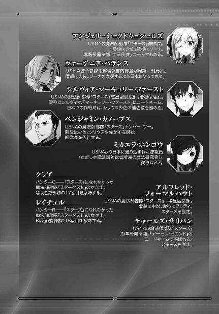
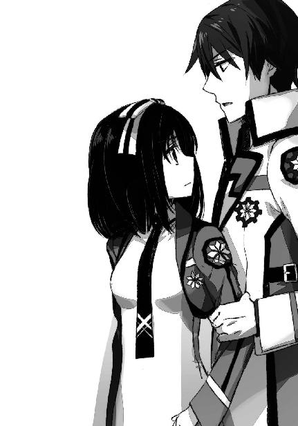

| 魔法科高校の劣等生(18) 師族会議編〈中〉 (電撃文庫) | |
| 佐島 勤 | |
| (2016) | |

本書（電子版）に掲載されているコンテンツ（ソフトウェア／プログラム／データ／情報を含む）の著作権およびその他の権利は、すべて株式会社ＫＡＤＯＫＡＷＡおよび正当な権利を有する第三者に帰属しています。
法律の定めがある場合または権利者の明示的な承諾がある場合を除き、これらのコンテンツを複製・転載、改変・編集、翻案・翻訳、放送・出版、公衆送信（送信可能化を含む）・再配信、販売・頒布、貸与等に使用することはできません。


［６］
西暦二〇九七年二月五日火曜日、午前十時三十分。箱根の某ホテルで大規模な爆弾テロが発生した。
狙われたのは四年に一度の十師族選定会議の会場となったホテルだ。テロ発生の時刻には既に十師族の選任は終わり師補十八家はホテル外に退出済みだったが、十師族の各当主は日本魔法界の抱える諸問題について話し合う為、中に残っていた。
授業中にその報せを受けた達也、深雪、水波、琢磨、香澄、泉美の六人はすぐに現場へ向かい、たった今到着したところだ。辺りにはまだ悲鳴と怒鳴り声が飛び交っている。
焼け落ちたホテルの中から運び出される怪我人と、死者。路上に座り込んで治療を受ける人々の苦鳴。断続的に続く轟音は、瓦礫の中に放置されていた爆弾が今頃になって爆発しているものか。一昨年秋の横浜事変に負けず劣らぬ惨状だ。
思わずホテルへ向かって足を踏み出そうとした深雪の肩に、達也の手が置かれた。
「お兄様......？」
振り返る深雪に、達也が首を振ってみせる。
「任せた方が良い」
魔法で火を消そうとした深雪を、達也が制止した。
火事は既に、鎮火へ向かっている。どのくらいの爆発物が残っているのか分からないのが危険といえば危険だが、消火に当たっているのは訓練を受けた消防士だ。自分たちには分からない段取りもあるだろうから、手出しをしない方が良いと達也は考えたのだった。
「それよりも、叔母、いや、母上たちと合流しよう」
達也は「叔母上」と言い掛けて、琢磨たちが同行しているのを思い出した。不要な配慮かもしれないが、「設定」を疑われるような言動は避けるべきだと判断したのである。
「あっちだ」
深雪と話をしながらも、頻りに左右を見回していた琢磨や泉美より先に、達也は当主たちの一団を見つけた。
十師族の当主が一塊になっている姿は壮観だったが、彼らは何故この場に留まったままなのか。達也が首を捻っていたのは、私服刑事の集団と思しき人影をその隣に見つけるまでの、短い時間だった。
「お父様！」
そんな疑問を懐かず走り出したのは泉美だ。
「あっ、待ってよ、泉美！」
その背中を、これまた何も考えていない香澄が追い掛ける。
「あれはまさか、刑事......？」
親の許へ駆け寄るのは一緒でも、周りの状況を把握してから、という点では、琢磨の方が二人より冷静だったと言える。
結果は同じだが。
「お兄様、如何なさいますか？」
どうやら十師族の当主たちが事情聴取を受けているようだと覚った深雪が、達也に自分たちが取るべき行動を問う。深雪だけでなく、水波も彼の顔を仰ぎ見ていた。
「泉美たちを放っておくわけにはいくまい」
六人とも学校を早退してそのままこの場に駆けつけている。当然着替える時間など無く、一高の制服姿のままだ。
ならば上級生として、一年生が暴走でもしようものならこれを止めなければならない。達也は深雪と水波に「仕方ない」と目で伝え、真夜の立っている所へ向けて歩き出した。
「何故お父様たちが警察の訊問を受けなければならないのです!? お父様たちは被害者ですよ！」
案の定、泉美が刑事に食って掛かっていた。普段のお淑やかな態度に反して、こういう時は恐い物知らずだ。若者らしい潔癖症で、公権力の理不尽が許せないのかもしれない。
（それにしても......何故誰も泉美を止めないんだ？）
声高に抗議する泉美を、制止しようとする当主はいない。皆、傍観しているだけだ。少なくとも親である七草弘一は娘を叱らなければならないシチュエーションのはずだが、叱責するどころか面白がっている。神妙な顔はしていても、目が笑っていた。
今は刑事も面食らっているだけだが、泉美がこれ以上続けると彼らの心証を害することになる。それは徒にこちらの──叔母たちも自分たちも──立場を悪化させるだけだ。大人が動こうとしないので、達也は仕方なく自分が動くことにした。
「泉美、止めるんだ」
「司波先輩、何故止めるんですか！」
泉美は肩に置かれた達也の手を振り払った。
その振り払う手を摑んで、達也が泉美の重心をコントロールしながら引き寄せる。
泉美は抵抗する間もなく、それどころかまるで痛みも覚えず、まるでダンスでリードされるように達也に誘導されて、刑事の前から引きはがされた。
「頭を冷やせ。警察の方は職務を遂行されているだけだ」
この言葉は泉美だけに告げたものではない。香澄と琢磨を牽制するものでもあった。
「邪魔をすれば、それだけ事情聴取が長引く。──失礼しました」
後半は私服刑事に向けたセリフだ。その妙に隙の無い態度に威圧されたのか、刑事は曖昧に頷くだけで泉美の妨害を咎める言葉は無かった。

達也が泉美の手を引き、香澄と琢磨を視線で引っ張って、大人たちの側を離れる。
その様子を、真夜を除く各家当主が興味深げに見ていた。
特に弘一と剛毅の眼差しには強い関心が宿っていた。
警察の事情聴取は始まったばかりだったのか、達也の予想以上に長引いていた。今や私服刑事だけでなく、制服警官の人垣が当主たちを取り囲んでいた。まるで容疑者扱いだ。
しかしそれは、達也にとって重要なことではなかった。
彼にとって重要なのは真夜の安否だけだ。今のタイミングで真夜に退場されるのは都合が悪すぎる。深雪が四葉家の次期当主であると明らかにされたことで、達也たちはもう匿名性の陰に隠れていることができなくなった。
それでいながら、まだ自分たちの足場が固まっていない。味方だと言い切れる存在は牛山以下のＦＬＴ開発第三課だけだ。八雲も風間も、いざとなれば不干渉を貫くだろう。その上「スポンサー」との顔合わせもできていない状態だ。
真夜は世界最強の魔法師の一人と言われている。その評価に偽りはない。魔法戦闘で彼女に勝てる者はほとんどいないだろう。彼女の「流星群」を受けて無事でいられる魔法師は皆無に近い。それは達也も例外ではなかった。
達也の「分解」は真夜の「流星群」に対して相性の良い魔法だ。「流星群」は「分解」で無効化できる。しかし真夜は、魔法の威力だけでなく発動スピードも超一流。達也には無い多様性、持ち札の多さもある。真夜の魔法は「流星群」だけではないのだ。達也が先手を取れるとは限らない。「分解」よりも「流星群」が先に完成したら、達也も無傷では済まない。彼が真夜に勝てるのは「再成」があるからであって、達也と同じ異能を持たない限り真夜には勝てないだろう。一旦発動した「流星群」はどんな防御魔法を以てしても、十文字家の「ファランクス」を以てしても防ぎ止めることはできないのだから。
しかしそれはあくまでも、魔法戦闘における強さだ。真夜の肉体には通常、人が持ち得る程度の強度しかない。美容と健康を維持するレベル以上には特に鍛えていない、か弱い女性だ。切られれば傷つくし撃たれれば血を流す。
どんな高位魔法師であっても、常に魔法障壁を張り続けるのは不可能だ。常時発動型の防御魔法は未だ完成していない。実用化どころか、実験できる段階にすらない。四葉真夜といえど、不意を突かれれば一発の銃弾で致命傷を負うということもありうる。
万が一の時は人前で「再成」を使うことも覚悟して達也はこの場に駆けつけたのだが、取り敢えず真夜の無事な姿も確認できた。まだしばらく話もできないようだし──話をすることも無いし──学校に戻ろうか、と考えた達也は、ちょうどその時、見覚えのある赤系統の制服姿を見つけた。
「一条」
それなりに大きな声だったが、声を張り上げたというほどではない。
だが将輝は達也の呼び掛けにしっかり反応した。
「司波」
父親の剛毅を探していたのだろう。左右に目を配りながら急ぎ足で移動していた将輝が、達也の前に歩み寄る。
「司波さんもいらっしゃっていたんですか」
達也の隣に立つ深雪を見て、将輝は喜びと落胆と諦めと渇望が混ざり合い溶け合った複雑な表情を浮かべた。
深雪は達也と腕を組んで──いない。
密着してもいない。
達也と深雪の間隔は、以前よりむしろ広がっている。だが将輝にはそれが、兄妹から恋人への変化に思われた。
「ええ、大変なことになりましたね」
将輝が自分に向けている感情を読み取ることは、深雪にも難しくはなかった。婚約が決まったと発表したばかりの自分に婚約を申し込んできた、という情熱的すぎる行動は横に置いておくとしても、将輝が今浮かべている表情は複雑でありながら分かり易いものだった。
実のところ、深雪は将輝に少なからず不快感を懐いていたのだ。一条家が横槍を入れたからといって、深雪が達也の婚約者であるという彼女の地位は揺るがない。だが、想いが叶うかもしれないという光明が見えた直後にケチをつけられては、面白いはずはなかった。
とはいえ、その不快感を将輝本人にぶつけるほど、深雪は幼くはなかった。また将輝の行動を不快に思っても、将輝本人に嫌悪感は無い。愛想良く微笑むくらいのことは簡単だった。
もっとも、つれなくされた方が早々に諦めがついて、将輝にとっても良かったかもしれないが。──なお深雪にとっては、将輝がさっさと諦めてくれる方が良いに決まっている。
「本当に......各家の皆様はあちらですか」
現実は深雪に笑顔を向けられて、こんな時にも拘わらず将輝はちょっとご機嫌になった。
「ええ。警察の事情聴取を受けているようです」
「事情聴取!? すみません。少々失礼します」
しかしそれも、色呆けして判断力を損なうほどではなかった。十師族が纏めて警察の訊問を受けているという状況に危機感を覚えたのか、将輝は父親の許へ向かった。
それと入れ替わるように、克人が警官の人垣から出て来た。彼一人が解放されたところから推測するに、未成年ということが配慮された結果だろう。（過去、成人年齢は一旦十八歳に引き下げられたが、二〇七〇年代に再度二十歳へ引き上げられている。これは二十年群発戦争で成人年齢の引き下げにより若年兵が大量動員されたことへの反省で、世界的な傾向だ。戦時中に十六歳まで引き下げられた成人年齢が戦後一気に二十五歳まで引き上げられたという極端な例もある）
人垣の外に姿を見せた克人は、真っ直ぐ達也たちの方へ歩いてきた。先ほど乱入した泉美を連れ出す際に、どの辺りにいるのか見ていたようだ。
「司波」
そう呼び掛けたきり言葉が続かなかったのは、達也と深雪のどちらへどう話し掛けたら良いのか克人が戸惑っているからに違いなかった。少なくとも、達也はそう考えた。
「警察の事情聴取は一段落ですか、十文字先輩」
達也は克人の意識を自分へ向けた。そしてこの場における自分の立ち位置を、十師族の一員としてのものではなく学校の後輩と定義する。
「いや、お前たちに状況を説明する必要があると思ってな」
克人もそれに乗ると決めたようで、態度からぎこちなさが消えた。
克人が達也の同行者に目を向ける。香澄と泉美は以前から見知っている。水波と琢磨は初対面、少なくとも意識的に言葉を交わしたことは無い。
「君はもしや、七宝殿の？」
克人が話し掛けたのは、琢磨の方だった。
「はい。七宝琢磨です。はじめまして、十文字さん」
琢磨は達也と対照的に、高校の後輩ではなく同じ十師族の一員として挨拶した。当主と当主の息子という違いはあるが、「十師族」は家につけられる呼称なので、その限りにおいては対等の立場になる。
「十文字克人だ。よろしく頼む」
「こちらこそよろしくお願いします」
だが対等といっても、先輩・後輩の序列が無くなるわけではないので自然とこういう言葉遣いになる。琢磨も初対面の克人に対していきなり生意気な口を利く度胸は無かった。
「この子は桜井水波といって、家で預かっている一年生です」
タイミングを見計らって達也が克人に水波を紹介した。水波が克人に向かい丁寧にお辞儀をする。それで克人は水波の素性をある程度、具体的には四葉家の使用人というところまで察したようだ。水波に目礼で答えて、克人は話を戻した。
「お前たちは被災通知を受け取ってここに来たのだろう？ 見てのとおり、四葉殿も七草殿も七宝殿もご無事だ。小さな怪我もされていない」
被災通知メールとは自分が災害に遭遇したことを肉親や知人に知らせる携帯情報端末のシステムで、近距離無線で火災警報や地震警報を受け取った端末が登録済みの通知先にそのことを知らせるネットワークサービスである。メールには発生している災害に関して自治体が把握している情報と共に、端末が監視している所有者のライフログが「無事」「危険」「死亡」の三段階評価で添付される。
しかしこの情報はメール発信時点、イコール災害発生時点のものであって、継続発信に設定されていない限りその後の状況変化は分からない。達也や将輝が慌てて駆けつけたのも、その為だった。
「そのようですね。ところで先輩、何が起こったのか教えていただいても構いませんか？」
「うむ。他の方々へのご説明もあるので簡単なものになるが」
克人の言葉を聞いて、達也は周囲をグルリと見回した。四葉家の関係者、具体的には花菱執事配下の荒事担当部隊が目立たぬように身を潜めていることには気づいていたが、他の家の身内と思しき姿もちらほら見受けられる。──自爆テロ犯の仲間と思しき姿は、残念ながら発見できなかった。
「お願いします」
達也が頭を下げることで簡単な説明でも構わない旨を伝えると、克人は頷いて何が起こったのか本当に簡単な説明を行った。
「実は我々にも、詳しいことは分かっていないのだ」
会議中、自爆テロに襲われて屋上から避難したこと、自爆テロには動く死体が使われていたことを説明して、克人はそう付け加えた。
「我々が標的であったかどうかすら、現段階では確定していない。俺は高確率で師族会議が狙われたと考えているが、警察の方でもまだ結論が出ていないようだ」
「すみません、克人さん。いえ、十文字先輩」
克人を名前で呼んで、慌てて先輩と言い直したのは香澄だった。彼女たち姉妹は高校入学前から克人のことを知っているので、学校のＯＢというより姉の友人という認識が強い。──真由美が克人を呼ぶ時は「十文字くん」で香澄が「克人さん」と呼んでいるのは、香澄や泉美の方が色々と余計なことを考えなくて良いからだろう。
「香澄、どうした」
それは克人も同じであるようだった。
「父は、いえ、皆様は警察に何を訊かれていたんですか？」
「何が起こったのか訊ねられた。我々は現場にいて、事実を目の当たりにしているからな」
「では、皆様やお父様は被疑者として取り調べを受けていたわけではないのですね？」
香澄の横から泉美が緊張した面持ちで口を挿む。普通に考えれば当たり前で、達也や深雪にとっては少し意外なことに、泉美は本気で父親のことを案じているようだ。
だからだろう。泉美に向けた克人の瞳には、微かな躊躇が見え隠れしていた。
「共謀や教唆を疑われてはいない。だが、魔法師間の抗争が自爆テロを招いたのではないか、と警察は疑っているようだ」
それでも、その場限りの誤魔化しは口にしなかった。
「そんな......」
口から呆然とした呟きを漏らしながら、泉美がその小さな手をギュッと握り締める。
理不尽だ、と考えているのだろう。
それは泉美だけが感じた怒りではなく、大人しく聞き手に徹している琢磨はもっと分かり易く歯を食い縛っていた。
「反魔法師団体が考えそうな理屈ですね」
自分の感情を精一杯コントロールしている一年生たちに心の中で高い評価を与えながら、達也は皮肉っぽい口調でそう感想を述べた。
「お兄様、まさか警察の中に『人間主義者』のような反魔法師団体が......？」
深雪のセリフに七草姉妹、琢磨、そして水波がギョッとした顔を見せる。
「いや、それはない。もしそんなことがあれば、取り調べはもっと露骨なものになる」
達也は京都の嵐山で周公瑾一派の道士に操られた古式魔法師を撃退した際、十師族に非好意的な刑事から受けた執拗な取り調べを思い出しながら、深雪の懸念を否定する。
それで深雪も一年生たちもひとまず安堵したようだが、克人は持ち上げた眉に、見開いた目に、意外感を残したままだった。
「司波、お前たちは兄妹ではなく従兄妹だったのではないのか？」
深雪が動揺を露わにする前に、達也が笑いながらその問いに答える。
「ああ、深雪の『お兄様』ですか？ つい先日まで兄妹だと思い込んでいましたから......中々すぐには変えられません」
「なるほど。そうだろうな」
克人はそれで疑いを解いた。これは克人が騙されやすいというより、達也の声や挙動が余りに自然だったということだろう。噓を吐くことに罪悪感も快感も覚えない、生粋の噓つきの態度である。
「あれっ、兄貴？」
ナイスタイミングと言おうか好都合と言おうか、ちょうどその時、香澄が声を上げてくれたお蔭で克人の注意はそちらへ向いた。
「智一さんか」
先方でも香澄と泉美に気がついたようで、こちらに手を振る青年を見て克人がその名を呟く。
「司波、他に訊きたいことはないか？」
「いえ、ありません」
「七宝はどうだ」
「いえ、俺もありません」
達也と琢磨に続けて問い、克人はその返事に頷いた。
「では、俺はこれで失礼する」
克人がこちらに足を向けた青年へと進んでいく。
「深雪先輩、司波先輩」
その直後に、泉美が達也たちに話し掛けた。
「兄が参ったようですので、私たちも失礼させていただきます。帰りは兄と一緒ということになろうかと思いますので、お気遣いなく願います」
「司波先輩、会長、失礼します。桜井さん、またね」
泉美に続いて香澄が達也たちに一礼し、水波に手を振る。双子の姉妹は克人の後を追うようにして智一という青年の許へ向かった。
「お兄様、あちらの方は泉美ちゃんたちの？」
その背中を見送った深雪が、すぐさま達也に確認の問い掛けを投げる。
「ああ。七草智一さん。七草家のご長男だ。泉美たちにとっては異母兄になる」
「そうですか......」
深雪の声に納得のニュアンスがあったのは、香澄が「兄貴」と言い泉美が「兄」と呼んだその声に、何処と無くよそよそしさが感じられたからだった。
「ところでお兄様、先ほどのお話ですが」
「ああ、警察が反魔法主義に汚染されてはいないか、という件だな。さっきも言ったように、その心配は無いと思う」
達也は深雪の質問を先取りしてそう返し、
「むしろ、その方が事態としては簡単なんだが」
ため息交じりに付け加える。
「......反魔法主義に限らず、警察が思想的な汚染を受けているとしたら、一大事だと思いますが？」
頭上に疑問符を浮かべて彼を見上げる深雪に、
「警察官の一部が反魔法主義に染まっているなら、その警官を処分すれば良い」
達也は心の中に描いている深刻な未来図を垣間見せる表情で答えた。
「何もこちらが手を下す必要は無い。情報だけ流してやれば警察が組織的に対応するだろう」「あり得ないことですが......魔法師に敵対的な警官が多数派を占めるようになった場合はどうすれば良いのでしょう？」
「どうしようも無い」
深雪の反問に、達也は苦々しい顔で頭を振った。
「魔法に対抗する科学技術が確立されない限り、魔法という現に存在する脅威に対する備えとして警察にも魔法師は必要だ。だからそうなる前に、政府が動く、はずだが......」
「そうならない可能性があるのですか？」
言い淀んだ達也へ、不安を隠せない声で深雪が問いを重ねる。
「刑事が思想的な偏向無しに、今回のテロは十師族にも責任があると考えている方が事態としては深刻なんだ」
達也は深雪の問いに直接答えず、話題を何ステップか後戻りさせた。
「思想的にニュートラルな刑事がそう考えるなら、思想的にニュートラルな市民もそう考える可能性が高いということだからね」
達也が真夜の方へ目を向ける。
十師族の当主たちは、相変わらず警察に囲まれたままだった。
「マスコミがこの事件をどう報道するかによって、世論の動向も大きく変わるだろう。そして残念ながら『魔法師の所為で一般市民が犠牲になった』という論調で報道する所が多いだろうな......」
達也が警察の人垣から救急車の列に視線を転じた。既に重傷者は移送された後のようだが、怪我人がまだ十人以上残っている。この分だと、死者の数も十人を下らないと思われた。
「テロを起こした責任はテロリストにある。だが今は俺と同じように思っていても、テレビやネットで『市民を巻き込んだ魔法師にも責任がある』と繰り返し吹き込まれれば、少なくない人々がそういうものかと信じ込んでしまうだろう」
「わたしたち魔法師も日本国民であることに違いはありませんのに......」
深雪が哀しげに目を伏せた。
「ですが」
だが俯いたままでないのは、深雪が儚げな見た目どおりの、気弱な少女でない証だ。
「魔法師に敵対的なマスコミばかりではないはずです。去年の四月にも、少数派とはいえ魔法師の権利と立場を擁護するメディアがありました」
深雪の言うとおり魔法師を標的とする論調が盛り上がった四月には、後半になってそれに対抗するような報道も見られた。
だが今回は多数の死傷者が出ている。状況はあの時より厳しいと達也は考えている。
「そうだね。師族会議も手をこまねいてはいないだろう」
しかし達也は、深雪を不安にさせるようなことは言わなかった。先行きに悲観していようが楽観的に構えていようが、事が起きる時は起きるのだ。今の段階でできることは、深雪にも達也にも無い。だからここで事態の悪化を憂えても意味は無い。
「それより母上のご無事も確認できたことだし、俺たちは学校に戻るとしよう」
克人と話をすることで状況も大体把握できたし、これ以上ここに留まってもできることはなさそうだ。この場は出しゃばらず、警察と消防に任せた方が良い。そう判断した達也の提案に、深雪は「はい、お兄様」と頷き、水波は無言で一礼して指示に従う意思を表した。
「七宝はどうする」
「俺は......もう少し残っています」
達也の問い掛けに、琢磨はそう答えた。
「そうか」
その判断に、達也は賛成も反対もしなかった。達也が琢磨の面倒を見る義務は無いし、筋違いでもある。達也が深雪と水波を促して、この場を去ろうとする。
「あの、司波先輩」
その背中に、琢磨の躊躇いを含む声が掛けられた。
「何だ」
「先ほどのお話ですが......いえ、何でもありません」
だが琢磨は、言い掛けたセリフを自分の意思で引っ込める。
琢磨が何事か迷っているのは明らかだったが、達也はもう一度「そうか」と応じて彼に背を向けた。
◇ ◇ ◇
焼け落ちたホテルと大勢の怪我人、そして死者。
その凄惨なテロを引き起こした首謀者は、現場から東へ約九キロ離れた小田原の、とある一軒家からその様子を見ていた。
自爆攻撃は顧傑が立てたプランの内、最もロスが少ない形で成功した。
爆発物は街の所々に設置されている探知機に引っ掛からなかった。旧式とはいえさすがはＵＳＮＡ軍で正式に採用された武器。遠距離ならば現役の爆発物探知機に対してもシールドは有効だった。
彼の死体操作魔法「僵尸術」で操られる肉人形もセンサーに捉えられることはなかった。ホテルの中で呼び止められることもなかった。
警備が甘い、と笑うつもりは無い。市街地のセキュリティレベルは先月まで暮らしていたＵＳＮＡに決して引けを取っていないと顧傑は評価している。自分の技量が一枚上手だった。彼はそう考えて満足感を覚えていた。
十師族には誰一人、かすり傷を負わせることもできなかったが、これは予定どおりだ。負け惜しみではなく、歩兵携行用ミサイルの弾頭如きでは傷一つ付けられないだろうと最初から予測していた。
予定どおり、十師族は自分の身を守った。自分たちだけを守って、他人を見殺しにした。死を弄ぶ魔法の使い手である顧傑が感知した死者の数は二十人以上。負傷者を合わせれば五十人は下らないだろう。
これだけの人数が十師族の巻き添えになったのだ。
それを顧傑は、日本人に教えてやるつもりだった。
十師族は、自分たちが生き延びる為ならお前たち日本人を見捨てるのだと。
お前たち日本人は、十師族の所為で殺されるのだと。
十師族は、四葉は、日本人に憎まれ日本に居場所を失うのだ。
自分が、祖国・大漢に居場所を失ったように......。
顧傑は暗い愉悦に満ちた嗤いを浮かべて、移動すべく立ち上がった。彼の足下には、この家の持ち主とその家族の死体が転がっていた。
◇ ◇ ◇
スターズのナンバー・ツー、ベンジャミン・カノープス少佐は、箱根テロ事件の現場中継をＵＳＮＡ大使館の一室で見ていた。
彼のスマートかつ精悍な顔は、苦い表情に彩られている。他国の人間といえど、非戦闘員がテロの犠牲になっている姿には痛ましさと憤りを覚えずにいられない。
厳密な兵民分離とそれに基づく非戦闘員保護を定めた古典的な交戦法規を遵守することが誇りある軍人の在り方だと信じるカノープスにとって、軍人の身分を隠した秘密工作が多いスターズの任務は本来、自身の信念に反している。そこに彼は、常に葛藤を覚えている。だからこそ、非戦闘員を巻き込むことは極力回避しなければならないと心に決めている。
許されるなら、カノープスはヘイグ（顧傑）のテロを阻止したかった。廃棄予定の兵器を盗まれたという身内の恥を曝してでも、日本当局と協力して市民を犠牲にするテロを阻止したいというのが彼の本音だった。
しかしそれは、彼に許されていなかった。兵器盗難の事実を、日本側に明かすことは禁じられていた。その事実を隠す為に、日本の軍や警察と協力することも禁止されていた。
カノープスに与えられた任務は、ヘイグの暗殺。その際、日本当局に主権侵害を非難される材料を与えてはならないという条件付きだ。公海上にヘイグを誘き出して抹殺する。それが最良の結果だと指定されていた。
彼は「骨の髄まで軍人」というには政治的な考え方を持っている人間だ。だが軍人である以上、命令には従わなければならないと理解していた。命令から逸脱した瞬間、軍人は私的な暴力を振るう無法者に成り下がると分かっていた。
今はまだ、無法者ではなく軍人として任務を果たすと、カノープスは決めていた。
◇ ◇ ◇
ようやく警察の事情聴取から解放された十師族の当主たちは、将輝が乗ってきたヘリで魔法協会関東支部へ向かった。無論、別行動していた克人も一緒だ。他に将輝がいるのは当然のこととして、香澄、泉美と二人の兄で弘一の長男である智一、そして琢磨も一緒だった。
魔法協会についた当主たちは、将輝、香澄、泉美、智一、琢磨を別室に待たせて協会の会議室にこもった。急なことにも拘わらず協会が用意した円卓の周りに腰を下ろした当主たちは、互いに顔を見合わせた後、最年長の二木舞衣に目を向ける。
「無意味な前置きで無駄に時間を費やすのは止めましょう。この非常事態にどう対処すべきか、皆様のご意見をお聞かせください」
九人の視線を受けた舞衣が、テーブルに座った一人一人を順に見た。
円卓を一巡した彼女の視線は、正面に座る弘一の所で止まった。
「マスコミを抑えるのは難しいでしょう」
十師族の中でマスコミの扱いに最も通じている弘一が、悲観的な見込みを口にする。
「現段階で死者十六人。未発見者を含めれば、最終的に死者は二十人を超えると思われます。世論をヒステリックな方向へ煽るには十分すぎる犠牲者数です」
「だからといって手をこまねいているわけにはいかないでしょう」
間に一人挟んだ席から五輪勇海が反論する。だがその声には勢いが無かった。
「いや、当面は静観する方が良いのではないか。余り性急に反対工作をすると大衆に見透かされかねない。そうなれば余計に反発を招く」
三矢元が唱えた消極論に、
「そうですね。そもそも我々もまた被害者であり、弁明しなければならないことは何も無い。焦って動いて痛くもない腹を探られるのは得策とは言えません」
八代雷蔵が同意を示す。
「しかし、黙っているだけでは一方的に悪者扱いされるだけだ。事は我々だけに留まらない。魔法師全体が白眼視されかねない」
「私も一条殿に賛成だ。やりすぎて反感を買うのは論外だが、黙っていても良いことなど無い。こちらが抵抗しなければ、相手に追い詰められていくだけだ」
剛毅と六塚温子は積極的に手を打つべきだと主張した。まだ会議は始まったばかりだが、早くも決裂ムードが漂いはじめている。これに眉を顰めた舞衣は、まだ意見を述べていない者に発言を促した。
「十文字殿は如何お考えですか？ どうぞご遠慮なく、ご発言ください」
克人は同じテーブルを囲む一同に軽く頭を下げてから、
「マスコミ工作は無駄でしょう。その点は七草殿に賛成です」
予想外にキッパリした口調でそう述べた。
「では何もしない方が良いと？」
意外だが面白い、という顔をした雷蔵の問いに、
「いいえ」
克人は雷蔵に視線を固定したまま、首を振らずに答える。
「小細工はせず、堂々と我々の立場を主張すべきと考えます。具体的には、魔法協会にテロを非難する声明を出させるのです」
「なるほど」
雷蔵は意表を突かれたという表情で頷いた。搦め手にばかり意識が行っていて、正攻法を見落としていたようだ。
「十文字殿のご提案は現実的な対応策として検討する必要があると思います」
七宝拓巳が克人の案に賛意を示す。
「あっ、私も魔法協会を通じて声明を出すというのは良い案だと思います」
軽く手を上げてそう言った雷蔵へ、
「八代殿は弁明不要というお考えだったのでは？」
温子が茶々を入れた。
不謹慎とも思われる発言に顔を顰めたのは剛毅で、言われた当人の雷蔵は笑って聞き流していた。
「四葉殿は如何お考えですか」
暖簾に腕押しな雷蔵の態度を、温子の方でも気にしなかった。彼女はすぐに真夜へ振り返って意見を求めた。
真夜は温子、ではなく彼女の隣に座る弘一へ目を向けて徐にその紅唇を開いた。
「どれか、選ぶ必要など無いと思いますわ。そうではありませんか、七草殿」
「確かにそうですね」
弘一は真夜の挑発とも思われる言葉に、平然とした顔で頷いた。
「魔法協会を通じた声明は当然出すべきでしょう。テロを非難するだけでなく、犯人逮捕に全面協力するという宣言を付け加えるべきだと考えます」
円卓をグルッと見回し反対の声が上がらないのを確認してから、弘一は続きを口にする。
「無論、マスコミ工作の方も進めておくべきだと思います」
「だが、マスコミを抑えるのは難しい。そう言ったのは七草殿、貴方ではないか」
元の指摘に、弘一は愛想笑いを浮かべて頷いた。
「ええ。魔法師に責任があるという声が高まるのは避けられないでしょう。ですが何もしないでいるのもまた得策ではありません。魔法師にも責任の一端はあったけれども、悪いのはやはりテロリストだ、という方向にマスコミの論調を誘導していくことは必要だと考えます」
元はこの答えに納得しなかった。
「そう都合良く行くだろうか。一旦反魔法師的な世論が形成されれば、それを覆すのは容易ではない」
「魔法師を敵視する風潮は長期的なものになるでしょうね。ですがテロリズムに対して市民のより強い敵意が向かうようになれば、相対的に魔法師への反感は緩和されます。我々の手でテロリストを捕らえ『責任を取った』ことを示せば敵意の転嫁はスムーズに進むでしょう」
「我々の手でテロリストを捕らえるべきと？ だがそれはリスクが高い」
ここで剛毅が、弘一と元の議論に割り込んだ。
「我々十師族当主が表立って動くには、統合軍令部の同意が必要だ。国法に定められていない非公式のルールで非公式の同意とはいえ、我々と政府の関係を考えればこの手続きは無視できない」
「一条殿は統合軍令部の同意が得られる可能性は低いとお考えなのですね？」
弘一の返答に、剛毅は「それだけではない」と首を振った。
「我々が首謀者の捕縛に乗り出して第二、第三のテロを許したならば、十師族の権威は地に落ちる。我々だけではない。魔法師に対する逆風も倍増するだろう」
「しかし、テロリストを放置するというわけにも参りませんわ」
真夜のこの発言は、一座に驚きを以て迎えられた。直接話し掛けられた剛毅などは目を剝いて驚愕を露わにしている。
「連続テロや模倣犯を阻止する為にも、私たち十師族の面子に懸けて首謀者を捕らえるか、あるいは処分する必要があると思います」
こうして喋っている本人以外、真夜が弘一を支持するなど思いも寄らぬことだった。
「ですが、一条殿のご懸念も理解できます」
「......それは、どういう意味でしょう？」
訝しげな目で真夜を見ているのは剛毅だけではない。弘一も色付きレンズの向こう側から同じような眼差しを真夜に向けていた。
「私たちが直接捜索に携わるのは、得策ではないということです。捕まえられなかった場合の外聞も問題ですが、それよりテロの再発を防止する為に目を光らせておく必要があると思いますの」
「私たちは新たなテロの阻止に目を配るべきと？」
舞衣の質問に、真夜は「ええ」と頷いた。
「では、テロリストの探索には誰を向かわせましょうか？」
温子のセリフは真夜にのみ問い掛けるものではなく、師族会議としてどうするかを問うものだった。
「当家からは達也を遣わします」
だが真夜はそれを理解していながら、あえて四葉家としての方針を答えた。
「将輝にその任を与えよう」
剛毅がまるでそれに張り合うかのように、将輝の名を挙げる。
「四葉殿、一条殿、お待ちください」
しかし、各家が遅れじとばかり身内の名を挙げていこうとするその出端を、舞衣が挫いた。
「四葉家の達也殿も一条家の将輝殿も高校生ではありませんか。潜伏している犯罪者を炙り出すには往々にして時間が掛かるもの。十師族の務めとはいえ、高校生の身で学業を長期間犠牲にするのは如何なものかと存じますが」
舞衣の常識論に剛毅は反論に詰まってしまった。
「お心遣いありがとうございます、二木殿。ですが、ご心配には及びません」
だが真夜はまるで狼狽えること無く舞衣に向かって微笑み返す。
「逃げ隠れする相手を見つけ出すのは目に見えている敵を撃退するより遥かに時間が掛かるもの。それは確かでしょう。ですがその点を考慮しても、我が四葉家のバックアップを受けた達也ならば、テロリストを仕留めるのに一ヶ月も掛かりません。その程度で学業に支障を来すこともありませんわ」
自信があるというより、未来を予知しているかのような真夜のセリフに、舞衣は圧倒されていた。
「......しかし」
だがそこは同じ十師族の当主。気圧されて舌が動かなくなるということはなかった。
「達也殿がまだ高校生という事実は事実。ご子息が如何に有能であっても、学外でテロリストを追わせるというのは外聞が悪すぎはしないでしょうか」
舞衣の言葉に、真夜は微かな笑みで応えた。その笑顔は「今更ですね」と語っていた。
二〇九五年四月に発生した第一高校テロリスト襲撃事件の詳細は一年以上にわたって秘匿されていたが、今ではその大体の顚末が十師族の間に公開されている。
達也が使った魔法については未だ詳細が明らかにされていない。だが、彼と克人が中心になってテロリストを倒したことは、達也が四葉家の一員であることが明らかにされた後に十文字家から、つまり克人本人から十師族各家へ報されていた。
また無頭竜の幹部暗殺に関しては秘密にされているが、横浜事変における国際会議場での立ち回りは当時から知られていた。パラサイト事件についても、詳細は伏されているが関与自体は明かされている。去年の秋、周公瑾を仕留めた件も昨日、真夜の口から語られた。高校生だから危険な真似はさせられない、という良識（常識）論は本当に今更だった。
「当家の智一にテロリスト追跡の指揮を執らせていただけませんか」
軽い膠着状態に陥った会議場の空気を動かしたのは弘一だった。
「長男は既に学業を終えた身で、仕事も時間の都合がつくものです。また、テロリストが何処に潜んでいるとしても、手掛かりは現場である箱根の近くにあるはずだ。関東・伊豆方面は十文字家と我が七草家の担当する地域です」
弘一が円卓を囲むメンバーの反応を窺う。
「もし周公瑾と内通していた私が信用できないということであれば、十文字殿を責任者とし、智一をその補佐とする形でも結構です」
剛毅が舞衣と、勇海が温子と、拓巳が雷蔵と顔を見合わせている。彼らは弘一の真意を測りかねていた。
「......それをもって罪滅ぼしとしたい、ということだろうか？」
舞衣とも真夜ともアイコンタクトし損ねた元が、探りを入れる目付きで弘一の真意を問い質す。
弘一は神妙な表情で頷いた。
「もちろんこれだけで皆様の信用を取り戻せるとは思っていませんが、汚名を雪ぐ第一歩にしたいと考えております」
「よろしいのではございませんか」
真夜が弘一の顔を見ずに、彼のプランを支持した。
「関東は七草殿と十文字殿のテリトリーですもの。七草殿が請け合われるのであれば、私はお任せしても良いと思います」
そう言って真夜が舞衣に向けて微笑みかける。
「皆様にご異存なければ、私もそのお役目を引き受けたいと思います」
その笑みに応えたのは舞衣ではなく克人だった。
「ご必要でしたら達也にお手伝いさせますので、遠慮なく仰ってください」
「かたじけない。一条殿にもご助力いただくことがあろうかと存じます」
「無論、当家も労は惜しまない。将輝を好きなようにこき使ってやってくれ」
真夜と剛毅に頭を下げて、克人は弘一に目を向けた。
「七草殿。名目上は私が責任者ということにさせていただきますが、実際の指揮は智一殿にお任せしたいと思います」
「ありがとうございます」
弘一がまさしく親子の年齢差がある克人に向かって丁寧に一礼する。
「ただし」
しかし、克人のセリフはそこで終わりではなかった。
「四葉家の達也殿、および一条家の将輝殿は私の方で預からせていただきます」
弘一が一瞬だけ、わずかに、鋭く目を細めた。だがそれは、室内でも掛けたままのサングラスで、他人からは見えなかった。
「ご趣旨はよく分かりませんが、構いませんよ」
弘一は克人に向かって鷹揚に頷いた。
今度は克人が弘一に向け、落ち着いた仕種で一礼する。
「では、魔法協会を通じてテロを非難する声明を出す。および十文字殿を責任者とし七草殿が主力となってテロの首謀者を捜索するという方針でよろしいですか」
舞衣が一同の意思を問う。
それに対して、雷蔵が軽く手を挙げた。
「その方針自体に反対はしませんが、そもそも首謀者は日本にいるのでしょうか」
外国から死体を操っていた可能性を彼は指摘しているのだが、
「それは間違いない」
剛毅がキッパリと否定した。
「死体を操っていた魔法は事前に決まった動作をプログラムする類の術式ではなかった。少なくとも実行のタイミングは遠隔操作によるものだ。あれほどの数の人体にコマンドを送る為には、ごく近くに潜んでいなければならなかったはずだ」
「ごく近くとは？」
勇海の質問に、剛毅は少し考えてから口を開いた。
「術者の技量にもよるが、最大で半径十キロ」
そして、思い出したように付け加える。
「相手が我々の想定を超える魔法技術を有していないと仮定すれば」
「それは考えても仕方が無いでしょう」
剛毅の隣から、克人がそう応じた。
「相手が我々の常識を超える魔法の使い手ならば、国内にいたとしても捕捉は不可能です」
「それもそうですね。私は先ほどの方針で良いと思います」
雷蔵が改めて舞衣の纏めたプランに支持を表明する。
それをきっかけにして、次々と賛同の声が上がった。
◇ ◇ ◇
方針が決まり、予定外の（場所での）師族会議は終わった。
各当主はすぐにその本拠地へ向かった。自分の地元、自分が担当する地域でテロの第二弾を起こさせないよう警戒を強める為だ。
担当地域といっても、例えば一条家が北陸・山陰を隈無く監視できるものではないし、六塚家が東北地方に起こる魔法犯罪を事前に阻止できるものでもない。十師族の担当地域は事後的な発見と対処の責任分担だ。
テロが起こるのを防ぐのは警察の役目。十師族はただそれに協力するにすぎない。だが、円滑な協力体制を構築し維持する為には、当主が不在であってはならないのである。──四葉家のように、それと分からない形で陰から手を貸す（手を出す？）場合も当主が家にいなければ不都合という点は同じだ。
各家当主が急いで帰路についたのは、そういう事情があってのことだった。
一条剛毅も将輝を伴い、ヘリで金沢へ向かっているところだ。
「将輝」
魔法協会関東支部のヘリポートから飛び立ち針路を西北西へ向けたところで、剛毅が息子に話し掛けた。
「はい」
その声音から、将輝はこれが親子の会話ではなく当主とその嫡子の会話と理解して、改まった応えを返した。
「今回のテロに対する師族会議の方針を伝える」
「はい」
「十師族は魔法協会を通じてテロを非難する声明を発表すると共に、テロ首謀者を捜索し、これを捕縛する。捜索の責任者は十文字殿。七草殿のご長男、七草智一殿がその補佐につく」
「我が一条家はどのような役割を担うのですか」
「十文字殿以外の十師族当主はテロ再発防止に当たる。将輝、お前には十文字殿の下でテロリストを追う任が与えられた」
「はい」
将輝は背筋をいっそうピンと伸ばして応えた。彼の顔に浮かんでいるのは、緊張ではなく興奮の色だ。将輝はテロ首謀者の捜索・捕縛の任務を名誉なものと考えていた。
「学校はしばらく休んでもらうことになるだろう。公休扱いとなるよう、校長に俺の方から話しておく」
「分かりました」
将輝は学校生活に愛着を持っている。本音では学校を休みたくない。しかし彼の中で十師族の責務は、それ以上に重いものだ。
将輝の顔は既に厳しく引き締まっていたが、剛毅の発した次のセリフで更に真剣味を増した。
「四葉家の司波達也殿がお前と同様、十文字殿の下で捜索に加わる。将輝、意地を見せろよ」
「はい！」
将輝は闘志も露わに力強く頷いた。
◇ ◇ ◇
波乱の二〇九七年二月五日が終わろうとしていた。
箱根のテロ現場に駆けつけた達也と深雪（と水波）も、自宅で一息ついているところだ。
真夜が無事だったことに取り敢えず一安心した達也だが、明日以降魔法師にとって厳しい逆風が吹くことは予想している。それでも何処か他人事の気分があったのは否めない。
テロに対しては、彼も人並みに怒りを感じている。
犠牲者とその遺族には、人並みに哀悼と同情の念を覚える。
だが深雪が標的とならなかったことに、安堵しているのも事実だった。
達也は今回の事件に対し、解決に向けて動くつもりはない。彼にとって重要なのは相変わらず深雪だけだ。真夜の身を案じたのも、現段階において彼女がいてくれる方が深雪にとって都合が良いからでしかない。
優先度は深雪より下がるとはいえ、一高が襲われた場合も達也は無視しないだろう。
だがそれ以外の理由、例えば今回の師族会議が標的となったからといって、達也が自主的に動く理由にはならない。
命令が、無い限り。
テロ事件のことなどすっかり意識から閉め出して、深雪の部屋で応用魔法学の課題を妹に教えていた達也は、電話のコール音に顔を上げた。だが深雪が受話ボタンを押す前に電話機のサインは通話中に変わった。水波が電話を取ったのだろう。今の電話は深雪の専用番号ではなく、家庭用の共通番号に掛かってきたものだったようだ。
達也が逸れた注意を課題に戻そうとしたその時、再び電話機が鳴った。通話転送の呼び出し音だ。
「はい」
深雪が受話ボタンを押し、マイクに話し掛ける。
『深雪様、ご当主様から達也様にお電話です』
スピーカーから、水波がそう応えた。
「分かった。リビングで出る」
達也は水波に指示を出すと同時に立ち上がり、何の用かと首を捻る間も惜しんですぐさま一階へ向かった。深雪も当然、その後についていった。
「お待たせしました、叔母上」
達也は保留にせず水波が相手をしていたヴィジホンの画面に向かってそう言いながら頭を下げた。他人がいるところでは真夜のことを「母上」と呼ぶようにした達也だが、身内だけの場所では「叔母上」のままだ。なお水波は真夜と達也が親子ではなく叔母と甥であるという真実を報されてはいないのだが、第三者に余計なことは言わないという信頼から身内扱いされているのだった。
『こちらこそ、こんな遅い時間にごめんなさいね』
「いえ、まだ勉強中でしたので」
達也の正直な回答は、真夜の笑いを誘った。
『達也さんでも勉強なんてするのね』
作り笑いではない。真夜は本気で楽しそうだ。
「これでも高校生ですので、勉学は欠かせません」
達也は真面目に答えて、真夜が本題に入るのを待った。
『......確かに学生の本分は勉学だものね。それに専念させてあげられないのは残念だわ』
真夜が本心から楽しそうに笑っていた顔をいつもの作り笑いに変えて、画面の向こう側から達也を見詰める。
達也は自然に背筋を伸ばし、命令を聞く姿勢になった。
『達也さん、貴方に本日のテロ首謀者捕縛の任を与えます』
「捕縛ですか？ 抹殺ではなく？」
『ああ、これは私の言い方が悪かったわね。テロリストの生死は問いません。見つけ出し、無害化しなさい』
「了解しました、叔母上」
達也は踵を揃えて一礼した。反射的に軍隊式の敬礼が出なかったのは、あらかじめ文民的な礼をするよう意識していたからだ。「承知」ではなく「了解」と言ってしまうあたり、独立魔装大隊の影響が皆無とはいかないようだが。
もっとも軍隊式の敬礼をしたところで、真夜は全く気にしなかっただろう。
『捜索は師族会議の決定です。責任者は十文字殿ですが、主力となる実働部隊は七草家が出します』
「では、自分も七草家の指揮下に入るのですか？」
『いいえ。十文字殿の要望で、達也さんはあの方の指揮下に入ることになりました』
そこで真夜は、爆弾を投下した。
『十文字殿というのは克人さんのことですよ。今回の師族会議で、十文字家は代替わりしました』
しかしこれは不発弾に近かった。
「そうですか」
『あら、驚かないのね』
「一昨年の段階で十文字先輩、いえ、十文字克人さんが十文字家の実質的な当主となっていたことは独立魔装大隊で耳にしておりましたから」
『おやおや......国防軍も油断できないわね。それともあのお嬢さんの力かしら』
真夜が「あのお嬢さん」と言ったのは藤林響子のことである。真夜は響子の二つ名「エレクトロン・ソーサリス」の意味を正確に知っていた。
そして前置き無く、真夜が二発目を投げ込む。
『一条将輝さんも達也さん同様、十文字殿の下でテロリスト捜索に当たります』
「一条さんがですか!?」
その爆弾は、達也にとってはネズミ花火程度の代物でしかなかったが、彼の横に控えていた深雪にとっては大きな効果を持っていた。
「失礼しました」
はしたなく声を上げたことに赤面し、深雪が恥ずかしそうに許しを請う。
『構いませんよ。驚くのも無理はありませんから』
画面の中で、真夜が鷹揚に許しを与える。
それで調子に乗ったというわけではないが、深雪は心に浮かんだ疑問をそのまま真夜にぶつけた。
「先ほどのお話ではありませんが、学業はどうするのでしょう？ 十文字様が指揮を執られるということは、捜索の場は関東なのですよね？ 一週間やそこらで解決するものとは思えませんが」
真夜が画面の向こう側から深雪に向かってニッコリと笑い掛けた。
『それほど時間を掛けるつもりはありません。無力化すべき相手の名前も素性も分かっていますから』
これには達也も驚いた。真夜が首謀者の正体を既に知っていたことに対して、ではない。誰がテロを起こすか分かっていながらまんまと出し抜かれたことに対して達也は驚愕を覚えたのだった。
『首謀者の名は顧傑。英語名はジード・ヘイグ。公的な身分は大漢出身の無国籍難民で元崑崙方院所属。崑崙方院が壊滅する前に脱出したようですね。外見年齢は五十代で肌の色は黒、髪は白。まあ、このあたりは幾らでも変えられますが』
真夜が語った人物像は、リーナからもたらされた情報と一致していた。おそらく出所は一緒だ、と達也は感じた。
「顔は分かっていますか」
『そこまでは分からないわね』
それでは手掛かりなど無いに等しい、と達也は思った。名前と素性は分かっていると真夜は言ったが、名前こそ幾らでも変えられる。短時間で捜索が終わるというのは随分と楽観的な予想ではないか。
達也はその思いを表情に出さなかったが、代わりに深雪が戸惑いを浮かべていた。
『そんなに心配しなくても大丈夫よ、深雪さん。大体の潜伏場所は、こちらで占っておくから』
どうやら四葉家の抱える魔法師には、達也も知らない時間遡行（ポストコグニション）、あるいは残留思念追跡（サイコメトリー）の感知系魔法を備えた者がいるようだ。達也は「占い」という言葉をそう解釈した。黒羽家の異常な諜報能力も、背後にそのような魔法が存在すると考えれば納得できる。自分たちはまだ四葉家について知らないことが多いと、達也は改めて感じた。
だが今はそれについて考えている時ではない。
『達也さんの出番はその後。一旦本人をその眼で認識すれば、逃がすことはないでしょう？』
「周公瑾には危うく逃げられるところでしたが......微力を尽くします」
達也は疑問形を取った真夜の命令に意識を集中し、画面に向かって恭しく一礼した。
◇ ◇ ◇
達也との通話を終えた真夜は、電話中のおっとりした表情を一転させた。
彼女の背後にはいつもどおり葉山が控えている。
真夜は腹心の老執事を、滅多に見せない厳しい顔付きで振り返った。
「葉山さん、手掛かりは見つかりましたか」
「まだでございます、奥様」
「そう」
葉山の慇懃な答えに、真夜は苛立ちの滲む声で応える。達也との電話中にも、十師族の当主たちを前にしても、見せなかった態度だ。
主の態度に、葉山は「焦るな」とは言わなかった。死者の記憶は三、四日程度で消えるものではないと、真夜も知っているはずだからだ。
「奥様、バランス大佐から受け取った情報を活かせなかったことを後悔していらっしゃるのですか？」
焦らないよう主人をたしなめる代わりに、葉山は焦慮を生み出している原因について真夜に問い掛けた。
真夜は反射的に反論しかけて、長く息を吐いた。
「......葉山さんを相手に強がっても仕方が無いわね」
真夜は苛立ちの代わりに疲れをのぞかせる笑みを見せた。
「事前に警告を受けていたにも拘わらず、敵に出し抜かれてしまったことに悔いはあります」
疲労しているのは当然だ。ただでさえ気の抜けない師族会議の二日目に、自爆テロからの避難。警察の事情聴取に場所を移した対策会議。
真夜は卓越した魔法師だが、肉体的には常人と変わらない。彼女が若いのは外見だけではない。身体の内側も見た目に相応しい若さを保っている。だがそれでも、三十歳前後の、美容と健康を維持するレベル以上には特に鍛えていない女性の体力しかない。
「奥様。お気持ちは分かりますが、既に起こってしまったことをあれこれ悩んでも、詮無いことかと存じます。四葉家といえど万能ではありません」
肉体的な疲れが精神的な活力を低下させるのは、休養を要求する身体からのメッセージだ。その自覚が無いなら、他人がはっきり言って気づかせてやる必要がある。
「......そうね。時間を掛けるつもりはないとはいえ、明日明後日中に解決する事案でもないですし、今夜はもう休むことにします」
だが幸い真夜の精神状態は、休養の必要性を認識できなくなるほど悪化してはいなかった。
「何か出て来たら明朝教えてください」
「お任せください、奥様」
書斎を後にする真夜を、葉山は恭しいお辞儀で見送った。
［７］
テロから一夜明けた二月六日。
この日は夜明け前から小雨が降り続く空模様だったが、達也はいつもどおり九重寺へ出掛けた。
門弟から手荒な歓迎を受けたのもいつもどおり。
だが八雲を前にして、達也はいつもと違う行動を取った。
「鬼門遁甲の破り方を教えて欲しい、ね......」
達也は八雲の教えを受けているが、実を言えば八雲の弟子というわけではない。
八雲に謝礼を払ってもいない。
八雲は基本的に達也の稽古の相手をしているだけで、最初は風間に頼まれたから、最近は実力が拮抗した、八雲にとっても良い練習相手になるからだ。
パラサイト事件の時、想子弾開発に協力したのは、あれが八雲にとっても放置できない事件だったからで、パラサイドール事件に協力したのも同じ理由、利害が一致したからだった。
時々調査に協力するのは、それが八雲にとっては趣味であり自分も楽しめるからだ。
寺の地下施設を貸すのは、それが八雲にとって価値のあるものではないからだ。
「達也くん。僕はこれまで君に色々な指導をしてきたけど、術を教えたことはない。君もその意味は理解していると思っていたけど？」
「理解しています。俺は九重寺の弟子ではないからです」
八雲が向ける冷ややかな眼差しを、達也は無機質な目で見返した。彼は自分と八雲の関係をきちんと心得ている。八雲に言われるまでも無く、術式を教えて欲しいと請う資格は無いと承知している。それでもあえて鬼門遁甲対策の伝授を願ったのは、必要に迫られてのことだった。
達也は一度視たものを逃さない。真夜はそう言ったが、それが過大評価であることを達也自身が知っている。現に彼は、周公瑾の鬼門遁甲を、自分の力だけでは無効化できなかった。周公瑾が名倉三郎と戦っていなければ、達也は周を逃がしていただろう。名倉三郎が自らの命と引き替えに残した血の刻印が無ければ、達也は周公瑾の鬼門遁甲を破れなかった。
リーナも真夜も明言はしなかったが、顧傑が周公瑾の背後にいた人物であろうことは想像に難くない。顧傑が「ブランシュ」や「無頭竜」の黒幕だったことは「七賢人」レイモンド・Ｓ・クラークから、録画映像ではあるが直接聞いている。ならば「ブランシュ」や「無頭竜」の手引きをしていた周公瑾も顧傑の配下だったに違いない。
師匠が弟子より常に優れているとは限らない。弟子の技量が師匠のそれを上回っていることも、決して珍しくはない。だが、周公瑾にできたことが顧傑にできないと考えるのは、楽観を超えて甘すぎる。少なくとも対策を講じておくべきだと達也は考えていた。
そんな達也の心中を知ってか知らずか、八雲の語調は素っ気ないものだった。
「そうだね。君は沙門でもなければ忍びでもない。忍びとしての僕にとってはあくまで部外者だ。部外者に秘術を伝えることはできない」
「魔法ではない破り方でも、守秘義務に触れますか？」
守秘義務、という現代的な表現に、八雲が苦笑を浮かべる。だが表情を崩したのはごく短時間だった。
「秘術を教えるのでなければ禁には触れないけどね......。要するに達也くんは、魔法に頼らない遁甲術の破り方を知りたいのかい？」
心の奥底まで見通すような八雲の眼差しを、達也は臆することなく見返した。
「師匠もご存じのとおり、魔法に関する俺の才能は著しく偏っています。高度な対抗魔法を教えていただいても残念ながら使いこなせないでしょう」
「そんなことは無いと思うけどね。確かに現代魔法の原理に従う術について言えば、君はとても不器用だ。しかし『意気』の操作に掛けては、その歳にして既に達人級と言っていい。君はむしろ、古い秘術に対する適性が高いと思うよ」
「古式魔法の作動原理も現代魔法と同じだと思っておりましたが」
「事象を書き換える類の魔法は古い魔法も現代の魔法も本質的に同じさ。だが僕たちの立場からすれば、事象を書き換える技術だけが『術』じゃない。武術の中に隠された秘奥義の多くは事象を書き換えるものではなく、『意気』によって『波』と『流れ』を制し、操り、断ち切り、壊すものだ」
「......師匠の仰る『意気』とは想子流のことですか？ 『波』は想子波動で......『流れ』は想子経路？」
「ふーん、よく勉強しているね。大体そのとおり」
八雲は薄く開いた眼から妖しい光を放った。
その瞬間、達也は上も下も無い、無重力空間とはまた異質の無方向空間に放り込まれたような錯覚を覚えた。
「僕たちにとって、『意気』を操る技も秘術に含まれる。そして鬼門遁甲を破る術は、まさしく『意気』の操作によってなされるものだ」
八雲の声が、達也の身体をあらゆる方向から圧迫する。
踏みしめるべき足場が無ければ、攻撃も逃走もままならない。
相手が何処にいるのか分からなければ、回避も防御もままならない。
八雲の姿は見えている。だが自分の五感が信用できない状態では、意味のある抵抗はできないだろう。
八雲に対する信頼度は、この際関係なかった。
生殺与奪を目の前の相手に握られている、その強烈な危機感を力尽くでねじ伏せ、
達也は自分の肉体、自分の内側へ意識を向けた。
血はいつもどおりに流れている。飛行魔法の最中に体感する、自由落下状態とは違う。重力に対して頭は上にあり、足は下にある。達也は全身を神経インパルスではなく想子信号によって掌握し、無方向空間の錯覚を打ち破る。
肉体に作用する重力の実感が戻って来た。
足は地面を踏みしめ、頭は天を向いている。
「師匠、今のは......」
「僕は何も教えていないよ。いやはや、今の幻術を自分の力だけで打ち破られるとは思わなかった」
八雲は今にもそっぽを向いて口笛を吹き出しそうな白々しい顔をしていた。
「風間くんでも初見で抜け出すことはできなかったんだけどね」
「今のは、鬼門遁甲の術式ですか？」
八雲の態度は無駄話で関心を逸らそうとするもののようにも見えたが、達也に正面から問い掛けられると、あっさり「違うよ」と答えた。
「鬼門遁甲は『陣』を敷く術だ。今のは個人に向けた幻術でしかない」
そう言って八雲は、いたずらっ子のような顔で笑った。
「もっとも君に幻術を掛けるのは僕でも難しいから、一工夫はしたけどね」
それがどのような工夫なのか、八雲は言わなかった。それが何か、達也は質問しようとした。だが続く八雲のセリフに、達也の意識はそちらへ切り替わった。
「ある意味では鬼門遁甲という術が出来上がる前の、原始的な形態と言えるかもしれない」
八雲がついでのように漏らしたその言葉を、「鬼門遁甲の破り方を教えて欲しい」という自分の依頼に対する回答だと達也は解釈した。
今の幻術がどのような仕組みで自分に作用したのか達也には分からなかったが、あれが鬼門遁甲の原始的形態であれば、対処方法も今の方向で間違っていないはずだ。ならば後は自分で鍛錬してものにするだけである。
「──師匠、ありがとうございました」
「だから僕は何も教えていないって。それより、組み手を始めようか」
いつもどおりの体術修行を促す八雲。
「よろしくお願いします」
達也はその言葉に一礼し、いつもどおりに構えを取った。
◇ ◇ ◇
多少のアクシデントはあったものの、達也は八雲と日課の組み手を終えて帰宅した。
その後は普通に登校。真夜からテロ首謀者追跡の任務は受けているものの、今は情報待ちの段階だ。
だが彼の日常は、昼休みを迎えるまでしかもたなかった。
深雪とほのかの冷戦状態も解決して、達也たちは再び、揃って食堂で昼食を摂るようになっていた。今日も深雪・ほのか・雫が席を確保したテーブルへ残りのメンバーが集まる。
そして彼らが食事を始めてすぐ、食堂の大型ディスプレイがテレビの緊急ニュースを流し始めた。
「テロリストの犯行声明？」
眉を顰めて幹比古が呟く。その間にもニュースキャスターは声明文を読み上げていく。
──昨日、箱根のホテルを襲ったテロを実行したのは自分たちである。
──自分たちは魔法という悪魔の力をこの大地から一掃する為、聖戦を行う者である。
──昨日の攻撃はこの国における魔法師の首魁、十師族を標的としたものだった。
──しかし十師族は卑劣にも、一般市民を盾として逃げ延びた。
──自分たちは今後も魔法師を名乗るミュータントから人類を解放する為、戦い続ける。
──日本人が魔法師を追放しない限り、犠牲者は増え続けるだろう。
ゴテゴテと飾り立てられた声明を要約すると、こんな内容だった。
そしてキャスターは昨日の爆弾テロの被害状況について伝える。
ホテルの利用客八十九名の内、死者二十二名、重軽傷者三十四名。
なお無事だった利用客三十三名の内、二十七名が魔法師。
キャスターは死者・重軽傷者の中に魔法師が含まれていないことを付け加え、彼らが我先に逃げ出すのではなく人命を優先していれば被害はもっと抑えられたのではないか、と結んだ。
「何で自分の命より他人の命を優先しなきゃいけないのよ」
画面の中で政治家のコメントを報じるキャスターに向かってエリカが吐き捨てる。テレビに向かって文句を言っても意味は無いが──食堂のディスプレイには双方向通信機能が付いていない──言わずにはいられないという心境だったのだろう。
「地位や職業で他人の命を優先しなければならない場合もあるけどね。それを無条件かつ当然のことのように語られるのは確かに不愉快だ」
幹比古が珍しく強い口調で嫌悪感を露わにしているのも、キャスターの理不尽な言い分が我慢できなかったからだった。
「自爆したテロリストは五十人近かったんだろ？ そんだけの数を相手にどうやって被害を防止できたって言うんだよ。十師族を万能のスーパーマンか何かと勘違いしてねえか？」
レオはキャスターの短絡的なコメントに呆れ顔だ。
「被災時の助け合いは必要なことだが、自分よりも他人を優先しろというのは美談の押し付けだな。さっきの言い方では、優先すべき人命に魔法師の命は入っていない」
達也はただ皮肉っぽいには留まらない、辛辣な口調で批判した。
それ以上、付け加えたいことも無かったのだろう。彼らはニュースの続きに耳を傾けた。
政治家の発言はテロリストを非難するものばかりだ。ここで十師族を攻撃するようなことを口にすれば、結果的に見てテロリストの主張に同調することになる。魔法師に対して日頃批判的な政治家も、テロが起こった昨日の今日では自重せざるを得ないようだ。
しかしニュースキャスターがさっき口走ったような、勘違いした正義感を振り回す論調は今後増えていくだろう。そうなれば魔法師嫌いの政治家は喜々としてそれに便乗するに違いない。去年の四月のようなことがまた起こるのかと考えて憂鬱な気分になったのは、達也だけではなかった。
◇ ◇ ◇
この日の夜、達也は十文字家の屋敷に招かれていた。
屋敷と言っても少し大きめの現代風建築だ。達也の自宅よりは大きいが、雫の家とは比べものにならない。ただ庭は、東京とは思えないほど広かった。
「良く来てくれた。上がってくれ」
達也が門柱の呼び鈴を押すと、中から克人が直々に出て来た。彼が十文字家の家督を継いだことは既に真夜から聞いている。当主自ら出迎えとは、自分が重要人物扱いされているのか単に使用人が少ないのか、達也は判断に迷った。だがすぐにどうでも良いことだと思い直して、その疑問を棚上げした。
「お邪魔します」
玄関も広さ以外は特に豪華ということはない。その広さも、平均的な一戸建て住宅の玄関の二倍程度だ。目立つ調度品もない。達也の目を引いたのは、きちんと揃えられた若い女性向けと思われるパンプスくらいのものだった。
公表されているデータを信じるならば、十文字家の子女は克人の下に現在中学二年生の次男と中学一年生の三男、小学五年生の長女という構成だったはずだ。自分以外にも客が来ているのか、と達也は思った。それが誰だか分かるような気もしたが、その推理を克人にぶつけることはしなかった。
克人に案内された、というより彼の背中について行った先の応接間には、達也が予想したとおりの女性が座っていた。
「こんばんは、達也くん。時間どおりね」
手前側のソファに座った真由美が、振り返って達也に向かい手を振る。
「ご無沙汰しています、先輩。十月末以来ですね」
「そうねぇ。丸三ヶ月ぶり？ 長いような、短いような」
「立ち話も落ち着くまい。司波、とにかくまず座ってくれ」
席を勧められて、達也は真由美の隣に腰を下ろした。ちなみに二人が座っているのは三人掛けのソファで達也と真由美の間には約一人分の間隔が空いている。
克人は真由美の正面ではなく、達也の向かい側に座った。
三人が腰を落ち着け、誰が最初に口を開くかと互いに目を見合わせたタイミングで、応接間のドアがノックされた。
扉の向こう側から現れたのは六十歳前後と思われる老婦人だった。
「粗茶ですが」
きれいな動作で茶托に湯吞みを載せ、それを達也の前に置く。彼女は真由美と克人のお茶も取り替えて一礼し部屋を出て行った。
「上品な方ですね」
達也が感じ入った声でそう漏らす。挙措の美しさでは彼の妹も負けてはいないが、何十年と研鑽を積んだ末に身につく品位は、深雪ではまだまだ真似のできないものだ。
「司波、七草、今日はわざわざ来てもらってすまない」
克人は達也の呟きに応えなかった。
よく見れば、微妙に照れ臭そうだ。
達也は隣で真由美が噴き出しかけた気配を感じた。
「いえ、大して距離があるわけでもありませんから」
本当は達也の自宅から克人の家まで直線距離で三十キロ以上あるのだが、このまま真由美を暴走させると居心地が悪くなるのは自分たちだ。達也は努めてシリアスな空気を演出しようとした。
その甲斐あって、真由美も意識を切り換えてくれたようだ。
「達也くんも来てくれたことだし、十文字くん、ご用事を聞かせてくれる？」
真由美の質問に、克人の雰囲気も変わった。克人のこれほど張り詰めた表情を、達也が見るのは初めてだった。
「昨日のテロ事件の件で、お前たちの力を借りたい」
克人の申し入れは達也にとって予想どおりだった。だが同時に、意外でもあった。
「その件については四葉の当主からも命じられていますので、もちろん俺は協力させていただきます」
達也はそこでチラリと真由美の顔を窺い見た。
彼女は神妙な、心の裡を読み取らせない表情で克人をじっと見ていた。
「しかし、何故七草先輩を？ 七草家もご長男がテロリストの捜索に当たられると聞いていますが」
「司波。あいにくだが、その質問に答えることはできない」
そう言って、克人は真由美に顔を向けた。
「七草。お前に対するこの依頼は十文字家として七草家のご息女に向けたものではない。友人としての頼みだ。だから家の都合を考える必要は無い。気が進まなければ断ってくれても構わない」
真由美は小さく息を吐き出した。そこには呆れているようなニュアンスがあった。
「十文字くん。それ、逆効果だから。『友人として』なんて言われたら、余計に断れないじゃない」
「むっ、そうか。すまん」
「全然すまなさそうに見えないんだけど......」
「いや、決してそんなことはないんだが......」
真由美に疑わしげな目を向けられて、克人がたじろいでいる。この二人のこういう親しげな姿を目にする機会が無かった達也は、新鮮な気持ちでその様子を眺めていた。
達也の視線に気づいた克人と真由美は、同時に小さく咳払いをした。
「それで、十文字くんは私に何をさせたいの？ 『力を借りたい』だけじゃ判断できないわ。私にできない事は引き受けられないし」
「それもそうだな」
克人は表向き何と説明すれば良いか考えを纏める時間を稼ぐ為、湯吞みを口に運んだ。
「今回のテロリスト捜索はいささか変則的な体制で行われることになっている」
「それは知ってる。総責任者が十文字くんで、主力の指揮を執るのが家の兄なんでしょう？ 非効率よね。家同士の面子に拘っている場合じゃないと思うけど」
どうやら真由美は同じ関東地区を地盤とする七草家と十文字家、両家の面子を立てる為にこのような変則体制が組まれたと理解しているようだった。
本当の理由は別にあるのだが、それを克人の口から真由美に告げることはできない。たとえ相手が真由美でなくても、「お前の父親が背信行為を働いたその償いでこうなった」などと言えるはずがない。
「そうだ。智一殿と俺が連携を取らず別々に動くと、無駄が生じてしまうのを避けられない。そこで七草には互いの進捗状況を伝え合う連絡係を務めてもらいたい」
克人は真由美の的外れな推測にはコメントせず、彼女の質問にのみ答えた。
「俺は捜査状況について智一殿に隠し事をするつもりはない。智一殿にもそんなつもりはないだろう。だが捜査の過程で秘匿技術や秘密情報網を使う場面は必ず出て来る。そうしたものから得られた情報は、部外者には伝えにくいものだ。得られた情報の性質から、その手段を推測することは決して不可能ではないからな」
「なるほど。だから私に、間に入れと言うのね？ 単なるメッセンジャーには明かせないことが出て来るから」
「そうだ。七草家の秘密に関わる部分はお前の判断で伏せてくれて構わない。テロ事件解決の為に必要と判断される情報だけを教えて欲しい」
「難しいことを言うなぁ......」
顔には苦笑いを浮かべているが、そのセリフにはかなり本気が混じっていた。真由美が自分の判断で情報にフィルターを掛けても構わないと克人は言っているが、その結果必要な情報交換が行われず肝心の犯人を逃がしてしまうという可能性もゼロではないのだ。簡単に頷けることではなかった。
「......分かったわ。引き受ける。確かに私が一番適任でしょうしね」
「助かる」
「気にしないで。家の問題でもあるんだし」
実を言うと真由美にこの役目をやらせるのは弘一からの依頼だ。その理由を弘一は告げなかったが、真由美と達也が会う機会を増やそうとしているのだ、ということは、克人にも薄々察しがついている。
調整役としての連絡係が必要なのは事実だ。だが弘一の騙し討ちじみた思惑に協力する格好となっていることが、克人には心苦しかった。その所為で必要以上に腰が低くなっているのだが、そういう裏事情に真由美が気づいた様子は無い。
「それで、具体的にはどうすれば良いの？ 大学はしばらくお休みするべきかしら」
「それをこれから相談したいと思っていた」
そう言って克人は「一人蚊帳の外」状態だった達也へ目を向けた。
「有力な手掛かりが見つかるまでは自由に動いてもらって構わないが、連絡だけは密にしておきたい。できるだけ直接会って打ち合わせをしたいのだが、何時なら都合が良い？ できれば毎日、進捗だけでも確認したいのだが」
この「できるだけ直接会う」というのも、真由美を連絡係として提供するに当たり弘一が強く要望したことだ。しかし、それ自体は合理的なことだった。
「俺は構いません」
その為か、達也もこの些細な陰謀に気づいた様子は無い。
「そうか」
迷う素振りも無く答えた達也から、克人は真由美に視線を戻した。
「七草はどうだ」
「毎日必ずって確約はできないけど、原則としてはそれで構わないわ」
「それで十分だ。場所は何処にする？」
「私と十文字くんだけなら魔法大学の近くが良いと思うけど......」
そう言いながら真由美は横目で達也の顔色を窺った。
「問題ありません」
達也はまたしても即答した。先輩二人に遠慮したのではなく、魔法大学ならば達也にとっても都合が良いからだ。
「しかし、魔法大学の近くに適当な場所がありますか？」
通信機器を使うのではなく直接会って話をするだけとはいえ、盗聴対策は必要だ。普通の民間住宅では心許ない。
「それは俺が手配する。情報交換を始めるのは明後日からにしたい」
「了解よ」
「承知しました。何時に、どちらへうかがえばよろしいでしょうか？」
「......では明後日の十八時、魔法大学の正門前に来てくれ」
達也の質問に少し考えて、克人は待ち合わせの時間と場所を指定した。
十八時なら、生徒会を休めば自宅に戻ってから改めて外出しても間に合う。
「分かりました」
達也は頭の中で素早くそう計算して、頷いた。
◇ ◇ ◇
東京で達也、真由美、克人が十文字邸で今後の方針について相談していた頃、一条剛毅は地元の名門料亭を訪れていた。味はもちろんのこと従業員の教育も良く行き届いており、この地方の政治家が密談によく使っている店だ。
剛毅も政治家の接待で年に四、五回この店を使っている。彼にとっては苦手分野だが、十師族の役目柄、仕方の無いことと割り切っていた。
しかし今日招いた相手は、政治家ではない。
剛毅の前に座る女性は、第三高校校長・前田千鶴だった。
「前田先生、本日はお忙しいところ......」
「あー、止めようぜ、そんな堅苦しい挨拶は。あたしとお前の仲だろう？」
......この言葉遣いを聞いていると、校長どころか教員とも思えないが、間違いなくこの女性は将輝の通う国立魔法大学付属第三高校の校長だ。
「......千鶴先輩、よくそれで校長が務まりますね。魔法科高校は国の機関ですよ」
「バカだな、剛毅。普段は猫を被っているに決まっているじゃないか」
剛毅の嫌味に、前田校長はあっけらかんと応じる。
「それに魔法科高校は高等学校だ。国立ではあっても国の軍事機関じゃない」
そして獰猛な笑みを浮かべながら、そう続けた。
剛毅も魔法科高校と防衛大学校を同列視したつもりはなかったが、一々反論はしなかった。前田の軍に対する複雑な思いを彼は理解しているつもりだからだ。
前田校長は二十代後半まで国防海軍に所属していた。最終階級は中尉。上官との間にトラブルを起こし（集団セクハラ事件だったと伝えられている）、若くして軍を退役。その後、教育者に転身し四十歳で第三高校の校長に抜擢された異色のキャリアを持つ。
そして彼女は第三高校で剛毅の一年先輩だった女性だ。在学中は並み居る猛者を蹴散らして実技トップに輝いたこともある女傑であり、剛毅も鼻っ柱をへし折られた経験がある。前田は彼にとって頭が上がらない先輩だった。
「さて、剛毅。話を聞こうじゃないか。あたしを珍しくこんな所へ呼び出したんだ。さぞかし重要な用件なんだろ？」
「私的な用事です」
前田の先制パンチにも怯まず、剛毅は堂々と──むしろ開き直っているような声で答えた。
「ほう......まさか息子の内申点を上げろとか、そういう話じゃないだろうな」
「似たような内容かもしれません」
前田は鋭い眼光を宿した目で続きを促した。
「昨日、箱根で起こったテロについてはご存じですよね？」
「知っている。災難だったな」
「では、あの事件について魔法協会から出した声明についても？」
「無論、知っている。だがあれは、余り効果が無いんじゃないか？ テロリストを非難するのは当たり前のことだし、魔法師に対して非好意的な人間には責任転嫁のように受け取られるかもしれないぞ」
そう言って前田は、
「襲われた魔法師に責任があるという言い種こそ、本当は責任転嫁なんだがな」
と付け加えた。
「我々も非難するだけで済ませるつもりはありません」
「そう言えば、あの声明には犯人逮捕に可能な限り協力すると付け加えられていたな。あれはリップサービスではなかったのか」
「一条家からは将輝を捜索に加わらせます」
剛毅は無言で頷いた後、そう言葉を続けた。
前田は「無茶だ」とは言わなかった。
「それで？」
その代わり、剛毅が次に何を言い出すのか察したような顔で訊ねた。
「捜索は十文字殿を責任者として、事件現場の箱根周辺からスタートし、数週間から一ヶ月以上の長期に及ぶことが予想されます。ですから将輝はしばらく東京の別宅に泊まり込ませるつもりです。学校も長期間休ませることになります」
「それを休学ではなく公休扱いにして欲しい、と言うんだな？」
「はい。十師族の仕事は公務ではありません。あくまで私事ですから、筋違いであることは理解しています。ですが息子が後顧の憂いなく務めを果たせるよう、曲げてお願いします」
頭を下げる剛毅へ、
「確かに筋違いだ」
前田は冷ややかに答えた。
「十師族だからといって、そんな便宜は図れない。あたしの仕事はむしろ、そういう不正な特別扱いを正すことにある」
「......分かりました」
剛毅はそれ以上食い下がらなかった。前田は杓子定規な人間ではない。どちらかと言えば情に厚い女性だと剛毅は知っている。だが一度筋を通すと決めたら決してそれを曲げない人物であることも剛毅は知っていた。
「愚かなことを言いました。忘れてください」
「いや、お前の立場も理解できる。ご子息を東京に派遣する必要性も分かっているつもりだ。だから欠席を公休にする特別扱いはできないが、百山先生にお願いしてやろう」
「はっ？ 百山先生というと、第一高校の百山校長のことですか？」
剛毅は何故ここで百山の名が出て来るのか理解できず、不得要領な表情で前田を見返した。
「そうだよ」
「何を依頼するのですか」
「ご子息の短期受け容れだ」
前田はわざと説明を端折っているわけではない。剛毅が質問するタイミングが早過ぎて、詳しいことを話す暇がないだけだ。
「まあ待て」
このまま問答を続けていると余計に時間が掛かるので、前田は口を開き掛けた剛毅を言葉と手振りで制止した。
「転校させるという意味ではないぞ。一高で理論課程だけでも学べるように手配してやろうという意味だ。魔法科高校に限らず、座学は端末による個別講義が現在の主流だ。同じ魔法科高校同士なら魔法大学を経由してデータの遣り取りは可能だから、一高の施設を使って三高の授業を受けさせることもできるだろう。実技と体育は無理だが、一条君なら一ヶ月程度のブランクは問題にならないはずだ」
「つまり任務の間、息子を一高に通わせるということですか？ 聴講生のような扱いで？」
「刑事みたいに、ずっと捜査に掛かり切りというわけではなかろう？」
剛毅が頷くのを見て、前田は話を続けた。
「本当は家庭学習を許可してやれれば本人の負担も少ないだろうが、魔法科高校の学習用データ回線は魔法大学以外につなげてはならないことになっている。環境の変化や人間関係に苦労するかもしれないが、一高で教養科目と理論科目を履修すれば出席扱いにしても差し支えあるまい」
ようやく剛毅の顔に納得の色が浮かんだ。
「住む場所の準備もあるだろう？ 今週末までは当校に出席し、来週の月曜日から第一高校に通えるよう、話をつけておこう。期間はそうだな、三月九日までの一ヶ月でどうだ？ もちろんその前に事件が解決すれば、何時でも戻ってこられるようにしておく」
「ありがとうございます、千鶴先輩。よろしくお願いします」
親にしてみれば、公休扱いにしてもらうより余程の好条件だ。剛毅に異論があるはずはなく、彼は前田に向かって深々と頭を下げた。
その後、剛毅は日付が変わるまで前田に引き留められて、彼女に酔い潰された。
◇ ◇ ◇
ヘイグの犯行声明は、多くの魔法師が懸念したとおり世論を沸き立たせた。マスコミは早くも魔法師非難一色だ。いや、昨日の今日だから余計に加熱しているのかもしれないが、非難されている側としては「マスコミは熱しやすく冷めやすい」などと楽観的にはなれなかった。
一高生たちも明らかに浮き足立っていた。自分たちにできることは無いと知りながら休み時間になるとニュースをチェックする姿が校内のあちらこちらで見られる。生徒たちは苛立ちを込めて、あるいは声を潜めて、マスコミの偏った論調について言葉を交わしていた。
報道に対する一高生の反応は大体三つのパターンに分かれていた。最も多いのはテロリストではなく魔法師を悪者扱いするマスコミに怒りを示すもの。これは男子生徒に多い。女子生徒に多かったのは魔法師を敵視する風潮が強まるのを恐れるもの。そしてもう一つは、苗字に数字をもつ百家の、一部の者が不満げに漏らしていたものだった。
放課後の生徒会室でも、ニュース専門放送が流れていた。普段は作業の邪魔になるという理由でＢＧＭすらつけないのだが──音楽の好みが人によって分かれるからである──今日はどうしても気になるのだろう。......結果として、やはり仕事の効率は低下していた。
明日から生徒会をしばらく休む達也だが、引継ぎが必要な仕事は無い。だから彼は仕掛かりの山を、ただ黙々と崩していた。これが無ければ生徒会の業務は約一日分滞っていたかもしれない。
そんな達也が手を止めたのは、聞き流せない発言が耳に飛び込んで来たからだ。そのセリフの主は、来月に予定されている卒業パーティーの打ち合わせに招いた前生徒会会計の五十里、ではなく彼についてきた花音だった。
「千代田先輩は、私たちが悪いと仰るのですか？」
達也が顔を向けた時には、会長の深雪と共に副会長として打ち合わせに参加していた泉美が花音に抗議していた。その反問は彼女らしい抑制の利いた礼儀正しい口調によるものだったが、不快感は隠し切れていなかった。
達也は泉美にとってただ上級生というだけで、同じ生徒会役員とはいえそれほど親しくしているわけではない。泉美をたしなめなければならない立場にはなかったが、たとえ深雪が同じことをしても、達也は何も言わなかっただろう。花音の言ったことは、泉美を怒らせるに十分なものだった。
花音はこう言ったのだ。
『あーあ......それにしても十師族がヘマをしてくれたお蔭で、あたしたちまでとんだとばっちりよね』と。
打ち合わせが一段落した後の雑談の中で、背後に流れるニュース番組の、魔法師に対して一際厳しい論調のコメントを耳にした花音が深い考えもなく呟いた言葉だ。だがこれは彼女一人の意見ではなく、魔法師として名前が売れている百家本流の数字付きの間で唱えられている不満だった。
「そりゃあ、悪いのはテロリストに決まっているけど、十師族の対応がまずかったのも事実でしょ」
花音がこぼした愚痴は、彼女一人のものではない。身近なところでも、花音はクラスメイトの口から同じ内容のセリフを耳にしていた。自分だけが不満に思っているのではないという事実が彼女を強気にしている。それに加えて自分の言葉が筋違いなものであると本当は分かっていたから、その後ろめたさが花音を意固地にさせていた。
「何がいけなかったと仰るのですか？」
泉美は箱根で刑事に対していた時のように、熱くなってはいなかった。慇懃な口調と醒めた表情で、冷ややかに問い掛ける。
興奮したのは花音の方だった。彼女は泉美の態度が相手を軽蔑しているものだと正確に理解していた。
「同じ所に居合わせた一般市民を一人も助けなかったなんて、非難されても仕方が無いでしょう！」
もっとも花音は、激することもしなかった。せいぜい少し語気を強める程度で済ませた。
だが彼女は、もっと感情的に、高圧的になった方が言い争う上では正解だったかもしれない。
結果論だが、上級生の立場を盾に取っていれば、これ以上口喧嘩同然の口論にならず終わっていたことだろう。
「一般市民、ですか？ 一般とはどういう意味でしょう？」
「どういうって......」
泉美の揚げ足取りじみた質問に、花音は即答できなかった。
「文民という意味ですか？ それとも公職にないという意味ですか？ もしそういう意味であれば、十師族当主の皆様には軍人も公務員もいらっしゃいませんので『一般市民』に該当しますが......？」
「何が言いたいのよ」
「いえ、『一般市民』が自分の避難よりも他の『一般市民』の避難を何故優先すべきかと疑問に思いまして......」
泉美が左手で口を隠した。
花音は彼女に嘲笑われた、と感じた。
「貴女ねぇ！」
机に手をつき椅子の脚を軋らせて花音が立ち上がる。
「花音っ、落ち着いて！」
その肩に一拍遅れて立ち上がった五十里が手を置いた。
「泉美ちゃん、申し訳ないのだけど購買で全員分の温かい飲み物を買ってきてくれないかしら。お金はこれを使ってね」
その向かい側では、花音と泉美の口論を黙って聞いていた深雪が、泉美に向かって生徒会用のマネーカードを差し出しながらそう命じた。
生徒会室のダイニングサーバーには給湯機能も備わっている。茶葉もコーヒー豆もポットもコーヒーメーカーも生徒会室にはある。普段は飲み物を外に買いに行くことは無い。
つまりこれは、外で頭を冷やしてこいという意味だ。
「分かりました......」
泉美はしゅんとした表情で立ち上がった。大好きな深雪に叱られて、彼女の頭は一気に冷えていた。
「私もお手伝いします」
水波が立ち上がって、泉美に同行することを深雪に申し出る。
「ええ、お願い」
「はい。......七草さん、行きましょう」
水波は深雪に一礼して、泉美の横に歩み寄り彼女の手を取った。
泉美と水波の気配が扉の向こう側で遠ざかる。
それを確認して、五十里が花音に向かい口を開いた。
「......今のは花音が悪いよ。たとえ十師族の皆さんに犠牲になった人たちを助けるだけの余裕があったとしても、それは義務じゃないんだから。善意を強制するのは間違っている」
「でも......」
花音は不満げに声を上げたが、五十里は彼女のセリフを眼差しで遮った。
「そりゃあ、目の前に倒れている人がいるのに、助けもせず素通りするのは道義的にどうかと僕も思うよ。でも避難しなきゃ自分の身が危ういという状況で、何処にいるのかも分からない他人を探して助け出せとは言えないよ。十師族だって不死身じゃないんだ」
「それは......そうかもしれないけど」
「消防隊員だって、突入すれば命が危ういという火の中に飛び込むのは当然のことじゃない。自ら進んで命の危険も省みず被災者の救助に向かうのは、勇敢で気高い行為だ。でも彼らに対して責任を負わない立場の者が『安全は保証できないけど飛び込め。それがお前たちの義務だ』と強制するのは愚かで卑劣な行為だと思う。それは隊員の命に対して責任を負い、リスクを共有する隊長だけが命じて良いことなんじゃないかな」
花音は五十里から目を逸らして俯いた。
「ましてや事が終わってから、本来存在しない義務を当然のものであるかの如く押し付けて当事者を責めるのは、やってはならないことだと思う。僕は花音にそんなことをして欲しくない。花音だって小父さんがそんなことで責められたら怒るでしょう？」
「......うん」
五十里の優しい問い掛けに、花音は俯いたまま頷いた。
「分かってくれて良かった。じゃあ、七草さんが戻ってきたら謝らなきゃね」
五十里の言葉に、花音はもう一度コクンと頷いた。
◇ ◇ ◇
花音は生徒会室に戻ってきた泉美に謝り、泉美も自分の態度が悪かったことを花音に謝った。二人の間では無事和解が成立したが、これは花音と泉美が直接顔を合わせる間柄で、五十里という理性的な調停者がいたからできたことだろう。
魔法師ではない人々の多くは、魔法師との私的な交流が無い。世間には魔法師と魔法師でない者の間を取り持つ調停者もいない。魔法師でない者にのみ大量の犠牲者が出たという事実を元にした魔法師に対する悪感情は、ただエスカレートするのみだった。
魔法師を擁護した者が皆無ではない。だがその声は余りに小さかった。どんなに道理がある主張でも、それが相手の耳に届かなければ何の力にもならない。
現状において魔法師には、ひたすら耐える以外の手は残されていないように見える。このような認識は、血気盛んな若者にとり受け容れがたいものだ。
新しく十師族に加わった七宝家の長男・七宝琢磨もこの状況を受け容れられないと思っている若者の一人だった。
彼はまだ十六歳。社会に対してどんなに不満を懐いてもそれに抗う手段を持たず、遣り場の無い怒りや口惜しさをスポーツや音楽、文芸で発散するのが精一杯という年頃だ。中には的外れな暴力衝動を暴発させてしまう者もいる。
しかし琢磨には「抗う手段」を提供してくれる者の心当たりがあった。彼にとって残念なことに「あった」と過去形で語らなければならない相手だが、今は彼女しか頼るべき当てが無い。
去年の春までは、対等な関係のつもりだった。だから実際には一方的に力を貸してもらうだけの間柄であっても、自尊心は傷つかずに済んでいた。
だが今は、自分のちっぽけなプライドなど二の次だ。自分があれほど望んだ十師族の地位は魔法師の権利を守る為のもの。琢磨はそう考えていた。
自分の考える十師族の在り方に相応しく行動する為なら、みっともなく女の足に縋り付くこともできる。そう心に決めて、琢磨は女優・小和村真紀の住むマンションを訪れた。
門前払いを覚悟していた琢磨だが、案に相違して真紀はすんなり琢磨を招き入れた。
「こんばんは。久し振りね、琢磨」
「あ、ああ。真紀、久し振り」
時刻はまだ夜の九時だが、真紀はすっかり寛いだ格好をしていた。具体的にはふくらはぎ丈のナイトガウンを着ている。その下に見えているフリルで縁取られた裾はネグリジェだろう。
「すまない。もう休むところか？ だったら出直してくる」
そう言って腰も下ろさずに踵を返しかけた琢磨を、
「待って、琢磨。構わないから掛けてちょうだい」
真紀がソファの上から呼び止めた。
勧められるまま琢磨がテーブルを挟んで真紀の向かい側に座る。
腰掛けた二人の距離は、春に琢磨がこのマンションを訪れていた当時より遠かった。
「琢磨、飲み物は何が良い？」
「いや、お構いなく」
事前の約束も無く押し掛けたことを考慮して、琢磨が自分に手間を掛けなくてもいいと辞退する。
彼の答えを聞いて、真紀が目を丸くした。
「......じゃあ、コーヒーで良い？」
「ああ、済まない」
真紀が肘掛けの内側に目立たぬよう付けられたボタンを押して、「コーヒーをお願い」と呼び掛けた。それを正面から見ていた琢磨には分からなかったが、マイクが何処かに隠れているのだろう。
「琢磨、私が今日オフだったってよく知っていたわね」
「いや、知らなかった。もし留守ならインターホンにメッセージを入れて、またお邪魔するつもりだった」
「何それ」
真紀が呆れ声を出した。表情の変化、声の使い分けは相変わらず何処にも不自然な所が無く、それが素顔なのか仮面なのか琢磨には全く分からない。
「そんなことするならあらかじめ電話をくれれば良かったじゃない」
真紀のセリフに、琢磨は少し情けない感じの笑みを浮かべた。
「何となく......電話し難くて。正直に言うと、ここに来るまで何度も引き返しそうになった」
何故、電話し辛かったのか。真紀はそれを訊かなかった。琢磨は真紀と形の上では円満に別れている。真紀がそう演出したのだ。だが、プライドの高い少年にとって振られた女に電話するのが難しいということくらい、真紀にも容易に想像できることだった。
「だからって、無駄足になるかもとは考えなかったの？」
代わりに彼女は、こう訊ねた。
「頼み事をするのだから、会えるまで何度も足を運ぶくらいのことは当然だと思った」
真紀が琢磨の顔をまじまじと見詰める。
その時、リビングの扉が開いた。
トレーを持った真紀より少し年上の女性が琢磨の横に歩み寄り、丁寧な所作でソーサーをテーブルに置き、その上にコーヒーカップを載せた。
「ありがとう」
その女性は真紀の謝辞に無言で一礼を返し、リビングを後にした。
「......今の人、３Ｈじゃないよな？」
「違うわ」
琢磨の呟きに、真紀は笑みを漏らした。
「新しく雇った家政婦さんよ。私が３Ｈを嫌っているのは琢磨も知っているでしょう？」
「憶えている。だから意外に思ったんだ」
ちょっとした雑談の中の、本当についでのように出た話題だが、琢磨は真紀が「３Ｈに見られていると間近に監視カメラがあるみたいで気持ち悪い」と言ったことを記憶していた。
以前の琢磨なら、そんな些細なことは気に留めなかっただろう。記憶力は良いから思い出すところまでは今と同じだったかもしれないが、相手が何を好んで何を嫌っているかなんて、自分の用事が関わってこない限り気にしなかったはずだ。
真紀が琢磨を、今度はしみじみと見詰める。
琢磨はその眼差しに居心地の悪さを覚えて目を逸らした。
だから真紀がどんな顔でそのセリフを口にしたのか、彼は見逃してしまった。
「琢磨......貴方、本当に変わったわね」
真紀の声には、琢磨が照れ臭さで顔を赤くしてしまう称賛が込められていた。
「ま、まあ、多少はな」
この女は女優なんだ、声なんて幾らでも変えられるんだ......、と琢磨は何度も自分に言い聞かせながら、目を逸らしたまま、相槌を打った。
「いいえ、多少なんてものじゃないわ」
だが顔を背けていても、真紀の声は琢磨の意識に妖しく絡みついてくる。
「この年頃の男の子は成長が早いわね......。まだまだ大人には成りきれていないけど、でもそこが良い......」
真紀は向かい側のソファに座ったまま動いていない。だが、琢磨は甘やかな肌の匂いが近づいてきているように感じた。
「どうしよう。手を出すなって言われているんだけど......一度くらいなら」
これほど離れているのに、艶めかしい吐息が耳の穴に飛び込んでくる。
「真紀、頼みがあるんだっ！」
そんな錯覚を振り切るように、琢磨は勢いよく頭を下げた。
「頼み......？」
床が視界を占めている琢磨には当然見えていないが、真紀は信じられない物を見たような驚愕の表情を浮かべていた。色めいた雰囲気は全く残っていない。
かつてこの二人の関係は、真紀が琢磨の様々な願いを叶えるという一方的なものだった。だから琢磨が彼女に頼み事をしたのが意外なのではない。琢磨が深々と頭を下げたことが、真紀には意外だったのだ。
琢磨は真紀から施しを受けているのではなく、彼女の援助を先行投資と認識していた。真紀も本心はどうあれ、琢磨にそう告げていた。
それ故なのか、琢磨は何をねだる時にも軽く頭を下げる以上のことはしなかった。一方的に頼っている関係だから余計、下手に出て弱みを見せたくないという若者らしい理屈もあった。
それが今は躊躇無く、床と水平になるまで上半身を前に倒している。真紀が記憶している琢磨の姿と余りに違いすぎて、彼女は一瞬それをストレッチか何かか、と勘違いしたほどだ。
「琢磨、とにかく頭を上げて」
真紀は達也から受けた脅迫を忘れてはいない。今日も琢磨を招き入れはしたが、適当にあしらって気持ち良く帰ってもらうつもりだった。スキャンダルは彼女も御免被りたいところだが、ちょっと悪ふざけをする程度なら司波達也もその背後にいる何者かも、口を出してこないと計算していた。
だが彼女は、琢磨の変貌を見て気が変わった。
「私は何をすれば良いの？」
意気に感じて損得を度外視するのは男の専売特許ではない。真紀は半年と少しで別人のように成長した琢磨の為に、力になりたいという気持ちになっていた。彼女の内には、やんちゃな弟が一人前になろうともがいている姿を見た姉が懐くであろう、そんな愛情が芽生えていた。
予想外の好意的な反応、思ってもみなかった真紀の優しい笑顔に、琢磨は面食らっている様子だった。彼は気を取り直して、気負っている所為か悲壮感が滲んでいる声で、真紀の質問に答えた。
「一昨日発生したテロのことは当然知っていると思う」
「箱根で起こったあれね？ 随分叩かれているみたいだけど」
「ああ。魔法師は狙われた立場であり被害者であるにも拘わらず、世論の大きな逆風に曝されている」
「でも、狙われるだけの理由はあったんでしょう？ 無関係の人が巻き添えになっているのだから、責める声が上がるのは仕方が無いと思うわ」
真紀は反魔法主義者ではない。逆に、魔法師とは積極的に仲良くしたいと考えている。今彼女が口にしたのはあくまで、世間の人がどう思うかという分析だ。
それを理解しているのか、あるいは単に我慢したのか、琢磨は真紀のコメントに怒りを示さなかった。
「真紀が言うように、多分、当然なんだろう。それが人情ってやつかもしれない。だが俺たちも、悪者に甘んじるわけにはいかないんだ。何処かで歯止めを掛けないと、魔法師の人権を守れなくなる。正義の名の下に魔女狩りを始めるヤツらがきっと出て来るに違いない」
考えすぎだとは、真紀は言わなかった。むしろ自然な展開だろうと彼女は思った。
「分かったわ。琢磨は私のというより、父の力を借りたいのね？」
真紀の父親は、テレビ局を含む複数のメディア企業を傘下に持つ持株会社の社長だ。
「──っ！」
図星を指されて、怯む琢磨。だがそれは一秒に満たない間のことだった。
「厚かましいとは自分でも思っている。魔法師に味方しても、真紀の御父上には何のメリットもない。今の情勢では、きっとデメリットばかりだ。それでも、頼む！」
琢磨がまたしても勢いよく頭を下げた。これが座敷なら、額を畳に擦り付けているに違いなかった。
「俺には、頼れる相手が真紀しか思い浮かばなかったんだ......！」
お互いの顔が見えないのは真紀にとり好都合だった。
真紀は不覚にも十歳近く年下の少年にときめきを覚えていた。
だがそこは一流の女優。咳払いをして誤魔化すなどという分かり易い真似はしなかった。
「琢磨、これは貸しよ」
「真紀......！」
琢磨が喜色を浮かべた顔を上げる。
「その内、必ず返してもらいますからね」
「ああ、俺にできることなら何でもする！」
琢磨は近い将来、具体的には三年後、この言葉を心底後悔することになるのだが、決して反故にはしなかった。──これが二一〇〇年、二十一世紀最後の年にスター女優・小和村真紀の相手役として颯爽と銀幕にデビューした現役魔法大学生俳優誕生秘話である。
◇ ◇ ◇
この日の深夜、箱根の某ホテルで起こった大規模テロ事件の実行犯の遺体を収容している警察のモルグ（死体安置所）を二人の人物が訪れていた。
一人はソフト帽を目深に被りトレンチコートを羽織った、とても好意的に解釈すれば刑事と見えないこともない中年の男性。もう一人はキャスケットを被り大きなサングラスを掛けマフラーで顔の下半分を隠した容姿不明の人物。女性にしては背が高く、男性にしては背が低い。顔だけでなく身体の方も横方向に大きすぎるウールのコートで隠しているので、体型も不明。外見からは、彼女が二十歳そこそこの若い女性であるとは分からないだろう。
二人を招き入れたのはこの時間まで一人残っていた検視官だ。彼は二人と入れ替わりにモルグを出て行った。操られているのでも脅されているのでもない。検視官はソフト帽の男──黒羽貢に買収されていた。
貢が床一面の納体袋と、ベッドの上に移された死体を見回す。ここに運び込まれているのは全て加害者──自爆したテロリストの死体と判定された物ばかりだ。自爆という手口の性質上、原形を留めている死体はほとんど無かったが、中には比較的損傷の少ない物もある。ベッドに載せられているのはそういう死体ばかりだった。
貢たちの目的からすれば、頭部さえ残っていれば問題無い。生首でも構わないし、もっと極端なことを言えば脳が吹き飛んでいても問題無い。とにかく人の頭部であると認識できる物であれば手掛かりとなり得る。
「吉見」
貢が同行の女性に声を掛けた。苗字か、名前か、それとも通称か。「吉見」はキャスケットとサングラスとマフラーに隠された顔で頷き、革の手袋に包まれた手でベッドに横たわる死体の額に触れる。
手と額の接触面に淡い想子光が生じた。それは、ＣＡＤから起動式を取り込む時の光に似ていた。実際にやっていることの本質は同じだ。意味も歪みも持たない均質な想子波を注入し、はね返ってきた想子の信号を読み取る。ＣＡＤを死体に置き換え、起動式を死体が保存している想子情報体に置き換えたプロセスと言える。
吉見と呼ばれた女性が行っているのは残留思念の読み取り。彼女は人体に残された想子情報体の痕跡を読み取ることを得意とするサイコメトリストだ。
現代の魔法学において、想子は意思や思考を形にする粒子、霊子は意思や思考を産み出す情動を形作っている粒子と考えられている。
これはあくまで仮説だ。
霊子の性質についてはまだほとんど判明していない。
しかし、想子情報体が意思や思考により変化することは既に観測されている。
魔法式もまた想子情報体だ。だから人体が外部から魔法的な干渉を受けても、本人の能動的・受動的精神活動によって、役割を終えた魔法式はたちまち変形し、霧散してしまう。
だが死者は何も感じない。死者は何も考えない。故に死者に残留する想子情報体、死者に書き込まれた魔法式は、生ある者の場合よりずっと長く、欠損の少ない状態で保存される。
四葉家が開発し黒羽家がその諜報活動の奥の手として使っているのは、死者の肉体に記された想子情報体、「死者の記憶」を読み取る術式だった。
「吉見」
「まだ大丈夫です」
吉見はマフラーの奥からボソボソと呟く声を返した。そして次の死体に手を伸ばす。
「入り込みすぎるなよ。戻れなくなるぞ」
貢の与える注意に心配無用とばかり、吉見は次々に死体から情報を読み取っていく。
そして、六体目から離れた所でホッと息を吐いた。
「見つけました」
「そうか。では退散するとしよう」
貢が吉見の手から手袋を抜き取る。吉見はコートのポケットから新しい手袋を取り出して両手にはめた。
貢が吉見を連れてモルグから出て行く。彼の手から、吉見の手袋がいつの間にか消えていた。
◇ ◇ ◇
言う迄もなく、テロリストの捜索に当たっているのは十師族だけではない。
首都の目と鼻の先で発生した大規模テロ事件は警察の矜持を傷つけ、首脳部を怒り狂わせるには十分な出来事だった。
この事件は神奈川地方警察（通称「神奈川県警」。「地警」「旧県警」とは呼ばない）ではなく警察省の広域特捜チーム（通称「日本版ＦＢＩ」）が捜査に当たることになった。普段は地方警察に出向する形で全国展開している特捜チームの刑事を南関東に集結させ、この事件にマンパワーを全て注ぎ込む勢いで捜査を開始していた。
偶々本省で待機中だった千葉寿和警部は、地方に出向中だった刑事が集結するのを待たず、いち早くこの捜査に駆り出されていた。彼も今回の事件には人並みに憤りを覚えていたので、珍しくやる気を前面に出して走り回っている。
とはいえ、捜査は最初からいきなり躓きを見せていた。
「実行犯が全員死んでるってのは、一体どういうことなんだ？」
覆面パトカーの中で寿和が苛立たしげに愚痴をこぼす。
「自爆テロですから、そういうこともあるんじゃないでしょうか」
運転手を務めている稲垣警部補が、寿和を宥めるようにそう応じた。とはいえ稲垣も奇妙だと感じているのは同じだ。声に説得力がなかった。
「自爆したヤツらが死んでいるのは分かる。だが爆発した形跡のないヤツらまで死んでいるというのはおかしいんじゃないか？ 損傷がほとんど見られない死体まであったんだぞ」
「しかも検死の結果、死亡推定日時はテロ発生日より一日以上前。冷凍保存等、死体に保存措置を講じてあった可能性もあり、その場合の死亡推定日時は最大で十日前後遡る、ですからね......。死体が歩いて爆弾を運んだんでしょうか？」
「Ｂ級オカルト映画かよ！ ......って笑い飛ばせたら楽なんだがなぁ」
寿和がやけくそ気味な笑いを漏らした。
「警部はやはり、死体を操る魔法があるとお考えなのですね？」
稲垣の問い掛けに、寿和は渋々頷いた。そして運転中の稲垣にはジェスチャーだけでは伝わらないと気づいて「そうだよ」と取って付けたように呟く。
「そう考えるのがこの場合最も合理的だ。......忌々しいことにな」
魔法を虚構の産物と断じて捜査から除外していたのは前世紀までの話だ。現代の警察捜査において魔法は捜査上無視できないファクターであり、寿和自身魔法師である。魔法の存在を否定するのは自己否定に等しい。
とはいえ、現代魔法の使い手である彼にとって死体を操作する魔法などという代物は、どうにも胡散臭く思えて仕方が無いのだった。
「やはり、専門家の話を聞くしかないんじゃありませんか？」
「死霊魔術の専門家なんているのか？ 確かにこっちは丸きり素人だ。講釈してくれる相手がいれば助かるが」
稲垣の提案に寿和は顔を顰めた。死体操作の魔法に詳しい魔法師がいるとしても、倫理的に問題視されるのは確実だ。堂々と看板を掲げているとは思えない。
「警察省のデータベースでも、ネクロマンシーでヒットするのは死体占術の方ばかりでしたからね」
自分で提案したこととはいえ、稲垣も相手を見つけるのが難しいのは分かっていたようだ。
「そうだな......しかし、どうせめぼしい手掛かりは無いんだ。その方針で行ってみようか」
ため息を吐く部下の隣で、寿和は投げ遣りに呟いた。
「稲垣君。ロッテルバルトへ向かってくれ」
「あの情報屋ですか......。了解です」
稲垣も「仕方が無い」という顔で、車を横浜へ向けた。
横浜・山手の丘の中程にある山小屋風デザインの喫茶店「ロッテルバルト」。物静かな雰囲気の店内に入ると、寿和は思わず誰かを探すように目を動かしてしまった。
誰を探しているのか、彼も自覚している。二〇九五年秋に日本中を、いや、結果として世界中を揺るがせることになった「横浜事変」の直前。密入国者の捜査で今と同じように手掛かりを得ようとこの店を訪れた時に出会った女性、藤林響子のことを思い出していたのだ。
横浜事変の最中に桜木町駅の前で別れて以来、寿和は彼女に会っていない。あの時も別に男と女として付き合っていたのではなく、お互いの任務で協力関係にあっただけだ。──寿和の気持ちは、その限りではなかったが。
あの後、寿和は潜伏を続ける密入国者捜査などの横浜事変の後始末に追われ、藤林と連絡を取っているような時間的余裕は無かった。事変絡みの仕事が一段落したと思ったら、今度は「吸血鬼事件」が発生し、その捜査に手一杯となった。去年の春からは、しばらく関東を離れていた。そんなこんなで、藤林のことを思い出す機会も無くなっていたのだった。
寿和が藤林のことを思い出したのは、ここが彼女と初めて出会った場所だからだ。ロマンティックと言おうかセンチメンタルと言おうか、あるいは単に未練がましいだけなのか。自分らしくないと心の中で自嘲して、寿和はカウンターに座った。
隣に稲垣が腰掛けたのを視界の端に捉えながら、寿和は「ブレンド二つ」と注文する。
この店のマスター相手に性急な真似は禁物だ。
寿和はコーヒーを待つ間、ぼんやりと店の中を見回した。
相変わらず客は多いが、満席でもない。
視線を不快に思われないよう、寿和はすぐに見回すのを止めた。
扉の開閉を知らせるカウベルの音に振り向いたのも不審者を警戒してのことではない。手持ち無沙汰だったので条件反射的に身体が動いただけだった。
その直後に立ち上がったのも、ほとんど無意識の行動だった。ただし、最早寿和は気を抜いてなどいなかった。
「あら、警部さん」
彼と同じ年頃の美女が寿和の顔を認めて軽く目を見開いた。
「藤林さん......」
店の扉を開けた人物は、彼が思い出していた女性、藤林響子だった。
「お久し振りですね、千葉警部。こちら、よろしいですか？」
わざと目立たないようなメイクをして、それでも少し注意してみれば整った顔立ちが目を奪う。寿和の記憶にあるとおりの姿で、藤林は彼に訊ねた。
「あっ、はい、どうぞ」
稲垣が顔を顰めているのにも気づかず──気づいていないふりではなく、本当に気づいていなかった──寿和はその言葉に頷いた。
藤林が笑顔を浮かべたまま、寿和の隣に腰掛ける。
寿和は訳も無く緊張している我が身を自覚した。──本当に「訳も無く」なのかどうかは、自覚していなかったが。
「マスター、ブレンドを御願いします」
脱いだコートを空いている隣の席に置いて、藤林が寿和と同じ物を注文する。
「警部さん、お変わりなさそうですね」
「はい、頑丈なだけが取り柄ですから」
寿和の声は今にもひっくり返りそうで、少々危なっかしかった。
「まあ、ご謙遜ですね」
藤林が礼儀正しく愛想笑いで応じる。
寿和の表情は、頰の辺りが少し引きつっていた。
「ところで、藤林さんは本日、お休みですか？」
彼女の職種柄、カジュアルな格好をしているからといってオフとは限らない。寿和もそれは知っていたが、こんな誰が聞いているか分からない場所で「任務ですか」とは訊けなかった。
「ええ。マスターの淹れてくれるコーヒーは美味しいですから」
藤林がそう言うと、ちょうどこちらを向いていたマスターが彼女に軽くお辞儀した。
仮に寿和が同じことを言ってもマスターは何も反応を見せなかっただろう。どうやら藤林は、住まいから遠く離れているにも拘わらずこの店の常連であるようだ。
「警部さんはご休憩ですか？」
「ええ、まあ......。そういえば藤林さんは古式魔法にもお詳しいんですよね？」
少なからず浮き足立ってはいたが、寿和は捜査のことを忘れてはいなかった。彼が目の前の女性の素性を思い出したのは、男としてではなく刑事としての意識からだった。
「ええ、それなりには」
「もしお時間がお有りでしたら、少し教えていただきたいことがあるんですが」
藤林が寿和の瞳をのぞき込む。
「お待たせしました」
そこへ、マスターの声が割って入った。コーヒーカップが寿和と稲垣の前に並べられる。
「構いませんよ。ですが警部さん、その前にマスターとお話があるのでは？」
藤林の指摘を受けて、寿和はこの店に寄ったそもそもの目的を思い出した。残念ながら、仕事を疎かにしていないとは言い切れないようである。
死体操作魔法の専門家を紹介して欲しい、というリクエストを寿和が書いたメモの裏に、マスターは答えを書き込んで返した。寿和は内容をしっかり頭に叩き込んでから、その紙をマスターに返却する。マスターが軽く微笑んだところを見ると、そのやり方で正解だったようだ。
藤林の方は、今日は本当にコーヒーを飲みに来ただけだったようで、マスターとは軽く世間話をしただけだった。
彼女が席を立ったと同時に、寿和も立ち上がる。
「マスター、お勘定。こちらの方の分も一緒に。お釣りは要らないよ」
藤林が口を挿む前に、寿和は高額のマネーカードをマスターに渡した。寿和に一拍遅れて立ち上がった稲垣はカードの金額に眉を上げて驚きを表す。情報料込みであるにしても、相場より大分高かったからだ。
「少し、いただきすぎのようですが」
マスターが軽く眉を顰めて告げた言葉に対して、
「では次に来た時の勘定に当ててくれ」
寿和がそう返す。
「またのお越しをお待ちしております」
マスターは押し問答をせず、軽く頭を下げてそう言った。
ロッテルバルトを出た寿和は、藤林に誘われて彼女の車に乗った。藤林が運転する車の後に稲垣の覆面パトカーがついて行く格好だ。
「それで警部さん、お訊きになりたいことというのは箱根のテロ事件に関係したことですか？」
走り出してすぐ、藤林がいきなり急所を突いてくる。
「......仰るとおりです」
寿和は用意していた段取りを放棄した。手間が掛からなくて良かった、と自分に言い聞かせる。
「あのテロ事件には奇妙な点がありまして」
「奇妙、ですか？」
藤林はドライブレバーに手を置いてこそいるが、実態は自動運転中だ。助手席の寿和を振り返っても危険は無い。だが、警察官としての教育を意外にきちんと受けている寿和にしてみれば、危険は無いと分かっていてもヒヤッとするアクションだった。
その思いが表情に出ていたのだろう。藤林はすぐに顔の向きを正面へ戻した。
「ええ、実行犯に生存者がいないんです」
「......逃げたのではありませんか？」
藤林が呈した常識的な疑問を、
「いえ、それはありません」
寿和はキッパリ否定した。
「テロは的になったホテルにのみ集中していました。街路カメラは事件後も完全に作動しています」
「街路カメラにはテロ現場のホテルから逃亡する実行犯が映っていなかったと？」
「そうです。ホテルに侵入した実行犯は全てカメラに収められていました。身元も全員が判明しています。死体はまだ一部が発見されていませんが、生きて逃亡した犯人がいないということは断言できます」
「犯人が街路カメラに映っていたのに、犯行を阻止できなかったんですか？」
寿和が返答に詰まる。だが彼はめげず、すぐに言い訳を繰り出した。
「爆発物が探知機に引っ掛からなかったんですよ。身なりも普通でしたし、営業中のホテルに入っていくのを止める理由はありませんでした」
「......十師族が魔法協会の会議室を使うなりホテルを貸し切りにするなりしておけば、今回のテロ事件は起こらなかったということですか」
「テロ事件そのものはともかく、これほど多数の犠牲者がでることは避けられたでしょうね」
藤林は師族会議当日まで十師族だった九島家の縁者だ。寿和の語ったことが事実とはいえ、気まずい空気が漂うのは避けられない。
それを振り払うように、寿和が本題に入る。
「実はそれ以外にも不可解な点がありまして......。結論だけ申し上げると、犯人たちは実行の時点で既に死んでいたと考えられるんです」
「そうでしたか......それで『人形師』の所へ話を聞きに行かれるんですね」
「人形師？」
寿和が向かおうとしているのはロッテルバルトのマスターに紹介された、「反魂術」に詳しいという魔法研究家の家である。人形制作者や人形操者を訪ねるつもりはない。
「警部さんが訪ねようとされている人物は単なる魔法研究家ではなく、『人形師』とあだ名される古式魔法師です。死体を操り人形に変える禁断の魔法を使うと噂され、魔法協会から要注意人物としてマークされている魔法師ですよ」
「それは......」
「確かに彼ならば死体を操る術について詳しく教えてもらえるでしょう。表向きは研究者ですからね」
藤林は正面を見ていた目を、寿和に向けた。
「ですが警部さん、注意してください。『人形師』近江円磨は大漢出身の魔法師と浅からぬ交流があるとも言われています」
藤林の忠告に、寿和は顔を引き締めて頷いた。
◇ ◇ ◇
二月八日金曜日、十七時五十七分。達也は克人に指定されたとおり、魔法大学の正門前に来ていた。
一旦帰宅してから公共交通機関を使ってここまで来た達也は、テーラードジャケットの上から動きやすいハーフコートを羽織るという出で立ちだった。魔法科高校の制服を着ている時でさえ実年齢より大幅に年長と見られる達也だ。魔法大生は他の大学の学生に比べて大人っぽいというのが世間の定説だが、こんな格好をしているとそれより大人に見える。
「達也くん」
達也が正門から出て来た真由美に声を掛けられたのは、待ち合わせの時間を五分弱過ぎたところだった。彼女はダッフルコートに膝丈のスカート、厚手のタイツにロングブーツというカジュアルな装いだ。薄いトートバッグを肩から提げているスタイルも相俟って、如何にも女子大学生という雰囲気を醸し出している。真由美本人に言うとへそを曲げるに違いないが、こうして並んでいると達也の方が年上にしか見えなかった。
「ごめん、待った？」
「誤差の範囲内です。気にしないでください」
息を弾ませ笑顔で訊ねる真由美に、達也は正直な答えを返した。
しかしこの答えは真由美のお気に召さなかったようで、彼女はむくれて見せた。
「もう......。そこは『いや、俺も今来たところだ』って答えるところでしょう」
真由美は達也に定番の掛け合いを期待していたようだ。残念ながら達也には真由美のリクエストがどんな意味を持っているのか理解できなかったが、その程度のサービス精神を発揮するのは、やぶさかではなかった。
「俺も今来たところです」
だがこれもまた真由美の意に適わなかったと見えて、彼女は白けた目を達也に向けている。
「ところで、十文字先輩はご一緒ではなかったんですか？」
達也は慌てず怯まず、何事も無かったように会話を進めた。
真由美はわざとらしくため息を吐いた。
「......十文字くんはお話できる所へ先に行っているわ。場所は聞いているからついてきて」
それで気が済んだのか、それとも諦めたのか、真由美は達也を促して歩き始める。
達也はすぐに、彼女の右横に並んだ。
真由美が右肩に掛けていたトートバッグを左肩に持ち替える。
彼女の右手が何度か上がりかけたが、結局腕も組まず手もつながず、そのまま歩き続けた。
真由美が達也を連れて行った先は魔法大学から歩いて十分強の場所にある、一見ちょっとお洒落なだけの、普通の戸建て住宅だった。屋根付きのテラスに丸テーブルが一つと椅子が四脚置かれているのが目につくくらいだ。
しかし中に入ってみると、一階が小規模なレストランになっていた。看板が出ていなかったのは克人が貸し切りにしているからか、それとも一見の客は相手にしない経営方針なのか。
「このお店は紹介が無いと入れてもらえないから、元々変な人は来ないんだけど。それに加えて十文字くんがしばらく貸し切りにしちゃったみたいだから、他のお客様の目や耳は気にしなくていいわよ」
達也がそんなことを考えていたら、真由美がタイミング良く正解を教えてくれた。どうやら両方当たりだったようだ。
外観はともかく一階部分はレストランだから当たり前かもしれないが、靴は履いたままだ。真由美が歩くに連れてブーツのヒールが軽快な音を立てる。
「十文字くん、お待たせ」
「いや、俺も今来たところだ」
達也は顔にこそ出さなかったものの、克人の応答に感心していた。見事に真由美の期待どおりのセリフだ。克人には何故、正解が分かったのだろうか。やはり付き合いが長いからだろうか。
「掛けてくれ」
そんなことを考えているとはおくびにも出さず、達也は克人の声に従い何食わぬ顔で彼の前に座った。
真由美は克人の斜め前、つまり達也の隣の席を選んだ。特に意味は無い、はずだ。達也と真由美は並んでこのテーブルまで来たのだから、その位置関係のままに腰を落ち着けただけだろう、と達也は考えることにした。
摩利に呼び出され、聞かされた話は、まだ達也の記憶に新しい。その所為かどうか、真由美のことを全く意識していないと言えば噓になる。だが真由美をそういう対象として見ることができるかというと、それも否だった。
達也は深雪の気持ちを受け止めて、彼女の婚約者となった。だが、深雪の想いを受け容れたわけではなかった。
彼にとって、深雪はまだ妹だ。
今はまだ、恋愛感情を持てない。
深雪の想いにどう応えるかは決めていても、自分の心がそこに至っていない。
恋愛方面に関する達也のキャパシティは深雪だけで一杯一杯だ。真由美のことまで気に掛けていたら仕事に支障を来す。だから彼は、真由美をそういう相手として考えないようにしていたのだった。
その点、真由美が今までどおりに振る舞ってくれるのは、達也も正直助かっていた。
あの時の摩利の口振りからするに、真由美は摩利から散々焚き付けられているに違いない。たとえ本当は何とも思っていなくても、知り合いに強く言われれば意識するのは避けられない。煽る言葉を吹き込んでくる人間が本人にとって親しい相手であるほど、その効果は高い。達也が知っているのは色事ではなく強迫・懐柔のテクニックとしてだが、心理の仕組みとしては同じようなものだろう。
そう思って達也は警戒していたのだが、幸い真由美はそれほど明確な形で影響を表に出してはいなかった。心の中でどう思っているかまでは分からないが、それは達也も同じ。お互い様だ。
「早速だが、何か分かったことはないか」
克人の性急にも思える問い掛けに、達也と真由美が顔を見合わせる。
アイコンタクトの結果、真由美が先に口を開いた。
「残念だけど、今のところめぼしい手掛かりは無いわね。テロリストはアメリカから海路で日本にやって来て、横須賀に上陸したらしい、というところまでは見当がついたんだけど。これも推測にすぎないわ」
「俺の方は、ＵＳＮＡから情報を入手しました」
続く達也のセリフに、真由美が驚きを、克人が意外感を示した。
「アメリカから？ 一体どんな伝手があったの？」
高レベルの魔法師は出国が厳しく管理されている。
その為、政府機関に所属していない限り魔法師が海外に情報網を築くのは難しい。十師族の中で三矢家だけは例外的に兵器取引の相手を通じて情報を入手しているが、四葉家が海外に情報源を持っているという話は克人も真由美も耳にした覚えが無かった。
「それはまあ、色々です」
「......聞いちゃいけないことだったわね。ごめんなさい」
言葉を濁した達也に対して、真由美は恥ずかしそうに頭を下げた。仮に相手が対等な十師族の一員でなくても、秘密にしている手の内を明かせと求めるのは褒められた真似ではない。
達也は真由美の謝罪に短く「いえ」と応じただけで深く言及しなかった。
「その情報によれば、テロの首謀者は元大漢の魔法師で名前は顧傑。英語名はジード・ヘイグ。外見年齢は五十代、肌の色は黒、髪の色は白。信憑性は、残念ながら不明です」
顧傑に関する情報を克人たちと共有することについては真夜も承知している。達也が許可を求めたのではなく真夜の方から、この情報を開示して七草家にも捜索させるようにとの指示が出ていた。
「確証がなくとも全く手掛かりがない現状では有力な情報だ。七草」
「ええ。過去二週間以内に入国した外国人から、今の情報に当てはまる人物をピックアップさせるわ」
克人の視線を受けて真由美が頷く。
「密入国している可能性が高いと思うが」
「ええ、そうでしょうね。でも人が動けば必ず痕跡が残るわ。横須賀から箱根の地域に絞って調べさせれば、必ず何か手掛かりが出て来るはず。警察にも手を貸してもらいましょう」
警察に対して最大の影響力を持っている魔法師一族は、機動隊を中心に魔法師警官の約半数が一度はその門を叩くと言われている千葉家だが、関東の、捜査部門に限って言えば七草家がむしろ優越している。
そうでなくても、あれだけの大事件だ。外野から何も言われなくても警察は必死に犯人を捜しているはずだった。どんな些細な手掛かりにも食い付いてくるに違いない。
それは克人にも、説明されるまでもなく理解できた。
「そうだな。では七草はその方向で動いてくれ。司波は引き続き手掛かりの収集を頼む」
「ええ、いいわよ」
「分かりました」
三人が互いに目を合わせて頷き合う。
「お前たちの方から提案は無いか？ 訊きたいことでもいい」
克人の問い掛けに、達也と真由美は無いと答えた。
克人は頷き、
「二人とも、食事はどうする予定だ？ もし食べていけるのならすぐに用意させるが」
二人にそう訊ねる。
「すみません。家で用意していますので」
先に達也が、辞退を口にした。
「......私も今日は遠慮しておく。明日はご馳走になろうかな」
真由美が達也をちらりと見て、申し訳なさそうな声で克人にそう答える。
「分かった。では明日もこの時間で構わないだろうか」
「ええ、良いわよ」
「分かりました。もし都合が悪くなればご連絡します」
達也が想定した「都合」は、捜索が夜間に及んだ場合だ。それを理解したのか、あるいは私生活に口出しするのを控えたのか、克人は細かいことを訊ねなかった。
「うむ。俺は次の打ち合わせがある。司波、七草を送ってやってくれ」
その代わりというわけでもないだろうが、克人はこんなことを言い出した。
「ええっ!? いいわよ、そんな」
焦った顔で真由美は克人の提案を断ろうとした。この場所は魔法大学から見て駅とは反対の側。こんな時間に達也と二人でいるところを大学の知り合いに見られたら、噂話のいいネタになってしまう。
「既に外は暗くなっている。七草の実力を疑うわけではないが、今は何処にテロリストが潜んでいるか分からない。狙われているかもしれないというのに、女性の一人歩きは許容できない」
だが個人がテロの標的になる可能性を指摘されてしまえば、反論も難しかった。それに、頑なな拒否はかえって達也のことを意識しているみたいで、余計に恥ずかしい。
「七草先輩。送っていきますよ」
真由美が反論に窮しているところに放たれた、達也の一言がダメ押しになった。
「......じゃあ、お願いします。十文字くん、また明日」
「ああ。気をつけて帰れよ」
克人の声に送り出されて、真由美は達也と共にレストランを後にした。
レストランから魔法大学まで約十分。魔法大学からキャビネットの駅まで約十分。空はすっかり暗くなり月明かりも星明かりも無かったが、街灯のお蔭で足下が見えないということはない。それでも昼に比べれば視界は悪く、その所為で真由美の歩みは自然にゆっくりとしたものとなる。
達也にとってこの程度の闇は、何の障碍にもならない。だからといって一人で先に行くとか手を引っ張って急がせるとか、そんな真似をするはずもなく、彼は真由美の歩調に合わせ並んで歩いた。
二人の間に会話は無い。隣で真由美が居心地悪そうにしているのは分かっていたが、達也の方にも話題の持ち合わせがなかった。
「あっ」
そのまま、もうすぐ魔法大学の前という所まで来て、不意に真由美が声を上げた。
「雪......」
真由美が立ち止まり空を見上げる。まるで彼女の声を合図にしたかの如く、大都会の光にぼんやりと照らされた夜空の雲から雪がハラハラと舞い落ちてきた。
達也はコート内側のホルダーから薄く折り畳まれた傘とそのハンドル（手で持つ部分）を取り出した。素材の進化によりコートの内側にしまっても邪魔にならない薄さと軽さを実現していたが、そのままだとシャフトが細すぎて持ちにくいので傘を開く時にハンドルを取り付けるのである（多くの折り畳み傘で、ハンドルの取り付けが傘を開くスイッチになっている）。
達也が傘を開いて隣を見ると、真由美はさっきと変わらず雪に降られながら空を見ていた。
「七草先輩、傘を差した方が良いと思いますが」
達也の声に、真由美は振り向いて決まり悪げな笑みを浮かべた。
「......傘を持っていないんですか？」
真由美は笑顔のまま目を泳がせた。
達也はため息を意識的に止めなければならなかった。これだけ天気予報の的中率が向上している現代において、降水確率を無視する人間がいるとは思えない。
「家を出る時に天気予報を見なかった、とか......？」
「今朝はバタバタしちゃって......」
今にも自分の頭を小突きそうな表情で真由美が答える。
達也は自分の持っている傘を彼女に差し出した。
「使ってください」
「えっ、いいよ、そんな」
当たり前の反応かも取れないが、真由美は慌てふためいた。
「雨じゃなくて雪なんだし、大したことない強さだし......」
「ええ。大したことのない雪ですから俺は傘が無くても大丈夫です。先輩が使ってください」
「えっ、でも」
「万一、七草先輩に風邪を引かせでもしたら、十文字先輩に殴られてしまいます」
真面目くさった顔で傘を差し出す達也の言い分に、真由美はクスッと笑みをこぼした。
「十文字くんはそんなことで暴力に訴えたりしないと思うけど......」
そう言って真由美は達也の傘を手に取るのではなく、傘を支える達也の右手に自分の左手を添えた。そのまま肩が触れ合うほどまで達也に身を寄せる。
「じゃあ、一緒に入りましょう？」
達也の左側を対向車が通り抜ける。歩道は十分な幅があるので危ないということはない。ただその瞬間、車のヘッドライトが真由美の楽しげな笑顔を浮かび上がらせただけだ。
彼女の笑みは、子供のように無邪気なものだった。
「......分かりました」
真由美が笑顔のまま、達也の右手から左手を外した。
達也は傘を右に、真由美の方へ傾けた。
◇ ◇ ◇
達也が真由美を送っていったのは、個型電車に彼女を乗せるところまでだった。彼は家まで送っていくつもりだったのだが「家に来たいの？ 歓迎されちゃうわよ」という真由美の忠告とも脅しともつかないセリフに撤退を余儀なくされた。
達也が家に帰ると、いつもどおり深雪が玄関で彼を出迎えた。達也のハーフコートを脱がせる時に、ほんのわずか眉を顰めたのは真由美のつけていた香水の残り香を嗅ぎ取ったからだが、深雪は何も言わなかった。冗談で拗ねてみせることすらしなかった。
あの正月以来、彼女は達也に対して臆病になっていた。
自分では変わっていないつもりでも、以前のように、ただ妹であった時のように振る舞うことができなくなっていた。
ただの妹だった頃から、達也に嫌われたくないと思っていた。
だが以前の自分は本当の危機感を懐いていなかったと、深雪は思い知らされることになった。
もし嫌われたら。そんな思いが意識をかすめるだけで胸が痛くなる。もし、みっともない嫉妬や八つ当たりをして怒らせたら、愛想を尽かされたら、そう思うと自分の血が冷え切ってしまう錯覚に襲われる。
妹ならば、嫌われても他人にはならない。兄と妹のつながりは切れない。
だが婚約者という関係は、嫌われたら切れてしまう。
せっかく手に入れた達也のフィアンセという地位を失ってしまう。それは深雪にとって耐えられない悪夢だ。耐え難い、ではない。耐えられないことは分かっている。決して手に入らないと思っていたから余計に手放せない。もし達也に捨てられるようなことがあれば、自分は生きていられないだろうと深雪は本気で思っていた。
「留守中、何も無かったか？」
コートを脱がせてもらう為に背中を向けていた状態から、深雪へと向き直った達也にそう訊ねられて、
「葉山さんからご伝言が。晩ご飯をいただきながらお話したいと思いますが、それでよろしいでしょうか？」
彼女は心の中に懐いている不安を一切窺わせない微笑みで答えた。
水波を交えた三人の食卓で、深雪は葉山から掛かってきた電話の内容を達也に説明した。
「鎌倉か」
「はい。鎌倉の西丘陵部に周公瑾が架空名義で購入した隠れ家があるそうです。顧傑はそこに潜伏しているとのことでした」
「そこまで詳しく分かっているのか......」
どうやってその場所を特定したのかも気になる。しかしそれ以上に、何故そこまで分かっていながら捕縛に動かないのかと訝しんだ。
「お兄様、何か気懸かりな点でも？」
達也の微妙な表情の変化を読み取って深雪がそう訊ねる。
「いや、どう仕掛けるか、段取りを考えていた」
しかし彼は、自分が懐いた疑問を正直に答えなかった。それを深雪に言えば、何故そこまで確かめなかったのかと責めることになってしまう。自分にその気がなくても、深雪はそう受け取ってしまうだろう。
深雪が自分の一言一句、些細な表情の変化に対しても過敏になっていることに、達也は気づいていた。妹が何をそんなに恐れているのかということも。しかし、今の彼にできることは無い。彼にはまだ、深雪が本当に望んでいる言葉を彼女の耳元で囁くことはできないのだから。
「こちらがどういう布陣になっているのか、後で葉山さんに訊いてみることにするよ」
達也はそう言って、話を一旦切り上げた。
◇ ◇ ◇
ちょうどその頃、顧傑は鎌倉の隠れ家を後にしようとしていた。
箱根テロ事件の首謀者が鎌倉に潜伏しているという通信をフリズスキャルヴで拾い上げたのが、およそ一時間前のことだ。そのデータは細かい番地が間違っていたが、このすぐ近くを指している。ぐずぐずとこの場に留まっていては包囲され逃れられなくなる。自分が長くないことを顧傑は知っていたが、彼は自分自身で自爆テロを敢行するつもりはなかった。
どうやって自分の居場所をここまで絞り込んだのか、その手段はフリズスキャルヴでも分からなかった。ネットワークを通過したデータに記載されていなかったからだ。その点には大きな不安を覚えている。相手の手の内が分からなければ対策の立てようも無い。
検索対象を黒羽貢の発信記録に絞り込めば、そこに言及している過去のデータが見つかるかもしれない。だが検索条件を細かくしすぎると、自分がフリズスキャルヴのオペレーターであることが分かってしまうかもしれない。
いや、と顧傑は思い直した。自分がフリズスキャルヴを使っていると他のオペレーターに知られても、大して実害はない。自分はもう長くないのだから。それより諜報責任者が他のオペレーターにも注目されるのは、四葉にとって小さくないダメージになるのではないか、と顧傑は思い直した。
しかし今は時間が無い。ここから気づかれないよう離れるのが先決だ。顧傑はこの隠れ家が捜索を受けた時に備えて、でき得る限り自分の痕跡を消した。その上で追跡を妨害する為の布石も打って、最低限の荷物を手に小雪が舞う夜道へ足を踏み出した。彼は五感もそれ以外の感覚もフルに回転させて周囲を窺ったが、監視の目は見当たらない。
「客人のもてなしは任せたぞ」
顧傑は作ったばかりの人形にそう命じて、次の隠れ家へ向かった。
◇ ◇ ◇
アメリカ西海岸、現地時間二月八日午前七時。レイモンド・クラークは朝食もそこそこに、フリズスキャルヴの端末を装着して日本の箱根で起こったテロ事件について調べていた。
調べると言っても普通の意味での「事件の真相」は最初から、否、事件の準備段階から知っている。レイモンドが知りたいのは事件を解決に導くヒーローの活躍だ。
事件が起こらなければヒーローの出番は無い。
だから事件を事前に阻止するような情報は渡さない。
悪役に逃げられて事件が未解決に終わるのでは見ていて面白くない。
だから捜査が行き詰まった時には情報の提供や情報操作でヒーローを支援する。犯人に逃げられる寸前の段階で事件解決のヒントを与えるというのは何となく自分が大物になった気分に浸れる。それはレイモンドの、お気に入りの遊びだった。
レイモンドはフリズスキャルヴで昨日の経過をチェックして眉を顰めた。
今回の事件は彼の好みでない方向へ進もうとしている。犯人がフリズスキャルヴで得た情報を使ってヒーロー側の追跡から逃れるというのは、レイモンドにとって反則だった。
無論彼に分かるのは、ジード・ヘイグがフリズスキャルヴを使って、四葉に自分の居場所を突き止められたことを知ったところまでだ。その結果、隠れ家から逃亡したかどうかまではまだ分からない。だが、ヘイグがフリズスキャルヴを使って本来知り得るはずのない情報を手に入れたということそのものが、レイモンドには許し難かった。
フリズスキャルヴは演出家やシナリオライターの為のツールだとレイモンドは考えていた。舞台を作り上げる裏方が利用する物であって、劇中人物が使うと他の登場人物との間に著しい情報の不均衡を生じて劇が破綻してしまう。それは観客としてもスタッフとしても断じて許せないルール違反だ。
ヘイグが黒幕に留まっている間は、フリズスキャルヴを利用しても問題は無かった。だがこうして舞台に上がったからには、もうヘイグにこの、舞台を台無しにしてしまう道具を持たせておくべきではない。
レイモンドが「七賢人」と名乗ったとおり、フリズスキャルヴのオペレーターは七人。だが「七賢人」を名乗るのは七人のオペレーターの内、レイモンドただ一人。ただ一人の「七賢人」は、彼だけが知るフリズスキャルヴのアドミニストレーターにヘイグのアカウント削除を申請することにした。
◇ ◇ ◇
二月九日土曜日、未明。
夜が明けるまでまだ二時間以上ある暗闇の中、達也は電動二輪で鎌倉へ向けて出発した。
順調に愛車をとばして、五時前に鎌倉西部の丘陵地、顧傑が潜伏している別荘地に到着。
そこには日の出前にも拘わらず大きなサングラスを掛け、キャスケットを目深に被り、マフラーを鼻の下まで巻いた、女性にしては背が高く男性にしては背が低い人影が立っていた。
たっぷりしたコートの所為で体型から男女を判定することもできない。もっとも達也にとっては、彼女の性別はどうでもいいことだった。
彼は右の手袋を外してブルゾンのポケットにねじ込み、左手で情報端末を取り出してその画面を彼女に向けた。彼女の方でも同じように右手を冷たい空気に曝し情報端末を差し出している。
二人は同時に、右手の人差し指を相手の情報端末に押し付けた。
ディスプレイに内蔵されたスキャナーが作動し、端末が指紋を読み取る。
二人はほぼ同時に頷いて端末を上着のポケットに仕舞い、右手に手袋をはめ直した。
「案内してください」
「こちらへ」
達也の言葉に頷き、吉見は彼を先導して歩き始める。達也はバイクを残してその背中に続いた。
吉見がある別荘の前で足を止める。周囲に人の気配は無かったが、周りを四葉家の実働部隊が取り囲んでいるのが分かる。この気配の隠し方は黒羽家の戦闘員ではない。何処と特定はできないが、別の分家の人員だろう。津久葉夕歌や新発田勝成の「存在」は感じられないから、真柴家か、椎葉家か、武倉家か、静家か。
それもまあ、今はどうでもよかった。それに昨晩懐いた疑問もこれで解消した。
この隠れ家を見つけたのは黒羽家だ。だが何らかの事情によって、攻撃時の包囲は別の分家が受け持つことになった。その入替に時間を要した。達也はそう解釈した。
顧傑は死体を操る魔法を使うという。それも埋め込んだＳＢを介して操るのではなく、死後の肉体を直接操る術式だ。
心を持たぬ死体に精神干渉系の幻術は効かないし、痛覚の無い死者に黒羽貢とその配下が得意とする「毒蜂」は通用しない。戦闘段階で黒羽家を外すのは合理的な采配だ。
黒羽家の中で一人だけ、吉見を残しているのは、万が一捕り逃がした際すぐに手掛かりを見つける為だと思われた。
「ここですか？ 番地が違うように思われますが」
「間違っていました」
マフラーの奥で、吉見がもぞもぞと呟く。言葉が足りないのはわざとだ。彼女は自分の痕跡を可能な限り残さないように行動すると聞いている。それが諜報員としての心構えなのか特殊な魔法を伝授された者に課せられるタブーなのかは分からない。親しく付き合う相手でもないし、達也は気にしないことにした。
達也は両手でトライデントを抜いて、エレメンタル・サイトを隠れ家の中に向けた。
人の形をしたものが三つ。
死者では無い。生きている人間だ。
ただし、ただの人間では無く──
「総員、耐熱、対魔法防御！」
達也はそう叫びながら挙銃形態ＣＡＤトライデントの引き金を引いた。
達也と吉見を狙った魔法式が霧散する。
同時に隠れ家が炎上した。
達也は「跳躍」の術式を発動して大きく後方へ跳び退った。
自分よりも大きく後ろに跳んだ吉見に、振り返らず強い口調で話し掛ける。
「顧傑はいない。中にいるのは『ジェネレーター』が三体」
強化魔法師「ジェネレーター」による待ち伏せ。こちらの襲撃計画が漏れていたということだ。
しかしそのことに疑いを差し挟むとか情報漏洩の経路について問答するとか、そんな無駄話は達也も吉見もしなかった。
「三人とも死体を残してください」
吉見はそれだけを達也に求めた。雲散霧消で消し飛ばしてしまっては、彼女の魔法でも手掛かりが得られないからだ。
それは同時に、生け捕りにする必要がないということだ。戦闘の難易度は大きく下がる。殺人に対する忌避感が薄い達也にとっては、ありがたいリクエストだった。
「下がって。俺が一人でやります」
吉見が頷き、再び背後へ跳躍する。それと同時に、じりじりと包囲を狭めていた分家の戦闘員も前進を止めた。
燃え盛る隠れ家の中から、魔法が放たれる。術式は「発火」。起動式の展開は無かった。
（サイキックに近い、能力特化型のジェネレーターか？）
達也は敵の正体を推測しながら、味方が潜んでいる茂みや家屋に向けて放たれた「発火」の魔法式を分解する。
幾ら人気の無い時間帯とはいえ、これだけ派手な火事になれば消防が来る。別荘地で人のいない家が多いのは幸いだったが、それでも、そろそろ様子を確めに来る近隣住民が姿を見せるに違いない。
余り時間は掛けられない。
達也は火に包まれた家屋に銀色のＣＡＤトライデントを向け、雲散霧消を発動した。
彼の「分解」で火を消すことはできない。
建物を分解しても可燃物質が一気に露出し、爆発的に燃え上がるだけだ。もしかしたら急激な燃焼によって周りの酸素を使い尽くすことで火は消えるかもしれないが、下手をすれば衝撃波が発生して町並みが甚大な被害を受ける。酸素の欠乏で、達也自身もただでは済まない。
だから彼が狙ったのは建物全体ではない。分解の対象は屋根を支える柱だ。
燃えていた隠れ家が上から押し潰されるように倒壊する。
瓦礫と化した家屋から、突如火が消えた。
驚くには当たらない。発火の魔法を得意とするなら、火を消す術式にも長けているのが普通だ。燃え続ける隠れ家の中から魔法を放っていたのは耐火装備を着けていたからだろうが、輻射熱や対流熱ならともかく、火に長時間直接炙られて耐えられるほどの性能は無かったのだろう。
瓦礫を押しのけて人影が三つ、立ち上がる。
耐火服を着たジェネレーターが達也に向けて一斉に「発火」を放った。
己に纏わり付く魔法式が、達也の視界に映し出される。
魔法式が効力を発揮するより早く、達也は全身から想子を放出した。
圧縮は不十分だったが、戦闘中の活性化した想子は術式解体と同じシステムで容易に魔法式を吹き飛ばす。達也の保有想子量あっての荒技だ。
すかさず達也は三連分解魔法「トライデント」を撃ち込んだ。
ジェネレーターが展開していた事象干渉力の「場」が崩れ去る。
ジェネレーターの身体を守っていた情報強化の鎧が消し飛ぶ。
そして、ジェネレーターの胸に拳大の穴が空いた。
穴から漏れる血に勢いは無い。
達也が更に二度、引き金を引く。
三体のジェネレーターが、心臓を失って仰向けに倒れた。
達也がＣＡＤを構えたまま瓦礫に歩み寄り、その一歩手前で立ち止まる。
死体を見下ろす達也の背後に、吉見が駆け寄ってきた。サイズのあっていないコートの所為で鈍重に見える外見に反して、中々機敏な動きだ。
彼女だけではない。今まで姿を隠していた分家の者たちも、隠れていた物陰から次々と出て来た。
消防車のサイレンが遠くから近づいてくる。火事は既に鎮火していた。だがそれで、消防車がＵターンするということはない。そろそろ撤収しなければならなかった。
吉見が達也を追い越し、火が消えただけでなく熱も失せた瓦礫を踏んで死体に近づく。戦闘員たちも見張りを残して死体の周りに集まってきた。
横たわるジェネレーター三体の中に、仄かな想子光が瞬く。
遅延発動型魔法式の活性化。おそらくは、対象の死亡を発動キーとした術式だ。
達也がＣＡＤを持つ右手をスッと上げた。
心臓を失ったジェネレーターが跳ね起き、手近な人間に襲い掛かる。標的の一人は吉見だ。
──死者を操り人形に変える魔法、僵尸術。
吉見が反射的に後退ろうとして、瓦礫に足を取られ転びそうになる。
回避の為の魔法は、間に合わない。
吉見へ襲い掛かる死体へＣＡＤを向けて、達也はその引き金を引いた。
──情報体を分解する魔法、術式解散。
ジェネレーターの中にあった想子光が散り失せる。
三体のジェネレーターは、両手を振り上げた姿勢のまま瓦礫の上に転がった。
操り人形は、死体へと戻った。
「ありがとう......ございます」
振り返った吉見の表情はサングラスとマフラーで見えなかったが、彼女の声には動揺と安堵と感謝が滲んでいた。
「もう大丈夫でしょう」
達也の言葉に、吉見が頷く。そして、戦闘員たちに「運んで」と指示を出した。
達也は作業する彼らと吉見を残して、愛車を回収すべくその場を後にした。
◇ ◇ ◇
顧傑にまんまと逃げられた達也だが、箱根テロ事件の首謀者を追い掛けているグループの中では最も先行していると言える。
同じくテロリスト捜索に当たっている千葉寿和警部は、未だ黒幕の足跡すら見つけられず、手掛かりを求めて走り回っていた。
捜査は事件現場から、の原則に立ち返って箱根に足を運んでいた寿和は、思い掛けない相手からの電話に目を見張りながら、音声通信ユニットを耳に当てた。
『もしもし、千葉警部でいらっしゃいますか。藤林です』
受話器から聞こえてきた声も、確かに藤林のものだ。通信インフラに介入して他人に成りすます、という可能性はほとんど考えられないが、思わずそれを疑ってしまうほどこの電話は意外なものだった。
『お仕事中、すみません』
「大丈夫です。藤林さんのお電話なら何時でも大歓迎ですよ。それで、何か御用ですか」
手を振って近寄ってくる稲垣を追い払いながら、寿和は自身も捜査員の輪から遠ざかった。
『いえ、用というわけではないんですが......昨日のことが気になりまして』
「それでわざわざ掛けて来てくださったんですか？」
芳しくない状況にも拘わらず、寿和は心が浮き立つのを感じた。
『ええ。「人形師」との面会の後、何か変わったことはありませんでしたか？』
「変わったこと、ですか......？ 死霊術について、余り捜査の参考にならないマニアックな話を延々と聞かされて、少々疲れはしましたが」
『いえ、そうではなく......頭痛がしたり、眠りが浅かったりということはないでしょうか』
「特にそういうことはありませんでした」
浮かれている自分に「中学生や高校生じゃあるまいし」と心の中で苦笑しながら、口調だけはいつもどおり飄々と寿和は答えた。
『そうですか......』
電話の向こうから安心したという雰囲気が伝わってくる。
寿和は自分の顔がにやけているのに気づいていない。「何ですか、気持ち悪い」という稲垣の呟きも聞こえていなかった。
「心配してくださったんですか」
『......心配でした。ですが、杞憂だったようですね』
藤林の声は少し照れているようにも聞こえて、寿和の唇はますます緩んだ。
『では警部さん、一刻も早くテロ事件の首謀者を捕らえられるようお祈りしています』
「ありがとうございます。藤林少尉もお仕事、頑張ってください」
電話を終えた寿和は、潑剌とした顔で元の場所へ戻った。それを稲垣が疲れ切った顔で迎える。
「稲垣君、どうしたんだ？ 顔色が悪いぞ」
「たった今、疲労させられただけです。気にせんでください」
稲垣は頭痛を覚えているのか、こめかみを指で揉んでいる。
「無理をするなよ」
寿和はそれを、いつものこれ見よがしなジェスチャーだと解釈して、笑いながら稲垣の側を離れた。
◇ ◇ ◇
寿和との電話を終えた藤林の前には、モニターを凝視する女性下士官が座っていた。
「意識に干渉を受けている形跡はありません」
その下士官が、顔を上げて風間へ分析結果を報告する。
彼女は心理分析を専門とする特技兵（特殊技能兵）で、中でも洗脳された士卒の発見と洗脳解除のエキスパートだ。こちらの質問に対する声の音程や抑揚、話すスピード、息継ぎの間隔、眼球の動き、鼓動や体温の変化などから暗示の有無を判定することができる。今のような音声に限定された通信でも軍用の音響分析装置を使えば鼓動まで読み取れる。専門家にとっては、被暗示状態にあるかどうかの判定は可能だった。
「近江円磨はシロか」
風間は頷いて、特技兵に「ご苦労だった」と声を掛ける。彼女は立ち上がって敬礼し、機材を載せたワゴンを押して部屋から退出した。
「藤林にも嫌な役目をやらせたな」
「いえ......しかし隊長、やはり危険だったのではありませんか。千葉家は現代魔法の権威とはいえ、その技術は身体操作に偏っています。精神干渉に対する耐性は未知数でした」
実を言えば寿和を「人形師」の所へ向かわせたのは、旅団長である佐伯少将の指示によるものだった。いや、寿和を狙い打ちにしたものではない。箱根テロの捜査で警察の人間が死体操作魔法の専門家を探しに来た際に、崑崙方院残党とのつながりが疑われている魔法師の許へ誘導するよう、複数の情報屋に容疑者名簿をそれと分からぬよう散撒いてあったのだ。
ロッテルバルトはその内の一つだが、マスターが風間たちに協力していたという事実は無い。情報屋が誰を紹介するかは全くの無作為。藤林がここ数日ロッテルバルトに通っていたのは仕掛けをフォローする為だが、マスターが近江円磨を紹介したのは偶然だった。
だから藤林が寿和を囮に使ったとは言えないのだが、それでも彼女は気が重かった。
「協力者を炙り出すような迂遠な真似をするのであれば、我々もテロ事件の捜査に加わった方が良いのではないでしょうか」
「中尉。我が隊は、いや、我が旅団は箱根テロ事件に関与しない。これは佐伯閣下による決定事項だ」
「はい......」
「この一〇一旅団が十師族に肩入れしているよう見られるのは避けなければならない」
「はい、理解しております」
佐伯少将が設立した国防陸軍第一〇一旅団は十師族を頂点とする民間の魔法師戦力に対抗するものとしてスタートしている。佐伯は十師族の長老である九島退役少将の政治的ライバルと見做されており、本人にその気はなくとも「反十師族」「反九島烈」勢力が国防軍内における佐伯の支持基盤の一角を成しているのは事実だった。
しかしその裏で、一〇一旅団は十師族のリーダー格である四葉家と協力関係にある。これだけなら暴露されてもまだ言い訳の余地はあるが、それ以上十師族と馴れ合う態度を見せることはできなかった。
「中尉、ご苦労だった」
「ハッ。失礼いたします」
藤林は風間に敬礼して、部屋を出て行った。
藤林は大隊副官として、狭いながら自分の事務室をもっている。大隊司令室、つまり風間の部屋の隣で、彼女の個室だ。
藤林はデスクの前に座って、先ほどの電話のことを考えていた。
大隊は情報屋に提供する情報を指図しなかったし、ロッテルバルトのマスターほどの情報屋になれば国防軍の圧力も簡単にスルーしてしまう。彼女が介入しなくても寿和は「人形師」の所へ行っただろう。しかし、そう簡単に割り切れるものではなかった。
経緯を冷静に考えれば、藤林は洗脳のおそれがあった寿和をフォローしたとも言える。だが大隊が寿和の電話を盗聴して、彼を利用したのも確かな事実だ。罪悪感はそう簡単に払拭できない。
電話の遣り取りを思い出している内に、藤林はクスッと失笑を漏らした。
寿和は彼女のことを「藤林少尉」と呼んだのだ。彼が藤林の昇任を知らなかったのは明白だ。
軍と警察、組織が違うとはいえ、昇任は官報に掲載されている。もし寿和が藤林に関心を寄せていたなら、気づいていてもおかしくはない。検索エージェントに登録するだけで良いのだから。
（去年の秋には、結構熱心にアプローチされていたように感じたのだけど......ただの気まぐれだったみたいね）
（でも、あの時は私も思わせぶりな態度で警部さんを振り回していたから......お互い様かしら）
藤林はそう考えて、笑って済ませることにした。
ほんの少し心をよぎった寂しさは、気の所為だと思うことにした。
［８］
二月十日、日曜日。時刻はもうすぐ午後三時。
達也は深雪を連れて、北山家の屋敷を訪れていた。いや、正確を期すなら深雪が達也を連れて、と言うべきか。
兄妹が北山家を訪れたのは、昨日教室で深雪が雫に招待されたからだ。深雪は最初、お茶のお招きと聞いて振袖を着ていった方が良いかしら、と考えたのだが、雫に「お茶と言っても紅茶だから」と言われて赤面してしまったのは余談である。
二人が通されたのは靴のまま入る瀟洒な洋室だった。壁に掛かっている絵や壁際に置かれている壺を見て、達也は「一体幾らするんだろう」と思ったが、すぐに考えるのを止めた。達也も深雪も小さな子供ではないのだから壊したり傷つけたりする懸念は無いのだが、価値を考えると居心地が悪くなりそうだったからだ。
彼らが入室した時には既に、雫が席に着いていた。雫の装いは襟が詰まった膝下丈の長袖ワンピースにハイヒールのパンプス。アフタヌーンドレスというほど改まった物ではないが、それを意識しているのは間違いない。
実は深雪も同じような格好をしている。達也は家でカジュアルが良いかフォーマルが良いか深雪にアドバイスを求められていたのだが、読み違えなくて良かったと密かにホッとしていた。
そういう達也は平凡なダークスーツ姿である。彼は学校の制服で来ようかとも考えたのだが、深雪との釣り合いを考えてスーツを選んだのだった。
達也と深雪の姿を目にして、雫がすぐに立ち上がる。
「ようこそお越しくださいました」
両手を揃え丁寧に腰を折ったお辞儀は、他人行儀なものだった。
「お招きいただき、ありがとうございます」
達也も雫に合わせて、優雅さには欠けるものの礼儀としては申し分のない挨拶を返す。深雪も兄の半歩後ろで返礼する。こちらは非の打ち所なく優美典雅なお辞儀だ。
「どうぞ」
雫が達也たちに着席を促す。言葉少ななところはいつもどおりだが、仕種が普段の二倍は丁寧だ。何か理由があるのだろうが、今日の彼女は「ご令嬢モード」らしい。
雫が隣に控えるメイドに目で合図する。メイドといっても年齢は三十代前半だ。容姿は整っているが、その女性が外見ではなく技術でこの場に選ばれているということは達也にも深雪にも一目で分かった。
彼女が洒落た形の薬缶を載せた電磁調理器のスイッチを入れると、すぐにお湯が音を立てて沸騰し始めた。おそらく、沸騰する直前のお湯を用意していたのだろう。
メイドが保温機からティーポットを取り出した。十分に暖まっているポットに茶葉を入れる。
薬缶のお湯が沸騰した直後に電磁調理器を止め、ポットに勢いよくお湯を注ぐ。
素早くティーポットに蓋をして、メイドは目を伏せ一歩退いた。
「達也さん、コーヒーの方が良かったらすぐに用意させるよ」
喋り方は普段のもの。だが雰囲気が違う。雫は少し緊張しているようだった。
「いや、俺は紅茶も好きだよ」
取り敢えず、達也も言葉遣いだけはいつもの調子に戻した。何に緊張しているのか、詮索はしない。どうせすぐに分かるはずだから、急かす必要性は感じない。
「ところで雫」
深雪も達也に倣っていつものように話し掛けた。
「今日は、ほのかは来ないの？」
「うん。......まあ、その......」
雫は言葉を濁して、理由を訊かないで欲しいとほのめかした。
言葉が途切れた。この三人の中で最も社交性が高い深雪も、無理に会話をつなごうとはしない。
「お嬢様」
沈黙の中で、雫の横に控えていた例のメイドが不意にそう呼び掛けた。
「え、あっ、ありがとう」
それは紅茶の蒸らしすぎを注意する声だった。雫がポットの蓋を開け、スプーンで軽くかき混ぜてから再度蓋を閉じる。
それから陶器製の茶漉しを手に取りポットを持ち上げて三つのティーカップへ均等に紅茶を注ぎ、最後の一滴まで注ぎ終えたそのカップを達也へ、隣のカップを深雪の前へ置いた。
「どうぞ」
「ありがとう」
達也が声に出して、深雪は無言で一礼してカップを手に取った。
「美味しい」
一口飲んでそう感想を漏らしたのは深雪だ。隣で達也が深く頷いている。
「雫、お抹茶だけじゃなくて紅茶をいれるのも上手なのね」
「大したことないよ......」
雫が少し照れて目を逸らした。
「深雪は雫にお茶を点ててもらったことがあるのか？」
「ええ、お兄様。雫が点ててくれるお抹茶はとても美味しいんですよ」
「......深雪の方が上手だった」
突っ慳貪な口調で──明らかに照れ隠しだ──そう返した雫が、逸らしていた目を急に深雪へ戻す。
「深雪、お兄様？」
「えっ？ ああ......」
雫が何を言っているのか深雪は一瞬分からなかった。だがすぐに「従兄なのにお兄様と呼んでいるの？」という質問だと理解した。
しかしこれは今更な質問である。学校で雫は深雪が達也を「お兄様」と呼んでいるところを散々見聞きしているのだから。
「中学生の頃からずっとそう呼んでいるから......習慣というのは中々改まらないものね」
それでも深雪は丁寧に回答した。後ろめたさの故か、余分な説明まで付け加えてしまう。
それが新たな疑問を招いた。
「中学生から、なの？」
「ええ、その、色々あって」
深雪は口を濁した。彼女が達也のことを「お兄様」と呼び始めたのは、中学一年生の夏に沖縄で遭遇したあの事件の直後からだ。それ以前は家の中で兄妹として接することを母親に禁じられていた。
如何に何も知らない子供だったとはいえ、最愛の兄に対して礼を失する態度を取っていた日々は深雪にとって思い出したくない忌まわしい記憶であり、またその背景は決して他言できない秘密だった。
またしても気まずい沈黙が訪れる。
しかし今度はタイミング良く転機が訪れた。扉をノックする音が聞こえたのだ。
紅茶の用意を手伝った女性とは別のメイドがノックに応えて扉を開ける。
「お嬢様、旦那様がお見えになりました」
「お通しして」
雫は達也たちの意向を訊ねることなく、すぐにそう答えた。
どうやら今日の招待は雫の父親からのものらしい、と達也はすぐに事態を覚った。
「お話中、失礼しますよ」
雫の父、北山潮が雫の隣に立ち、既に立ち上がっていた達也と深雪に挨拶する。潮はボタンダウンのシャツにダブルのニットジャケットというラフな装いだったが、だらしないという印象は全く無かった。
「こちらこそ、お邪魔しております」
潮が達也たちを招いた当人なら、招待に対する感謝を口にするのが妥当だが、達也はあくまで娘の雫に招かれたというスタンスを維持した。その方が相手も話をしやすいだろうと考えたのだ。
経済界の大立て者がこんな回りくどい真似をして、一体何の用があるのか。達也は興味よりも警戒を覚えている。自分たちを一介の高校生とは思わない。四葉家の名前には経済界のトップが味方に欲し、敵と認めるだけの価値がある。
以前、雫の母親に疑惑という形で忌避を示されたことがあったが、あれは娘を守る為に正体の分からない相手を遠ざけようとする親としての感情的な反応だった。だが潮が同じ目的で自分たちを呼び出すとは思えない。
「いやいや、若い人たちの席に厚かましくお邪魔しているのは私の方だよ」
「厚かましいなど滅相もありません。本来でしたら自分たちの方からご挨拶にうかがわなければならないところ、大変失礼しました」
「君たちを招いたのは雫だからね。そんなことは気にしなくて良いし、そもそも必要無いことだ。ところで、厚かましさついでに少し話を聞いてもらって良いだろうか」
「自分たちでよろしければ」
「それは良かった。では、座って話そう」
そう言って潮は達也の向かい側に座った。一拍遅れて達也、深雪、雫が同時に腰を下ろす。
「さて、話というのは他でも無い。魔法師に対するネガティブキャンペーンのことだ」
その話題は達也が推測した範疇に収まっていたが、いきなり本題に入ったのは少し意外だった。
「妻も娘も魔法師だからね。私としても関心を持たずにはいられない。現在この国に蔓延している魔法師を目の敵にする風潮に、十師族はどう対応するつもりなのかな」
「詳しい事情はお話できませんが、自分が四葉家の一員と認められたのは前の大晦日のことです。ここにいる深雪も本家とは離れて育ちました。自分たちはまだ、十師族の意思決定を詳しく知る立場にありません」
達也の回答に、潮は疑いの眼差しをまるで見せず鷹揚に頷いた。
「そうか。日本の魔法師のリーダー、十師族には色々普通とは違うルールや習慣があるということは妻から聞いているよ」
達也が相槌の意味で軽く頭を下げる。
言う迄もなく、潮の話はこれで終わりではなかった。
「しかし、何も聞いていないというわけではないのだろう？ 差し支えない範囲で教えてもらえないだろうか」
達也が聞かされているのは自分の任務に関することだけだ。そして、任務の内容について喋るなとは特に言われていない。
「既に公表されていることですのでご存じだと思いますが、十師族は先日のテロの首謀者を探しています。最終的には警察に捕らえてもらうことになりますが、自分もその捜索に加わっています」
「なるほど。日本魔法協会を通じて出した声明を実行しているんだね。それで、マスコミの方は何も手を打たないのかな」
「そのことについては、聞いていません」
「そうか......」
嘆息した潮の前に、横に控えていたメイドからスッとティーカップが置かれる。潮はそのメイドを目で労って、淹れ立ての紅茶で喉を潤した。
「さっきも言ったように、反魔法主義的な論調は私も他人事として看過できない。もしも十師族が協力を欲するなら、私からマスコミに口を利くこともできるが」
確かに北山潮の財力ならマスコミに一定の影響を与えることができるだろう。今の魔法師に敵対的な世論を逆転させることはできなくても、その勢いを殺ぐことはできるに違いない。
達也にとってもありがたい申し出のはずだった。彼も世論の力は甘く見ていない。四葉家といえど、日本社会に依存せずには立ち行かない。今の世界には魔法師が国家から独立した自治領域を作り上げる余地は無いのだ。
「残念ですが、自分は十師族を代表する立場にありません。自分も深雪も、師族会議において四葉家を代表する者ですらないのです」
しかし、達也の答えは消極的なものだった。
「それに現在の状況下で北山さんが魔法師に味方する方向でマスコミに介入するのは、雫さんの為にも好ましくないと思いますが」
潮の目に鋭い光が宿る。今までが父親の顔だとすれば、これはおそらく日本を代表する大実業家の顔だ。
「何故かね」
「反魔法師運動は反社会運動の一形態です。魔法師が社会に対する不満のはけ口になっているにすぎません。北山さんはただでさえ不満分子の標的になりやすい大富豪ですから、活動家に煽動の材料を与えるべきではないと考えます。あの手の輩は見境がありません。魔法師である奥様や雫さんだけでなく、航君まで彼らの害意に曝される危険性があります」
潮はティーカップを手に取り、口に運んだ。
喉が渇いたのではなく、達也の発言を吟味する為だ。
「......魔法師に対する批判を全てアナーキズムにカテゴライズするのは危険だと思うが、君が娘や息子のことを考えてくれているのは分かった。しかし、君はそれで良いのかね？」
「もし魔法師が、いえ、一高の生徒が犯罪の被害者になったら、その時は改めてご助力をお願いするかもしれません」
「......未然に被害を防ぐつもりはないと？」
「学校の外で全生徒の行動をフォローするのは不可能です。注意は促しますが、それ以上のことは難しいと思っています」
「確かにそうだ」
潮が達也へちらりと値踏みするような視線を向ける。
しかしその眼差しはすぐに、泰然とした笑顔に埋もれて消えた。
「君の考えは分かった。私も当面は静観することにするよ。だが、事態が悪化したらすぐに相談してくれ給え。しつこいようだが、私にとっても他人事ではないのだ」
「分かりました。その節はよろしくお願いします」
頭を下げる達也に頷き、潮は立ち上がった。
「お邪魔したね。ゆっくりしていってください」
立ち上がって一礼する達也と深雪に声を掛けて、潮は部屋を後にした。
◇ ◇ ◇
達也が北山潮の申し出を断ったのは、マスコミ工作が彼の仕事ではないからだ。
十師族がマスコミに対する介入を不要と考えているのではない。達也たち兄妹が北山邸を訪問した日の夜、七草弘一は国会議員の上野をある高級レストランに招いていた。
上野議員は東京を地盤にする与党の若手政治家で、魔法師に好意的な議員として知られている。つい最近まで次期大臣ポストは確実と言われていたが、最近の反魔法師的風潮が逆風となり現在は微妙な立場に追い込まれている。だからといって今更反魔法師陣営に鞍替えもできず、ここ数日は沈黙を余儀なくされていた。
食後のコーヒーを運んできたギャルソンに、弘一がしばらく誰も入ってこないように指示して個室の扉を閉めさせる。そして改めて上野へ目を向けた。
「食事は楽しんでいただけましたか？」
「はい、素晴らしい料理でした」
「それは良かった。シェフにもそのように伝えておきましょう」
「いえいえ、それは自分で伝えますよ。最近、赤坂や新橋はのぞき見、盗み聞きが多くてろくに寛ぐこともできませんからね。こういう店は貴重です」
弘一と上野はほぼ同年代だ。お互いの会話も、自然に砕けた言葉遣いとなる。
「さて、七草さん。そろそろお話をうかがえませんか」
社交辞令を切り上げ本題に入るよう促したのは上野の方だった。
「察するところ、マスコミ対策ではありませんか」
「さすがは上野先生。仰るとおりです」
さり気なく弘一が上野のことを持ち上げる。だが上野は苦笑いするだけだ。現在の状況で、他に弘一が上野を呼び出す用事はない。悪い気はしていないようだが、分かって当然と自覚しているので煽てられて舞い上がりもしなかった。
「他ならぬ七草さんのご依頼だ。私もそれなりのリスクは覚悟しています。マスコミに圧力を掛ければ良いんですか？ それとも、憎むべきはテロリストであり魔法師もまた被害者であると擁護すれば良いんですか？」
上野がニヤリと笑った。政治家としてはまだ若い上野だが、権力闘争の修羅場に身を置く与党政治家の凄みを彼は既に身につけていた。
「いえ、そのような無理をお願いするつもりはありません」
だが弘一は、その凄みに吞まれはしなかった。もし弘一が上野の提案に食い付いたなら、それは大きな借りとなり、今後七草家は上野の要求するがままに様々な奉仕を強いられることになっていただろう。
弘一は権力者との交渉を現在の十師族当主の中で最も数多く経験している。弘一相手に主導権を握るには、上野ではまだ格が不足していた。
「上野先生には、魔法師が反魔法師団体に危害を加えられた場合、それが握りつぶされてしまわないよう目を光らせておいていただきたいのです」
弘一の依頼は、上野の提案に比べれば随分と控えめなものだった。
「犯罪を許さないのは当然のことですが......それだけでよろしいのですか？」
訝しげな上野の問い掛けに、弘一は笑って首を振った。
「当然のことが当然のように守られる社会こそが、善良な市民の願いですよ、上野先生。例えば第一高校の生徒が反魔法主義のデモ隊に暴行を受けても、被害者が魔法師であるというそれだけの理由で正当防衛を捏造されないとも限らないですから」
「いや、まさかそんなことは......」
「そうでしょうか？」
サングラスの奥の弘一の義眼が妖しい光を放った。この時上野は、そんな錯覚を覚えた。雰囲気に吞まれたのは、上野の方だった。
「魔法を使われるかもしれないという潜在的な脅威を覚えたから、自衛の為、暴力に訴えた。これは正当防衛だ。......そんな理屈をマスコミや例の野党議員が支持しないと本当に言えるのでしょうか？」
弘一の向ける静かな微笑に、上野が息を吞む。
「自分たちが先に威嚇や嫌がらせを行いながら、相手が少しでも反抗的な態度を取ったら自分勝手な理屈で暴力に訴える。そして政治家やマスコミがそれを擁護し、増長させる。本当に起こりえないことだと思いますか？」
「それは......」
「虚偽や不法行為を暴かれそうになった集団が、煽動や威嚇や暴力で相手の訴えを押し潰そうとするのは、珍しいことではないと思います。しかし、不利益を被る当事者にとっては許容できないことです。魔法師が被害を訴えても、耳を貸してもらえない。この国がそういう嘆かわしい状態に陥ってしまうことを私は恐れているのです」
「七草さん、貴方はまさか......」
上野の声が頼りなく震えていた。彼が恐怖を覚えているのは、弘一が示した可能性に対してではなかった。
「魔法科高校の生徒や魔法大学の学生を生け贄にして、世論をひっくり返そうと考えておいでなのですか......？」
弘一は薄笑いを消して、上野の顔を見返した。
「何も起こらないに越したことはありません。しかし、魔法師に対する不当な暴力を全て未然に防止するなど、我々には不可能です」
弘一が上野と視線を合わせたまま、意味ありげに笑みを深くする。
「警察が全力で監視しても、事件にならない限りは手出しできないでしょう。だから起こってしまったことに正しく対処できるように。上野先生、よろしくお願い致します」
「......分かり、ました」
良く回らない舌で承諾の返事を返した上野に向けて、弘一は再び妖しい笑みを浮かべた。
◇ ◇ ◇
二月十一日、月曜日。いつものように深雪と水波の三人で登校した達也は、教室に向かう途中、校内が妙にざわついているのを感じた。
顧傑の犯行声明が出た翌日の朝も、校内の空気は浮き足立っていた。だがあれとは色合いが異なっている。不安も混ざっているが、好奇心が主成分のように見える。そこだけを取り出せば、リーナが留学してきた日の雰囲気に似ていた。
それは二年Ｅ組の教室も例外ではなかった。
「おはようございます」
「おはよう、美月。皆、落ち着かないようだが何かあったのか？」
美月に朝の挨拶を返しながら、達也は彼女が何か知っていないか訊ねる。
「私もはっきりしたことは知らないんですけど......何でも三高の一条さんが当校に来ているそうですよ」
「一条が？」
大声を上げこそしなかったものの、達也も驚きを禁じ得ない話だった。
将輝が東京に来ているというだけなら、驚くには値しない。彼が克人の下でテロリストの捜索に当たるという話を達也は真夜から聞いていた。その為に学校を長期欠席してしばらくこちらに住むというのも予測可能圏内の話だ。
しかし、それだけなら一高に来る必要は無い。一高のある八王子は同じ旧東京都内とはいえ十文字家の屋敷から遠く離れている。克人が籍を置いている魔法大学があるのは練馬で、これも決して近くはない。何かのついでに一高へ立ち寄るというのも考え難い。
まさか一高に転校してきたということもないだろうが......。
「美月はその話を誰から聞いたんだ？」
「あたし」
答えは達也の背後から返ってきた。エリカが窓から身を乗り出して、ではなくＥ組の教室に入って来て彼の後ろに立っていた。
「おはよう、エリカ。それで、一条の姿を何処で見たんだ？」
達也が振り返ってそう訊ねる。
「あたしが直接見たわけじゃないんだけどね」
いい加減、達也をびっくりさせることを諦めているエリカは、つまらなさそうな顔をすることもなくその問いに答えた。
「一条くんが教頭に連れられて校長室に入っていくところを見た、って子がいたからさ。今まで知り合いに訊いて回ってたんだけど、結構な数の子が同じことを言っているから間違いないんじゃないかな」
エリカは達也よりもずっと顔が広い。一高の生徒に知られている度合いなら達也の方が上だが、一高生を知っている数でいえば、達也はエリカに遠く及ばない。
そのエリカが走り回って裏をとってきた情報だ。将輝が一高に来ているのは間違いないだろうと達也は思った。
「校長室か......」
そしてわざわざ教頭が校長室に連れて行ったという話も事実だろう。これは「まさか」があるかもしれないな、と達也は考えた。
深雪は達也のように、他人事として推理を楽しむような贅沢はできなかった。
「皆さんご存じのとおり一条君は第三高校の生徒ですが、この度お家の都合により一ヶ月ほど東京で生活することになりました......」
教室の前に立つのはＡ組の指導教員ではなく教頭の八百坂、そしてその隣には一条将輝。
将輝がこの場にいるだけでも驚くべきことなのに、教頭がわざわざ説明に訪れて語る内容は意外すぎて、一度では生徒の頭に入っていかなかった。
教頭を前に私語をする生徒はいなかったが、落ち着かない雰囲気が教室内を満たす。その無言のざわめきは「お家の都合により」と八百坂が口にした時、一際強くなった。その意味が理解できない生徒は、このＡ組にはいなかった。お家、即ち一条家の都合。それは間違いなく、先日のテロ事件に関係するものだと、男子生徒も女子生徒も考えた。
ただ男子生徒と女子生徒の間には、一条へ向ける眼差しに温度差が見られた。
「教頭先生。つまりは三高の一条さんが、このクラスに転入されるということですか？」
女子生徒の一人が手を上げて、願望混じりの質問をする。
それは既に説明されたことだったが、八百坂は根気よく繰り返した。
「転校ではありません。制服を見て分かるとおり、一条君は第三高校に在籍したままです。ただ東京在住の期間は金沢の第三高校に通学できませんので、魔法大学と魔法科高校のネットワークを利用して第三高校のカリキュラムを履修する為、このクラスの端末を使ってもらうことになりました」
二年Ａ組では残念ながら先月にも一名、退学者が出ている。その者の机と椅子はまだそのままになっていた。
「実習や実験についても単位の取得にはつながりませんが、皆さんと一緒に学んでもらいます。一条君にとっても皆さんにとっても、きっといい刺激になることでしょう。仲良く、切磋琢磨してくれることを望みます。では一条君」
八百坂に促されて将輝が半歩進み出る。
「第三高校の一条将輝です。この度は第一高校の皆様のご厚情により、一緒に学ばせていただくことになりました。一ヶ月の短い期間ですが、よろしくお願いします」
将輝が頭を下げたのと同時に、温かな拍手が起こる。二年Ａ組は一年前にもリーナを留学生として迎えた経験があるので、こういう突発事には一高の中で最も慣れているクラスだった。百山校長もそれを考慮して将輝をＡ組に入れたのである。
決して四葉家に対する一条家の申し入れに配慮した結果ではない。
──しかし深雪は、疑心暗鬼にならずにいられなかった。
彼女は笑顔で手を叩きながら、心の裡でため息を吐いた。
◇ ◇ ◇
この日の昼食の時間、将輝は深雪と同じテーブルにはつかなかった。彼はまずＡ組の男子生徒と親睦を深めることを優先したようで、森崎グループに混ざっている。
それを少し離れた席で見ながら、エリカが「意外」と呟いた。
「てっきり深雪にくっついてくると思ったのに......」
「いきなりそれじゃ、男子にも女子にも嫌われちゃうよ」
エリカの正直すぎる感想に、幹比古が苦笑いしながら反論した。
「リーナは女の子だから深雪と一緒でもそれで当然という感じだったけど、一条さんは男子だもんね」
ほのかがやはり笑いながら幹比古に同調する。
「それもそっか。初日から女の子のお尻を追っかけ回しているようじゃ、プリンスのイメージがた落ちだよね」
「エリカちゃん、お尻って......」
少々品がない表現で納得を示したエリカを美月が恥ずかしそうにたしなめた。
エリカが美月に向かってニヤリと笑う。
「何か変だった？」「だからお尻......」「お尻、ダメかな。じゃあおケツ」「エリカちゃん......」
「リーナってどんな子だったの？」
じゃれ合い始めたエリカと美月を横に置いて──エリカが美月を一方的にからかっているとも言う──、雫がほのかに訊ねた。
「そう言えば雫にリーナのこと、あんまり話してなかったっけ」
リーナは交換留学生の名目で第一高校に転入してきて、その交換の相手が雫だ。出入国もすれ違いで、雫はリーナと全く面識が無い。
「金髪のすごい美少女だとは聞いた」
「そうなのよ。金色の髪も青い瞳も、とっても色鮮やかでね。すっごく可愛い子なの」
「深雪より？」
「えっ？ まさか」
反射的にそう答えて、ほのかは困り顔で笑っている深雪の顔をチラリと見た。
「うーん、タイプが違うかな。深雪ってキレイ系じゃない？」
ますます困惑する深雪を雫がチラリと見て、うんうんと頷いた。親友同士、行動パターンが良く似ている。
「でもリーナはどっちかって言うとカワイイ系だと思う。顔立ちは高価なビスク・ドールみたいに整っているんだけど、雰囲気が割と抜け......親しみ易いというか、お調子......陽気で明るくて活発で」
「それ、同じ意味だと思う」
「うぐっ......と、とにかく、如何にもアメリカ人って雰囲気だったの」
「それはアメリカ人に対する偏見......」
「総合的に見れば深雪と良い勝負かな！」
雫のツッコミをほのかは勢いで誤魔化して、
「その上、魔法力も凄かったの。こっちも深雪と良い勝負してたくらいなんだから！」
そう結論づけた。
「深雪と互角？ それは凄い」
雫もそこは気になったようで、自分が入れたツッコミには拘らなかった。
「リーナもある意味ＵＳＮＡを代表して来日していたわけだからな」
達也のセリフにエリカとレオがニヤリと笑う。だがリーナの正体が秘密だということは二人もきちんと弁えている。こんな誰が聞いているか分からない所で口を滑らせたりはしない。
一人、リーナの正体を知らない雫は、エリカたちが浮かべた意味ありげな笑みの理由が理解できず首を傾げた。
「魔法力を別にしても、中々楽しい子だったよ。雫もきっと、気に入ると思う。──ツッコミどころ満載で」
その疑問が妙な方向へ転がる前に、達也がさり気なくコメントを追加する。
「達也さん、私、ツッコミ大王じゃないよ」
「お兄様......その仰りようは、雫にもリーナにも失礼だと思いますが」
雫と深雪から立て続けに抗議されて、達也は一言「すまない」と笑いながら謝罪した。
「それにしても一条君が一高に来るなんて夢にも思わなかったな。転校してきた理由について説明はあったんですか？」
リーナの話題がそれで一段落したと見た幹比古が、朝からずっと気になっていたことをＡ組の三人に質問した。──なお丁寧語になっているのは、相手に深雪が含まれているからだ。
「転校じゃないって」
「お家の事情でしばらく東京に住むので、当校の端末を使って第三高校に在籍したままオンラインで理論科目を履修するそうです。だから制服も一高の物じゃなくて第三高校のままなんですよ」
「家の事情って、一条家の？」
ほのかの説明を聞いて、幹比古は眉を顰めながら達也へ目を向けた。
「今の時期だとテロ事件絡みなんだろうけど......達也、何か知ってる？」
質問を受けた達也は、噓をつくこともしなかったし、黙秘権も行使しなかった。
「魔法協会を通じて出された声明は知っているだろう？」
「ええと、テロの首謀者を捜し出すっていう、あれ？」
「一条はその任務で東京に来ている。ついでに言うとこの捜索には七草先輩、十文字先輩、そして俺も加わっている」
今回の任務はテロに対して十師族が手をこまねいていないと世間に見せる意味合いもある。魔法協会にマスコミ向けの声明を出させたのもその一環だ。それを達也は理解しているから、黙っている理由は無かったのである。
「へぇ......あのさ、達也」
「何だ？」
「えっと、僕も手伝おうか？」
しかしこの幹比古の反応は、達也の予想外だった。
十師族は自分たちが襲撃された報復をする為にテロの黒幕を──顧傑を探しているのではない。それに殺人、傷害、激発物破裂の教唆犯を追うのは本来なら警察の仕事であり、民間人である十師族が捜索に当たるのは筋違い、越権行為だ。
十師族は世論対策として、警察のテロリスト捜索に協力しているのだ。十師族ではない者の手を借りても、余り意味は無い。
「幹比古にはむしろ、反魔法師団体の方に注意しておいて欲しいんだが」
達也は幹比古の関心を別方向へ誘導した。といっても話を逸らしているというわけではなく、こちらも放置できない問題だ。
「反魔法師団体？」
「当校の生徒が盗撮や暴言の被害に遭っていると教えてくれたのは幹比古だぞ」
「あ、ああ。あの件か」
それは今学期第二週目の月曜日、風紀委員会の活動報告のついでに話した内容だった。
「......あんなちょっとした雑談を良く覚えていたね」
「俺はむしろ、良く忘れていられたなと思ったぞ、今」
思いがけない達也の毒舌に、幹比古は無言で瞬きを繰り返した。
「テロ事件が起こる前からあの状態だったんだ。世論が魔法師に対して批判的になっている現在、人間主義者をはじめとする魔法師を快く思っていない連中が、よりダイレクトな暴力を当校の生徒にぶつけてくる可能性は無視できなくなった」
達也の断定的な言い方が、幹比古の危機感を刺激する。彼は俯いてじっと考え込んだかと思うと、携帯端末を取り出して何かのデータをチェックし始めた。
「まだ暴行を受けたという報告は無い......でも、校外で嫌がらせを受けた件数は明らかに増えている......」
幹比古が見ていたデータは、風紀委員会が集めた生徒からの被害報告だった。
「ゴメン、達也。僕は本当に呆けていたみたいだ。今、君に言われるまで、学校の中にしか注意が向いていなかった」
幹比古はそう言って自分を責めたが、彼にも同情すべき事情はある。テロリスト（顧傑）が声明を出した先週の水曜日以来、生徒たちは不安と苛立ちに取りつかれている。校内はちょっとしたことで口論が発生し、少数例ながらそれが取っ組み合いに発展するケースもあるという不安定な状態だった。幹比古は風紀委員長として、まず校内のトラブルに目を光らせなければならない立場にあった。
「そのデータを生徒会に回してもらえるか。先週までの集計は出来ているから、合わせて報告しておこう」
ただそうは言っても、生徒たちから不安の声が寄せられているのだから、少なくとも職員室には報告するべきだったのだ。達也のセリフは、生徒会が風紀委員会とは別に受け付けた相談の報告書を作成しているという意味だ。
「分かったよ。達也が任務に集中できるよう、僕も頑張ろう」
「頼りにしているわよ、風紀委員長！」
気合を入れて頷く幹比古に、エリカがそんなエールを送る。口調は巫山戯半分なものだったが、彼女が励ましてくれているのだということは幹比古にも理解できた。
◇ ◇ ◇
その日の授業終了後、達也は二年Ａ組の教室を訪れた。
「お兄様、お迎えに来てくださったのですか？」
彼の接近を敏く感じ取った深雪が、廊下に出て達也を出迎える。生徒会室へ行くのに達也が深雪を迎えに来るのは、その逆に比べれば珍しいことだった。
「ああ。一条に話しておくこともあったからな」
しかし達也の回答は、深雪を少しがっかりさせるものだった。
「一条さんですか？ 分かりました。お呼びしますね」
だからといって、彼女はそれを態度に表すようなことはしない。深雪は笑顔で身を翻し、教室の中へ戻っていく。
その笑顔は達也に違和感を与えた。
今日初めてのことではない。今年になってから度々目にしている、去年とは違う笑顔。達也がこの違和感を覚えるのは、本家の「慶春会」から戻って以来のことだ。
深雪の内面に、好ましくない変化が生じている。これを放っておくのは良くない結果を招くと達也の直感は告げていた。
だがそのことを掘り下げて考えることは、今の彼にはできなかった。
「司波さん、ありがとうございます......司波、何の用だ？」
今この場では、将輝の相手をする方が優先だった。
「一条、任務の件で十文字先輩がミーティングを開いているのは知っているか？」
達也が将輝に、任務について一々説明する必要は無かった。二人とも十師族の一員としてテロ首謀者の捜索を命じられているのは、お互いに知っていることだ。
「いや、聞いていないが......」
ただ、東京に来たばかりの将輝はそれ以上のことを知らなかった。
「ミーティングといっても十文字先輩と七草先輩と俺が情報交換をしているだけなんだが、一条も来ないか？」
「そうだな......」
達也の誘いに、将輝が考え込む。と言ってもその時間は、十秒にも満たなかった。
「差し支えなければ、俺も参加させてもらおう」
捜索に当たって意思の疎通と情報の共有が必要だということは将輝にも分かっていた。彼が悩んだのは、一高生と一高卒業生のミーティングに三高生の自分が加わると雰囲気を乱してしまうのではないかという点だ。だがそんなことを気にしている場合ではないと、すぐに思い直したのだった。
「そうか。今日のミーティングは十八時からだ。地図を転送するから端末を出してくれ」
「あ、ああ」
将輝は小さな意外感を抱えたまま携帯情報端末をポケットから出した。今の話の流れだと、相手が三高生なら「じゃあ、一緒に行こう」という言葉が続く。正直に言えば将輝も恋敵の達也と連んで歩くなど是非とも遠慮したいと思っていたのだが、本当に別行動と分かると拍子抜けしてしまったのだ。
それと共に、ここは三高ではないと実感させられて、将輝は微かな寂しさを覚えていた。
「データはちゃんと届いたか？」
達也の目は、将輝の表情の変化を見逃さなかった。だが将輝が何を思い何を感じているのか、達也は興味が無い。彼は事務的にデータの確認を将輝に求めた。
「......問題無い」
「では十八時に現地で」
頷く将輝に挨拶代わりの言葉を掛けて、達也は深雪へ目を向けた。
「深雪、行こうか」
達也は生徒会に参加せずこのまま捜索に繰り出すのだが、折角Ａ組に来たことだし今日は深雪を生徒会室まで送って行こうと考えていたのである。
「はい」
深雪は達也に笑顔で頷いてから、将輝へ身体を向け挨拶する。
「では一条さん、失礼致します」
「生徒会、頑張ってください」
将輝は神妙な顔でそれに応えた。
生徒会室へ向かう達也と深雪を、将輝は少しの間見送っていた。
達也は背中を向けたままだったが、その視線に気づいていた。
将輝が何を思い何を感じているのか、今度は無視できなかった。
◇ ◇ ◇
達也は十八時ちょうどに克人が待つレストランに入り、十九時にそこを後にした。
今日は報告すべき進展が克人にも真由美にも達也にも無い。鎌倉の件はその日の内に情報を共有済みだ。無論、話せる範囲で、だが。だから今夜のミーティングは将輝にこれまでの捜索状況を説明するだけで終わった。その為、短くも無く、長くも無い時間でお開きになった。
その後克人、真由美、将輝の三人は一緒に食事をすることになったが、達也はそれを辞退して帰宅した。彼も一応誘われたのだが、一度断るとしつこく引き留められることは無かった。深雪を巡る達也と将輝の対立関係に克人も真由美も配慮してくれたようだ。
帰りの個型電車の中、達也は深雪のことを考えていた。放課後、二年Ａ組の教室へ迎えに行った際、無理に笑って見せた顔が意識の端にずっと引っ掛かっていたのだ。
今日初めて気がついたわけではない。正月に四葉本家から帰ってきて以来、度々目にしてその都度気になっていたことだった。ただ深雪が自分に気づいて欲しくないと思っているようだったので、達也はこれまで立ち入ったことを訊ねなかった。
しかし今日の様子を見て、そうも言っていられなくなった。無理をしているのが段々分かり易くなってきている。深雪が抱え込んだ悩みで折れてしまう前に、話だけでも聞く必要があると達也は感じた。
キャビネットからコミューターに乗り換えて自宅へ向かっている最中も、どういう風に話を切り出すのが良いか、達也はあれこれ考えていた。
無理やり聞き出すのは悪手だ。強引に話をさせて深雪を傷つけることになったら本末転倒である。だからと言って、進んで話してくれるとは思えない。誘導訊問は結局のところ、無理強いと変わらない。捕虜の訊問と違い、悩みを聞くことそのものが目的ではないのだ。
結局方針が定まらないまま、達也は自宅の前に立った。踏み出す足が、門扉に伸ばす手が、いつもよりワンテンポずつ遅い。
「お帰りなさいませ、お兄様。──どうかなさいましたか？ まさか、お加減が!?」
いつもなら門を開けて扉の前に立っているタイミングで、まだ門扉に手を掛けている状態の達也を見て、深雪が顔色を変えた。
「いや、少し考え事をしていただけだ。ただいま、深雪」
自分が深雪に心配を掛けてどうする、と達也は自身に発破を掛けた。
出端を挫かれた、というわけでもないが、達也は深雪に何も訊けないまま遅い夕食を終わらせた。
食後のお茶を断って風呂に入った達也は、気分がリフレッシュしたところで、改めて深雪と話をしようと決めた。
達也が自分の部屋に向かわずリビングに戻ると、フリルを多用したクラシカルな膝丈のワンピースを着た深雪が彼を待っていた。さっきまでつけていた白いエプロンはもう外している。
「お兄様、すぐにコーヒーを淹れますので、お掛けになってお待ちください」
達也が口を開くより早く、深雪がそう言って席を立つ。
もしかして、避けられているのだろうか。達也がそう考えてしまう素早さだ。
自分が避けられているとは、達也も思っていない。
深雪は自分が何を訊こうとしているのかを見抜いていて、それを嫌っている。達也はそう感じていた。
しかしそれは、達也が懸念していることに深雪も自覚があるということに他ならない。漠然とした不安を覚えているだけの達也と違い、深雪は自分が抱え込んでいるものの正体を理解しているに違いなかった。
深雪は一体、何を悩んでいるのか──
「お待たせしました」
達也が結論の出ない推理に囚われているところへ、深雪がトレーにコーヒーを載せてリビングに入ってきた。思考の淵で時間の感覚を喪失していた達也は、思わず顔を上げて時計を見てしまう。
深雪がコーヒーカップを載せたソーサーをテーブルに置いて、気遣わしげな眼差しで達也の顔をのぞき込んだ。
「あの、お兄様......。本当に、お疲れなのではありませんか？ 今夜は先ほどからぼんやりされていることが多いように思われます」
達也は己の不甲斐なさに舌打ちしたくなった。またしても、深雪に心配を掛けている。今はぼんやり考え事をしている場合ではないだろう、と彼は自分を叱咤した。
「深雪、座ってくれないか」
「はい......？」
しかし、これはチャンスだった。少し卑怯な気もするが、この状況なら深雪は逃げ出したり話を逸らしたりできないだろう。
「俺が気に掛けているのは、深雪、お前のことだ」
去年までなら、深雪が喜色を浮かべていたであろうセリフ。
だが彼女は今、達也の眼差しを避けるように目を泳がせている。
「何をそんなに悩んでいるんだ？」
目を合わせようとするのを深雪が拒む。しかしそれに構わず、達也は一気に踏み込んだ。
「わたしは、悩んでなど......」
深雪の答えには説得力が全く無かった。それは本人にも分かったようで、彼女は目を逸らすだけでなく顔まで背けてしまう。
「深雪。話してくれないか」
深雪が横顔を向けたまま、忙しなく瞬きする。彼女の瞳は迷いに揺れていた。深雪にとって、達也に隠し事を続けるのは難しすぎることだった。
あと十秒も達也に見詰められていたなら、深雪は自分の抱える悩みを残らず吐き出していただろう。しかし気まぐれな運命は、この時、彼女に味方した。──もしかしたら、苦悩を取り除く機会を奪う意地悪だったかもしれないが。
映像電話の呼び出し音に、深雪が慌てて立ち上がる。テーブルの下にしまってあるワイヤレスのコンソールでも電話を取れるのに、彼女はスカートを翻す勢いで壁面のパネルへ飛びついた。
そこに表示された発信人名を見て、深雪があっと声を上げる。
「お兄様、叔母様からです！」
「つないでくれ」
そう応えた時には、達也は既に立ち上がりカメラの正面へ移動していた。
深雪がパネルの応答ボタンを押す。
ヴィジホンの画面に、真夜の姿が映し出された。
『こんばんは、達也さん。お取り込み中だったかしら』
実際に向かい合っている時ほど分かりやすくはないが、真夜の目はテーブルに置かれたコーヒーカップに向いている。
「いえ、大丈夫です。叔母上、本日はどのようなご用件でしょうか」
達也にしては余裕の無い返事だったが、真夜はそれを一々あげつらうことはしなかった。
『この前の土曜日、顧傑に逃げられたでしょう。あの理由が分かったから、知らせておこうと思って』
それを聞いて「四葉家当主が直々に伝えることか？」と達也は思った。しかしその感想は早計だった。
『どうやらこちらの通信を傍受されていたみたい』
「......四葉家の通信には十分な強度の暗号が用いられているはずですが」
『国防軍と同等の暗号を一時間更新で使っているのだけど、それが破られてしまったみたいね』
真夜の言うとおり、四葉家の暗号通信に使う共通鍵は一時間ごとに違うものを使っている。
その為に達也は毎月魔法協会に行って使いの者から手渡しで六十日分の暗号鍵を格納した記録メディアを受け取っている（一ヶ月の日数を超える分は予備）。亜夜子がバランスに渡した暗号機には四万三千二百個の暗号鍵が保管されていた。暗号機からのデータ盗取に対しても、技術的に可能な最高レベルのセキュリティが施されている。
これだけの対策を行っていて、それが役に立たなかったというのは俄には信じ難い話だった。
「それではこの通話も傍受されていると考えるべきでしょうか」
しかし、幾ら信じられないことでもそれを否定する根拠が無い以上、事実として受け止めるべきだ。
『ええ。ですから今後この一件に関する手掛かりは、お手紙で伝えることにします』
「分かりました」
手紙と真夜は言ったが、通常の郵便事業者を使うつもりはないだろう、と達也は思った。
そしてもう一つ。今夜電話してきたということは、今日新たに判明した手掛かりがあって、明日それを伝えるつもりだと理解した。
『用件はそれだけ......。そうそう、達也さん、十文字殿や七草家のお嬢さんとは上手くやれていますか？ 今日から一条家のご子息も加わったはずですけど』
「ミーティングでしたら、無難にやっています」
いきなり何を言い出すのか、と思いながら、達也は深く考えることもなくそう答えた。
『そう？ 本当に上手くやりなさい。仲良くしすぎては駄目ですよ』
達也が怪訝な顔で画面の中の真夜を見返す。
その表情がおかしかったのか、真夜は声を上げて笑った。
『あらあら、気がついていなかったの？ 七草家のお嬢さんをミーティングに参加させることを望んだのは十文字殿ではなく七草殿です。ミーティングにかこつけて、貴方とお嬢さんをデートさせたがっているのね』
深雪の前で何ということを言ってくれたのだ。と、達也は内心焦りを覚えたが、それを面に出すことはない。
「そういう裏があったのですか。注意します」
彼は不快げに眉を顰めて見せて、応えを返した。
『ええ、そうしなさい。それではまた。深雪さんも、お休みなさい』
「ありがとうございました」
「お休みなさい、叔母様」
電話が切れる。暗くなった大型ディスプレイの前で、達也が深雪へ振り向いた。
達也の予想どおり、深雪はムッとしていた。
だが、ムッとした顔はしていなかった。
強い違和感が達也を襲う。同時に、その正体が分かった気がした。
彼には嫉妬されて喜ぶ趣味はない。深雪に責められたいとか拗ねて欲しいとか思ったことは一度も無い。その一方で、嫉妬されたからといって深雪のことを邪魔だとか煩わしいだとか思ったことも無い。
深雪が自分に対して遠慮する必要は無い、と達也は思う。しかしこれは、妹が成長している、あるいは成長しようとしている証かもしれない、とも考えた。
嫉妬の深さは愛情の深さだ、と言う者もいる。
だが少なくとも、嫉妬は美徳ではない。彼の直感は深雪の変化を好ましくないものだと告げていたが、彼の常識はそれを淑女に相応しい変化だと判断していた。
今までどおり素直に嫉妬して良いんだぞ、とは、達也にはまだ言えなかった。
◇ ◇ ◇
翌日、二月十二日は朝から小雪がちらついていた。
厚い雲がかかっている所為で、もうすぐ日の出という時間になっても外はまだ暗い。
八雲の寺から帰宅途中の達也は、時速六十キロ近いスピードで坂を駆け下りていた。
この暗さ、このスピードではすれ違う人の顔を識別するのは難しいだろう。だが彼女のことは、達也でなくても見分けられたに違いなかった。
彼女はとても特徴的な格好をしていたからだ。
正確に言えば、達也も彼女の顔を見分けたのでは無い。何故ならその女性は、目深に被ったキャスケットと大きなサングラスと鼻の上まで巻いたマフラーで人相を隠しているからだ。
下り坂にも拘わらず、達也は二歩で減速して吉見のちょうど前に止まった。
「おはようございます、吉見さん」
達也の挨拶に、吉見がペコリとお辞儀して応える。
そしてコートのポケットから取り出した縦長の封筒を、達也に向けて差し出した。
真夜のメッセンジャーは、彼女だった。
「確かに」
封書を受け取った達也がそう言うと、吉見の顔が上下に、微かに動いた。サングラス越しの眼差しは、達也を見ているのかどうかすら分からない。
表情を認識し損なった達也は、吉見の顔を改めて見た。そして、やはり不自然だと感じた。顔を隠そうとしているのがあからさまで、自分から不審人物だと宣伝しているようだ。
真冬のこの季節、マフラーを鼻の上まで巻くのはそれほどおかしなことでもない。
キャスケットもファッションとして有りだろう、
マフラーとキャスケットの組み合わせも別に変ではない。
やはり、問題なのは──
「吉見さん、その格好は逆に目立つと思いますよ。サングラスは外した方が良いのでは？」
余計なお節介と知りつつ、達也は吉見にアドバイスを送った。
吉見は無言で首を二回、左右に振った。
家に戻りシャワーを浴びた達也は、朝食を摂る前にリビングで吉見から受け取った手紙を広げた。
「......お兄様、お食事の支度が調っておりますが」
ダイニングから深雪が達也を呼びに来る。彼女は達也が広げている手紙の正体に、すぐ思い至った。
「それは昨晩、叔母様が仰っていた......？」
「そうだ」
達也は立ち上がりながら頷いて、目を通し終えた手紙を深雪に渡した。
躊躇いがちに便箋を受け取った深雪の目が、書かれている文字を追うにつれて見開かれていく。顔を上げた彼女の瞳は驚愕に染まっていた。
その手紙には、顧傑の逃亡に国防軍が関与している可能性が示唆されていた。
「腐敗と無縁の組織は無いそうだ。国防軍もその例外ではない。腐っているのは一部だけ、と信じたいところだ」
達也が深雪の手から便箋を取り上げ、手に持っていた封筒にしまった。
「とはいえ、そろそろ過去の過ちに対する配慮は止めてもいい頃だろう。本人たちが望むと望まざるとに拘わらず、こちらに害をなすのであれば遠慮すべきではない」
「お兄様......」
心配そうな眼差しで、深雪が達也の顔を見上げる。
達也は笑って妹の頭を軽く撫で、朝食を済ませる為ダイニングへ向かった。
◇ ◇ ◇
二年Ａ組の一時限目は実習だった。今日の課題は「魔法の終了条件定義」だ。
永続する魔法はない。魔法には必ず有効時間に限界がある。しかし同時に、終了条件を明確に定義していない魔法は、何時効力が切れるか分からない状態で発動の対象に残り続ける。
魔法式は魔法式に干渉できない。術式解体や術式解散といった特殊な魔法を使わない限り、発動中の魔法を消し去ることはできない。ただ上書きが可能なだけだ。
魔法を別の魔法で上書きする為には、発動中の魔法を上回る事象干渉力が必要になる。たとえ「魔法によって改変された事象を元の性質に戻す」という魔法であってもそれは同じ。終了条件があやふやな魔法は状況が変化した際、魔法師に余分な負担を掛けることになる。だから魔法式の終了条件定義は、魔法師の技量を評価する上で重要なファクターとされている。
魔法式の終了条件の定義には大別して二種類ある。一つは発動時間を定めるもの。この方式の有用性はトーラス・シルバーの飛行魔法により高く評価されるようになった。
そしてもう一つは魔法の結果を定義するもの。事象の改変が定義された内容まで進行したことを以て、魔法式の効力を失わせる方式だ。実践の場面ではこちらの方が多く利用される傾向にある。
そして今日の授業は、作用時間を変数として自分で定義する実習だ。内容は白いプラスチック球の色を赤、緑、青の順番で変化させる魔法を三十秒間に十セット行うというもの。なお時間と回数は実習ごとに異なるが、平均一秒という点は同じだ。
時間設定が甘ければ時間が足りなくなったり余ったりする。一つの魔法が終了する前に次の魔法を発動して必要となる干渉力が上昇し、規定の回数をこなせないというケースも珍しくない。色を変える各魔法の有効時間を均等に一秒とする必要は無いが、終わり際になって帳尻を合わせる方が実を言えば難しい。
今日はまだ評価の日ではなく練習日なので、生徒たちは二人一組になって交代で魔法を使う。自分の順番でない時はタイムキーパー役だ。相方が魔法の連続発動に追われている間、もう一人は時間感覚を身につけようと携帯端末に呼び出したアナログのストップウォッチを睨みつけている、前回はそんな光景が実習室に溢れていた。
さて、前回問題になったのは、二年Ａ組の生徒数が奇数ということだった。前回の実習では三人一組のグループを作るのではなく、一人がソロで練習していた。ちなみにその一人は深雪である。
実は男女を問わず、クラスの全員が深雪を自分たちのペアに招きたいと手を上げた。だが最初から深雪にペアを申し込んだ生徒はおらず、一旦ペアを組んでから彼女に声を掛けたクラスメイトばかりだった。その為、結果的に深雪が余った形になったのだった。
昨日は座学と実験の日だったのでペアの問題は発生しなかったが、今日は先週と同じ、二─Ａの生徒にとって決まりの悪い光景が再現されるはずだった。──将輝が「転入」してこなければ。
「司波さん、俺と組んでいただけませんか」
将輝は指導教師から実習内容について説明を受けると、その足で深雪の許へやって来た。そして誰も深雪に声を掛けないのを幸いとペアを申し込んだ。
実習室にざわめきが起こる。男子生徒を中心に後悔や呪詛の言葉が唇からこぼれ落ちた。しかしこれぞ「後の祭り」である。
「ええ、喜んで。よろしくお願いします、一条さん」
深雪も一人で練習するのは、本当は嫌だったのだろう。将輝のリクエストに、彼女は微笑みのレベルを超えた笑顔で頷いた。
実習の内容を教師から聞いた時、将輝は「簡単じゃないか」と声に出さず呟いていた。
三高の二年が現在行っている演習は、壁の向こう側に置かれた標的に対する魔法の発動。言う迄もなくこれは、遮蔽物の陰に隠れた敵に対する魔法攻撃の技術を身につけるものだ。
あくまで実戦を想定した三高の実習に比べ、一高の実習は小手先の器用さを競うだけのものにしか将輝には思えなかった。
先に深雪が実演するのを見て、その印象はますます強まった。深雪は完全に一秒間隔で球体の色を変化させ、十セットを〇・一秒の狂いもなく三十秒で終わらせた。将輝はその時間感覚の正確さより色を変える球体の、発色の強さ、鮮やかさの方に感心していた。それは彼女の、事象干渉力の強さを表しているからだ。
「ちょうど三十秒です。さすがは司波さんですね」
「ありがとうございます。一条さん、いつでもどうぞ」
取り敢えず社交辞令のつもりで深雪の試技を褒めた将輝は、愛しい少女に促されて大いに張り切った。
手を抜く気持ちは一切無くなり、実戦さながらに精神を魔法へ集中する。
「カウントは如何致しましょう？ 十秒ごとにお知らせしましょうか？」
深雪の提案に、将輝は「必要無い」と言い掛けて思い直した。
「......それでは、ラスト十秒でカウントダウンをお願いします」
深雪が自分の為にカウントダウンをしてくれるというのは、魅力的なことのように思えたのである。
「かしこまりました」
深雪の涼やかな声に、頰が緩みそうになる。将輝は慌てて顔を引き締めた。
「合図をお願いします」
将輝は改めて魔法に意識を集中する。彼の精神は、すぐに臨戦態勢となった。
「それでは、三、二、一、始め！」
将輝は意識内の時計に従って終了条件を設定しながら、次々と魔法を発動する。
赤・・緑・・青。
赤・・緑・・青。
発色の鮮やかさは深雪に勝るとも劣らない。
将輝は自分の魔法力が深雪に劣っていないことに満足感を覚えた。
赤・・緑・・青。
赤・・緑・・・青。
雑念を懐いたことが覿面に響いたのか、リズムに乱れが生じる。
彼は誤差の修正を試みた。
赤・緑・・青。
彼の時間感覚では、狂いが無くなった。
赤・・緑・青。
しかし今度は、終了までの時間が短くなった。
赤・・・緑・・・青。
将輝はあえて一秒を超える終了条件を作り出した。
赤・・緑・・青。
そして間隔を元に戻す。最終十秒のカウントダウンでアジャストすることにしたのだ。
「十、九、八......」
深雪のカウントダウンが始まった。
誤差は一秒未満。
将輝は最後の魔法の継続時間で帳尻を合わせることに決めた。
「三、二」
赤・緑、
「一」
青。
プラスチック球の色が白に戻る。
「終了です」
わずかに遅れて、深雪が持ち時間の終わりを告げた。
「余り、〇・七秒。一条さん、初めてとは思えないスコアですよ」
深雪が将輝に微笑みかける。
将輝は顔が引きつりそうになるのを堪えて笑みを返した。
この実習の合格ラインはカウントの読み上げ補助無しで誤差プラスマイナス一秒以内。時間こそクリアしているものの、カウントダウンをしてもらってこの結果だ。深雪が将輝の補助を受けずピタリと時間を合わせて見せたのを考えると、まるで喜べない。
「三十秒ジャスト。やるね、ほのか」
「えへへ、こういうのは得意分野だもん」
隣から聞こえてきた声が、将輝に更なるショックを与えた。
将輝は一時限を丸々使って、合格ラインをようやく達成した。
◇ ◇ ◇
午前の授業が終わった。
「一条さん」
一時限目の実習に思い掛けない苦戦を強いられたショックから、二時限分の授業時間を使ってようやく回復した将輝。その横顔に、女子生徒の声が掛けられた。
将輝が声のした方へ顔を向ける。彼も魔法師の例に漏れず記憶力が良い。ほのかの名前も、ほぼタイムラグ無しに思い出していた。
「ええと、光井さんだっけ？」
彼がほのかの名前を知っていたのは、昨日自己紹介を受けたからでも名前を聞いて回ったからでもない。今年度の九校戦、ミラージ・バットの優勝者として記憶に残っていたのだった。
「ええ、光井ほのかです」
ほのかが嬉しそうな笑顔で頷く。将輝に気がある、ということではない。名前を覚えているというのは、それだけで人間関係を円滑にする。そういう当たり前の反応だった。
将輝もほのかの笑みを礼儀の範疇と解釈した。
「一条さん、一緒に食堂へ行きませんか？」
「えっ、俺と？」
だからこの、突然のお誘いは不意討ちだった。
「ええ、私たちと」
ほのかが肩越しに振り返る。
そこには雫と深雪が立っていた。
将輝と目が合った雫は、表情を変えず小さく頷く。いや、それはお辞儀だったのかもしれない。雫の反応はそれくらい曖昧な動作だった。
そして深雪は、何を考えているのかよく分からない笑みを浮かべている。少なくとも将輝には、歓迎されているのか迷惑がられているのか分からない。
「......ご一緒しても良いんですか？」
思わず丁寧語になって将輝は問い返してしまう。
彼の目が自分に向けられているのを正確に認識した深雪は、苦笑い気味ではあったが表情を和らげた。
作り物めいた笑顔が、血の通った笑みに変わる。
「ええ、是非に」
深雪の答えに、
「こちらこそ是非！」
将輝は勢いよく立ち上がった。
「あれっ？」
食堂に遅れて来た深雪たち一行を見て、声を上げたのはエリカだった。
昨日「てっきり深雪にくっついてくると思ったのに」と将輝の行動に意外感を示したのは彼女だ。だが実際に思っていたとおりの行動を見せられると、それはそれで怪訝に思うらしい。
それはエリカに限ったことではなく、レオと幹比古も将輝に訝しげな目を向けていた。
「あの、お兄様......一条さんにもご同席いただいてよろしいでしょうか？」
「もちろんだ」
しかし達也は当たり前のようにそう答えた。即答だ。
むしろ将輝の方が戸惑っている。
立ったまま動こうとしない将輝へ、達也がぞんざいな──親しげな、と言えないこともない──口調で話し掛ける。
「一条、注文の仕方は分かるだろう？ 食堂や購買のシステムは共通仕様になっているはずだ」
「あ、ああ。問題無い」
「行きましょう、一条さん」
深雪に促されて、将輝は彼女と共に注文機へ向かう。ほのかと雫がその背中に続いた。
料理を受け取ってきた深雪が、達也の隣に腰を下ろす。
将輝がその正面に座った。
ほのかは将輝の隣、達也の正面。
それまで達也の正面に座っていたエリカは、ほのかに席を譲って深雪の隣へ移動した。
わざわざテーブルを回り込んだエリカが、斜め前の将輝にいきなり話し掛ける。
「一条くん、捜査の方はどんな感じ？」
汁物のお椀を手にしていた将輝が危うく咽せかける。エリカとは既に京都で顔馴染みだから、馴れ馴れしい態度に驚いたのではない。こんな誰が聞いているか分からない場所で、法的にグレーな部分がある任務のことを持ち出されてびっくりしたのだった。
「エリカ、一条は東京に来たばかりだぞ。幾ら飛び抜けて優秀な魔法師でも、一日で目に見える成果は上がらない」
何と答えるべきか、咄嗟に対応できない将輝に助け船を出したのは、彼にとって意外なことに、達也だった。
「それもそっか」
「そうよ、エリカ。そんな、催促するようなことを言うものではないわ。一条さん、いきなり申し訳ございません」
深雪がエリカをたしなめ、将輝に向かって頭を下げる。
「いえ、あの、別に謝っていただかなくても」
激しく焦る将輝を前にして、深雪は無邪気な笑みを漏らした。将輝の純情な反応が彼女には新鮮だったのだろう。
「それにしても一条さん、羨ましいです」
「はっ？ あの、何がですか？」
深雪が向ける眩しい笑顔に、将輝はますます落ち着きを無くした。
「お兄様が『飛び抜けて優秀』とまで仰るなんて。意外に辛口なんですよ、お兄様は」
笑いながら深雪が責めるような眼差しを将輝に送る。いや、責めると言うより嫉妬か。
無論冗談だが、将輝は辛うじて平静を保っていた部分まで突き崩されて、何も考えられなくなってしまう。深雪の「お兄様」という呼び方に対する疑念も、意識の中から何処かへ飛んで行ってしまった。
達也が口を開き掛ける。「そんなことはない」と言って深雪の眼差しを将輝から逸らそうとしたのか、もっとストレートに将輝をからかう深雪を叱ろうとしたのか、いずれにしても将輝に助け船を出そうとしたのは間違いなかった。
「達也さん、やっぱり一条さんのことを認めていらっしゃるんですね」
しかしそのセリフは、被せるように話し掛けてきたほのかによって遮られた。
「良いですね。男の人同士、ライバルって感じで」
「ライバルといっても、魔法力は一条の方がずっと上だけどな」
これだけ積極的に話し掛けられれば、達也も深雪を優先することはできない。達也の目は隣へ向く暇もなく、手元と正面を往復していた。
「でも今やっている実習は、達也さんの得意分野じゃないですか？」
「まあ、今の課題はスピードや強度よりも正確性が求められるものだからね」
達也が謙遜するのではなく、控えめにほのかの発言を認める。
「達也さん、最初から完全に一秒刻みだったんですよ」
それに安心した、というわけでもないだろうが、美月が我が事の如く得意げに口を挿む。
「本当ですか!? 達也さん、凄いです！」
美月とほのかのセリフを聞いて、将輝が地味にダメージを受けていた。正面に座っている深雪はそれを放ってもおけず、将輝へ慰めの言葉を掛けている。
「私も大体時間どおりに収めることはできるんですけど、途中でどうしても長くなったり短くなったりするんですよ」
しかし隣の席で距離的には深雪より近くにいるほのかは、将輝の方を見向きもしない。
「達也さん、何かコツみたいなものはありませんか？」
深雪が将輝に手を取られているのを幸いとばかり、熱心に達也の関心を惹こうとしていた。
ほのかにしてみれば、目論んだとおりの展開だ。
将輝を一緒のテーブルに誘おうと言い出したのはほのかだった。将輝に深雪を押し付けて、その隙に達也へアプローチしようと企んだのだ。
腹黒い、と言ってはほのかが可哀想だろう。
恋愛と戦争ではあらゆる戦術が許される、というのは十七世紀にイギリスで出版された悲喜劇の中に出てくるセリフとして有名なフレーズだ。もっとも、近代以降は戦争においても許されない戦術が多国間条約により定められているから、この言葉は無条件で正しいということにはならない。
恋愛においても同様に、どんな手段も認められるとは言えないだろう。例えば「貴方の子を妊娠した」と噓をついて恋人と別れるよう強要する手口は、金品の要求がなくても詐欺と非難されるべきもので、道義的に容認されてはならない。
しかしほのかのこれは騙し討ちとすら言えない、恋の駆け引きとしてはありふれたものだ。友人を相手に使う手口ではないかもしれないが、それだけほのかがこの恋に一所懸命だという証拠に他ならなかった。
◇ ◇ ◇
深雪を学校に残して自宅に戻った達也は、愛用の自動二輪に跨がって土浦に向かった。目的地は言う迄もなく国防陸軍第一〇一旅団基地。独立魔装大隊の大隊司令部だ。
達也の格好は人工皮革に似た素材のパンツにたっぷりしたサイズのブルゾンというラフなものだったが、基地のゲートは服装よりもＩＤカードが物を言う。達也はヘルメットを取っただけで問題無く、基地に入場した。
大隊司令部の前にバイクを駐め、地上三階、地下三階の建物を見上げる。彼の厳しい眼差しは、これから行おうとする交渉──報告でも相談でもなく──の重さを思ってのものだ。
それでも、放置しておくことはできなかった。十師族が箱根テロの首謀者、顧傑を追い掛けているのは世間に向けたポーズ、魔法師に対する反感を緩和する為という意味合いが強い。
だが鎌倉で顧傑の手口を直に見て、達也はこの大陸出身の古式魔法師を可及的速やかに仕留めなければならないと決意していた。真夜の命令だからではなく、彼自身の意志で。
魔法師を、人間を文字どおりの道具とする顧傑の遣り口は、魔法師に戦争の道具ではない生き方を提供したいと考えている達也の心情と真っ向から対立するものだ。
不俱戴天。達也が己の思い描く未来を切り拓く上で、顧傑という魔法師は決して許容できない存在だった。
顧傑を殺す。その為には、道具にされた犠牲者を切り捨てることもやむを得ない──。
頭を軽く振って気持ちを鎮め、ビルに入って取り次ぎを依頼する。といっても風間の都合は電話で確認済みだ。本当は電話を掛けるのも避けたかったのだが、さすがにいきなり押し掛けることはできなかった。
約束の時間まで、まだ五分以上残っていたが、達也はそのまま通された。相変わらずここは人手不足なのか、建物の中で誰にもすれ違わず隊長室までたどり着く。
「大黒特尉であります」
ドアをノックしながら部屋の中に向かって話し掛ける。本当はドア越しの声が直接聞こえているのではなく、扉に仕込まれたマイクが拾った声を自動的に選別して室内に伝えているのだが、来訪者がそれを意識することはない。
「入れ」
この声も実は、扉に仕込んだスピーカーが再現したものだ。進歩した技術の産物は、その存在をユーザーに意識させなくなるものなのかもしれない。
ロックが外れる音を確認して、達也は隊長室のドアを開けた。
風間はデスクの奥に座っていた。今日は一人だ。デスクの上にはタッチスクリーン端末が広げられている。達也が訪れるまで企画書か報告書を見ていたようだ。階級が上がって決裁業務が増えたのかもしれない。
達也はデスクの前に歩み寄って風間に敬礼した。
風間は立ち上がって答礼したが、すぐに席へ戻った。椅子を勧められなかった達也は立ったままだ。
「特尉、楽にしてくれ。それで、今日はいきなり何の用だ？」
だからと言って風間は怒っているのではない。問い掛ける声も、穏やかなものだ。
「通信を傍受されているおそれがある為、直接お目に掛かってご報告すべきと考えました」
「ほう......我が大隊の暗号通信も解読されるおそれがあると？」
「肯定であります。現に四葉家の暗号通信は傍受・解読されている可能性が高いと警告を受けました」
達也がいきなり持ち札を一枚、オープンにして見せる。
風間の眉がわずかに持ち上がった。
「......我々が使っている暗号は、四葉家のものより高強度だと思うが」
「自分もそう思います。しかしそれでも、用心すべきだと考えました」
達也は用心すべき根拠を告げなかったが、風間からの再反論は無かった。
「......まあいい。特尉、用件を聞かせてくれ」
「座間基地の特戦兵訓練所が敵性外国人の浸食を受けている可能性があります」
特戦兵訓練所──特殊戦術兵訓練所の「特殊戦術兵」とは魔法力強化を含めた後天的強化措置を受けた兵を指す隠語だ。訓練所と名付けられているが、その実態は人体実験の被験者を軟禁する軍の施設の一つ。国防軍はこの様な被験体を様々な名称の施設に閉じ込めている。
それだけでも外部に情報が漏れれば防衛大臣の首に関わるスキャンダルになるが、座間基地特殊戦術兵訓練所には更に厄介な点があった。この施設では、ＵＳＮＡとの共同研究が行われていたのだ。
世界群発戦争勃発前夜の緊迫した国際情勢下で行われたことではあるが、日本人を、外国の人体実験に提供したという背信行為。
ここは絶対に表沙汰にできない国防軍の暗部、戦前から引き継がれた負の遺産だった。
そんな厳重に管理されているはずの施設が、日本に敵対する外国人によって、部分的にであれ乗っ取られていると達也は言うのだ。
「......何があった？」
風間は「何っ？」とか「本当か？」とは訊かなかった。「根拠は？」とも言わなかった。
一体どんな事件に遭遇してそれを知ったのか、その報告を達也に求めた。
「前の土曜日未明、箱根テロの首謀者追跡中、『燃焼』への干渉に特化した魔法師と交戦しました。彼らは座間で基地内待機になっているはずの強化兵でした」
座間基地の特戦兵訓練所には戦闘面で特に有用と考えられていた「発火」や「爆発」に関わるサイキック寄りの強化魔法師が収容されている。土曜日に鎌倉で達也が仕留めた三人は、あの後吉見が持ち帰って調査した結果、座間特戦兵訓練所の魔法師を「ジェネレーター」化したものと判明した。
「座間基地にテロリストの手が伸びていると言うのか」
「肯定であります」
風間が唸り声を漏らしながら腕を組み顔を顰めた。宇治の基地に周公瑾が潜伏していたのも深刻な不祥事だったが、座間基地の場合は地理的にも重要度的にも更に深刻だ。
首都・東京の目と鼻の先。人体実験の事実を世間から隠蔽する為の施設。重火器に匹敵する戦闘員を閉じ込めておく快適な檻。
外部に決して出してはならない実験体に抜け出されたというだけで大問題だ。その実験体が反日工作員の手先になっていた、などということが外部に漏れれば、国防軍だけの責任問題では済まないだろう。
「この話は？」
風間が瞼を閉じたまま、達也に問い掛ける。
「全て四葉家内部に留めております」
つまり十師族の間にも漏らしていないという意味だ。心なしか、風間の表情が緩んだように見える。とはいえまだまだ険しく眉を寄せ、腕組みをしたままだ。
「特尉は、座間基地を襲撃するつもりか」
「いいえ、中佐殿」
達也の口調が、微妙に変化した。
「周公瑾が宇治基地に匿われていたように、顧傑が座間基地に潜んでいるとは考えていません」
「顧傑というのが黒幕の名前か」
風間は記憶に焼き付けるようにその名を呟き、腕組みを解いて達也の顔を見上げた。
「しかし、座間基地の実験体が顧傑とやらの手駒になっていたのだろう？」
「それは間違いありません。ですが、特戦兵訓練所の強化魔法師が『ジェネレーター』の素体として使用されたからといって、その内部に顧傑が入り込んだと推定するのは早計です」
「座間基地に顧傑の協力者がいて、その者が被験体を基地の外へ連れ出していると貴官は考えているのか？」
「肯定であります」
「ふむ......基地内に身元不明の外国人の侵入を許したと考えるより、確かにその方が現実的か。しかし、一体どうやって？」
「特戦兵訓練所の職員を操り人形に作り変えたのでしょう。『ジェネレーター』ほど大きく改造しなくても自由意思を奪う魔法があるのかもしれません」
風間はデスクに両肘を突き、腕を立てて指を組み無言で考え込んだ。
「......ジェネレーターとなった被験体の身元は分かっているのか？」
「こちらです」
達也が封をしていない封筒を風間に差し出した。風間が中から折り畳まれた三枚の紙を取り出す。そこにはジェネレーターに作り替えられた三人の写真と身長体重他、身体的特徴が印刷されていた。
「この件を座間基地に伝えれば、操り人形になった者は一両日中に判明するだろう。しかし特尉は俺に捜査協力を求めているわけではあるまい？」
風間が座ったまま、達也と目を合わせる。その視線の強さは、睨みつけていると表現しても大袈裟ではなかった。
ここで達也は、二枚目のカードを切った。
「実を申しますと、顧傑の隠れ家は分かっているのです。ただその場所が、座間基地のすぐ隣でして」
「......基地を巻き込んだ戦闘になることを懸念しているのか？」
風間の低く、重い声の問い掛けに、達也はあっさりと肯定の答えを返した。
「その可能性は低くありません。殊に特戦兵訓練所をはじめとする収容施設に軟禁された強化兵は十師族に強い敵意を懐いていますから、けしかける者がいれば処分されることを覚悟で立ち向かってくるでしょう」
風間は達也の予測を否定できなかった。強化実験の被験体を収容する施設は彼らを外に出さないことを目的に作られている。その性質を考えれば、容易に脱走を許すはずがない。だが事実として、毎年のように脱走事件が発生し、その都度処理に十師族の手を借りていた。
非人道的に聞こえるが、国防軍としては脱走した者を処分する方が軟禁を続けるより安上がりで安全なのだ。実験体が生き残っている限り、秘密を守るのに大きな労力を割かなければならない。一方で、死んでしまえば証拠は残らない。国家権力を以てすれば、闇に葬るのは難しくない。少なくとも、生かし続けておくよりはコストが掛からない。
座間基地の近くで非合法の戦闘が発生し、それが十師族・四葉家によるものだと基地司令部が知ったなら。その処分を四葉家に押し付けようと基地司令部が実験体をわざと逃亡させる、というのも十分あり得る話だった。
「座間基地に不介入を約束させるとなると、旅団長のお力添えが必要になる」
「それでは間に合いません。顧傑に逃げられてしまいます」
「......後始末が特尉の望みか？」
「国防軍との戦闘は可能な限り避けるつもりです。しかし、偶発的な戦闘がどうしても避けられなかった場合は、一切の痕跡を消すつもりです」
達也は、友軍に向けて機密指定を受けている「雲散霧消」を使うと言っているのだった。
「やむを得ないだろう」
風間は苦い顔で、それでも言い淀むことなく完全な雲散霧消の使用を達也に許可した。
◇ ◇ ◇
土浦基地から座間基地の近くへ、途中色々と雑用を済ませて、達也が目的地へたどり着いたのは午後八時のことだった。
今日ここに来ることは克人にも真由美にも話していない。無論、将輝にも。今日はミーティングも欠席した。同行者は四葉家の身内で固めている。
その作戦メンバーは既に揃っているようだ。達也は公園の駐車場に単車を駐めて、同じ駐車場内のボックスワゴンに歩み寄った。
「文弥、亜夜子、平日だというのに良く来てくれた」
ワゴンの脇で自分と同じように気配を消している再従姉弟たちへ、達也は小声でも届く距離まで近寄って話し掛けた。
「達也兄さん！」
達也と同じように声を抑えながら、文弥は驚愕を隠し切れない声で応じた。
「全く気がつきませんでした。隠形の技にますます磨きが掛かっていますね」
「こんばんは、達也さん。今は状況的に仕方がありませんけど、心臓に悪いのでもう少し何とかなりませんか」
手放しで称賛する文弥と、憎まれ口を叩く亜夜子。深雪と達也の婚約が発表されて以来、彼に対する亜夜子の態度は少し変化した。
遠慮が無くなり、以前よりむしろ距離が縮まったように見える。
しかしそれは、亜夜子が現実を受け容れようと努力している表れだった。
「吉見さんなんか、ショックで気絶しそうですよ」
亜夜子の隣で、吉見が例の正体不明スタイルで何度も首を横に振った。
「吉見さん、無理に我慢しなくて良いんですよ。達也さんは常識人のくせに非常識の塊ですから、こういうことは口で言ってあげないとご本人の為にもならないんです」
とんだ毒舌だが、これは達也に対して遠慮が無くなったからというより、吉見に気を許しているという側面が強い。
「大丈夫。私はこの程度で動揺しない」
「えっ......？ 随分驚いていましたけど」
「そんなことはない。私は大人だから」
吉見も亜夜子に対しては口数が多くなる。従姉妹同士だから警戒心も緩くなるのだろう。
亜夜子・文弥の姉弟から見て、達也は父方の再従兄だ。
一方吉見は、亜夜子たちの母親の兄の娘になる。つまり、母方の従姉だった。
吉見のフルネームは東雲吉見。現在二十一歳だが、学校には通っていない。高校も魔法科高校ではなく時間が自由になる通信制で、在学中から探索系の任務に携わっている。
そういう意味では亜夜子の先輩であり姉貴分に当たるはずだが、二人を見ていると亜夜子の方がイニシアティブを握っているように見える。これは黒羽家当主の娘だから、ではなく、多分に性格的なものだろう。少なくとも傍で見ている達也にはそう感じられた。
「達也兄さん、中で着替えられますか？」
文弥がじゃれ合っている姉と従姉を放置して達也にそう訊ねた。ボックスワゴンには近接戦闘用の装備が用意されている。
ちなみに文弥の格好はいつもの、作戦用の仮装だ。以前よりもメイクが濃く、色っぽくなっているのは遂に開き直ったのだろうか。
「そうしよう」
達也は文弥の美少女ぶりには言及せず、ワゴンの中に乗り込んだ。
四葉家が用意した戦闘用スーツは、達也が元々着てきた服とよく似ていた。見た目の違いはブルゾンの内側がツナギになっていることくらいか。だが性能面は、独立魔装大隊のムーバル・スーツに近い。
今日の達也は拳銃形態のシルバーホーンではなく思考操作型とセットで運用する腕輪形態のシルバートーラスを着けてきている。ブルゾンの内側に隠しているのはＣＡＤではなく拳銃やナイフだ。警察に見つかれば、職務質問程度では済まない。これも、わざわざここで着替えなければならない理由だった。
達也はガスマスクを兼ねたヘルメットのフェイスガードをはね上げ、彼の勇姿に見とれている文弥と、飾りボタンだらけのミニドレスを着た──実は一つ一つのボタンが閃光弾やガスカプセルになっている──亜夜子に声を掛けた。
「そろそろ行くぞ」
最初から達也を見詰めていた文弥は、すぐに頷いた。
いつの間にか「どちらが任務に相応しくない格好か」で吉見と口論（？）していた亜夜子も、達也へ顔を向け小さくお辞儀した。
達也が歩き出す。
その背後に続くのは文弥と亜夜子。そして数名の黒服。
吉見はいつの間にか増えていた人影に囲まれて、三人を見送った。
「やはり、警戒はかなり厳重ですね」
亜夜子が双眼鏡のような物──センサーに使われている、赤外線を含む電磁波を可視化する道具──から目を離し、心配そうな声で達也に告げた。
達也、亜夜子、文弥の三人は今、亜夜子が作り出した不可視フィールドの中から目的の建物を観察している。吉見がジェネレーターの死体から読み取った「記憶」に残されていた顧傑の新たな隠れ家。表向きは三階建ての個人病院だが、その実態は軍から非合法な依頼を請け負う、非公式の研究施設だ。警備が厳しいことは予想されていた。
「建物に忍び込むのは難しくありませんが、これだけの警備をしているのですから何の備えもしていないとは思えません」
「待ち伏せされている、と亜夜子は考えるんだな」
「はい」
達也は自分の眼で警備状況を確認した。
軍から請け負っている業務の性質上、思想調査には万全が期されているはずだ。
病院のオーナーは、多分心を改造されている。既に殺されている可能性もある。達也でなくてもたどり着く推理であり、彼もそう考えていた。
それを踏まえて、建物の内と外を調べていく。
警備装置は確かに厳重だが、民間のレベルを逸脱するものではない。九校戦の、スティープルチェース・クロスカントリーのコースに張り巡らされていたセンサーの網に比べれば見劣りする。
建物の中に視える人影は九。
普通の人間の構造情報を持つ者が五人。当直医師と看護師と推定される。
頭部の構造情報にノイズを持つ者が一人。おそらく、傀儡化された病院長だ。
見覚えのある歪な構造情報が二体。ジェネレーターで間違いない。
そして奇妙な構造情報の持ち主が一人。ジェネレーターに比べれば遥かに常人寄りだが、年齢データが決定的におかしかった。
肉体年齢が実年齢より若いと表現される人の場合も、年齢データは一つ。実年齢が記述されるだけだ。肉体年齢は健康状態に関する情報として記述される。
ところが、達也が今視ている情報体は、肉体の老化を示すデータが二つ存在している。
（俺は、これと似た情報体を視た覚えがある......何時、何処で視た？）
大量のデータの中から、達也はその記憶を掘り当てた。
（そうか、これは周公瑾の......）
鬼門遁甲で偽装された位置情報の見極めに集中していた所為で、あの時は構造情報の異常に気づけなかった。だが達也の忘れることがない記憶には、違和感がしっかり残っている。
「見つけた。おそらく、顧傑本人だ」
達也が囁き声で文弥と亜夜子に告げた。
文弥と亜夜子の背筋に緊張が走る。
「すぐに踏み込みましょう」
文弥がやはり、囁き声で返した。亜夜子にも異存は無いようだ。
三人は病院の正面に移動した。黒服たちの幻術で、人の通りは無い。交戦は避けるよう指示してあるので、国防軍の介入が現実のものとなった時、それを阻むことは期待できない。だが、近隣住民に目撃されることは無いだろう。
「達也さん」
亜夜子の声に頷き、達也は手に持っていた発信機のボタンを押した。
病院の門を照らしていた灯りが消える。黒服たちに、この建物に通じている電線をカットさせたのだ。地中に埋まっている電線の切断も、魔法を使えば地下に潜る必要は無い。
もっとも、個人病院とはいえ病院だ。自家発電設備は当然備えていると考えられた。
達也は警備システムが切れているのを確認して亜夜子に手で合図する。
三人が亜夜子の魔法「疑似瞬間移動」で病院の屋上に跳んだ。
灯りはまだ回復しない。
「予定どおり行くぞ」
計画では、亜夜子がここで退路を確保。文弥は亜夜子のガード。
達也が独りで顧傑の確保に向かう。
文弥も亜夜子もこのプランには散々抵抗したが、二人とも既に作戦が動き出した段階でごねるような愚かしい真似はしない。
「お気をつけて」
美少女姉妹にしか見えない双子の姉弟は、声を揃えて達也を送り出した。
灯りが回復したのは、達也が屋上から屋内に侵入した直後と言っても良いタイミングだった。
彼に慌てた様子はない。このタイミングはほぼ予想どおりのものだったし、ギリギリというほどきわどくもなかった。
ただ、余りのんびりもしていられない。停電の時点でこちらの動きに勘付いたのか、顧傑と推測される情報体は三階の病室から移動して非常階段を降りている最中だった。
屋内から非常階段へ出ているのは、達也にとっても都合が良い。当直の医師と看護師を巻き込むリスクが小さくなる。
達也は非常口へ向かってダッシュし、一番端の病室の手前で急停止した。
病室の扉を銃弾が貫き、向かい側の壁に穴を開ける。
達也は「視界」を外の非常階段から病棟の中に切り替え、伏兵の拳銃に焦点を合わせた。
拳銃を「分解」。
発火の魔法式を術式解散により無効化。
背後から接近するもう一体のジェネレーターが持つ拳銃をパーツにばらす。
ドアが勢いよく開け放たれ、ジェネレーターと化した強化魔法師が襲い掛かってくる。
ジェネレーターの素体となった魔法師が国防軍の研究施設で強化を受けたのは魔法技能だけではなかった。常人では不可能なパワーとスピードを駆使して、ジェネレーターはナイフで達也に斬り掛かる。
しかし達也もまた、旧第四研で魔法技能のみならず、白兵戦技も鍛え上げられた戦闘魔法師。彼が受けた訓練は魔法よりむしろ身体能力の強化に力点が置かれていた。魔法以前の原始的な身体操作術、想子により肉体を直接制御する技は徹底的に叩き込まれている。
また、生化学的な強化措置こそ受けていないが、肉体の構造情報を強く保持することで筋骨の限界を超えた負荷を掛けても身体が損傷しないよう達也は作り上げられていた。
ジェネレーターが達也へ向けて「人体発火」の魔法を撃ち込む。ＣＡＤを使わないのは、サイキックへ先祖返りさせられた証拠か。
自分に向けられた魔法式を、達也は再び術式解散で無効化した。それと並行して、懐から抜いたナイフでジェネレーターの刃を受け止める。
拮抗は一瞬。
達也が相手をいなそうと力を抜き、それと同時にジェネレーターも後退する。
相手の体勢を崩そうとした達也の意図は、未達に終わった。
その代わり、敵との間にナイフでは届かない間合いが生まれる。
達也は目の前の敵に背を向けた。
背後から迫るもう一人のジェネレーターに、振り向きざまナイフを投げる。
その行動に意表を突かれたのか、敵は足を止めてナイフでナイフを払った。
敵の目が、一瞬達也から逸れる。
ジェネレーターが再び達也へ目を向けた時、
達也は拳銃をジェネレーターへ向けていた。
サプレッサーで抑えられた、小さな銃声が漏れる。
達也が今度こそ魔法を使ってくると予想していたジェネレーターは、銃撃を正面からまともに喰らった。
腹に命中した低速ながら大口径の銃弾は、達也とほぼ同じ体格のジェネレーターを押し戻していた。廊下に転倒しているジェネレーターに出血は見られない。かなり高性能のボディアーマーを着用している証拠だ。
達也が再び振り返る。
首を狙ってナイフを横薙ぎに振るう右の手首を達也は左手で摑み取った。
彼の魔法演算領域は、ジェネレーターが繰り出す「発火」や「灼熱」の術式を分解する魔法を紡ぎ出している。
ジェネレーターの魔法はサイキック並みに速い。多様性を犠牲にすることによって、念じるだけで事象をねじ曲げるスピードを取り戻す強化改造。それがジェネレーターとなったことで、自由意思を削り取り精神活動のリソースを解放することにより更に高速化している。
しかしそれでも、達也の「分解」の方が速い。ジェネレーターが魔法を完成させるスピードよりも、達也が魔法を分解するスピードの方が優っている。
達也はナイフを持つジェネレーターの右手を捻りその体を崩す。そこへ至近距離から銃弾を撃ち込んだ。
痛いと感じる心はなくとも、身体機能の低下はノイズとなって魔法の発動を阻害する。
最初に倒したジェネレーターは既に身体を起こしているが、魔法発動のスピードは十分に回復していない。
敵の魔法式を全て消し去り、達也の魔法演算領域に反撃の余力が生まれる。
達也が「部分分解」を発動した。
二体同時。その胸に、穴が空く。
心臓を失ってもジェネレーターは弱々しい抵抗を続けていたが、断末魔の悪足搔きもすぐに止んだ。
達也は想子の活動が完全に停止したのを確認して、非常階段へ向かった。
顧傑と思しき情報体は既に一階へ降りている。
達也は非常階段から飛び降りた。
最小限の慣性制御でダメージを殺し、救急車に乗り込もうとする顧傑へ狙いを定める。
病院とはいえ何故急患もいないのに救急車が止まっているのだとか、救急車が防弾耐熱仕様になっているのは何故かとか、そんな疑問は全て達也の中で棚上げされた。
救急車から放たれたキャスト・ジャミングの想子ノイズも、彼にとっては障碍にならない。
達也の前に障碍として立ちはだかったのは、続けざまに撃ち込まれたハイパワーライフルの銃弾だった。
◇ ◇ ◇
この日、座間基地にはＵＳＮＡ軍の垂直離着陸大型輸送機が飛来していた。座間は日米の共同利用基地に指定されているから、米軍機が訪れるのは珍しくはあってもおかしなことではない。機密漏洩を警戒しなければならない特戦兵訓練所の存在は、その歴史的経緯からＵＳＮＡには知られている。着陸を拒否する理由もなければ、拒否することもできない。
輸送機の着陸後、基地司令は輸送機の隊長から面談の申し出を受けた。これも異例なことではない。司令にしてみれば来訪理由を問い質す為に呼び出す手間が省けたというものだった。
ＵＳＮＡ軍の隊長はベンジャミン・ロウズ少佐と名乗った。如何にも高級士官というイメージの、精悍でありながら知的でスマートな士官、というのが基地司令の受けた印象だった。同盟国の軍人だからというだけでなく、人格的にも粗暴な真似はしそうにない。
だからといって、基地司令は全く気を緩めていなかった。相手がハイレベルな魔法師であることは司令部の建物に入ってきた時点から分かっていた。
強化魔法師を軟禁する施設を抱えているという基地の性質上、魔法力を測定する機器は充実している。計測結果は巧妙に攪乱されていたが、逆にそれがロウズ少佐の魔法技能の高さを証明していた。
一通り外交儀礼的な遣り取りを交わした後、ロウズ少佐は品の良い口調でとんでもないことを言い出した。
「まことにお恥ずかしい限りながら、小官は脱走兵捕縛の任を受け派遣されて参りました」
「脱走兵ですと？」
基地司令は「またですか」というセリフを辛うじて吞み込んだ。彼は去年の吸血鬼騒動が米軍の脱走兵により引き起こされたものだということを知らされている数少ない国防軍士官の一人だった。これもまた、特戦兵訓練所を管理しているという基地の性質によるものだ。
「司令官殿はご存じかもしれませんが、一昨年の十二月に我が軍を脱走した兵士が貴国に潜伏致しました。そのほとんどは死亡したことが確認されましたが、全員ではありませんでした」
ロウズ少佐──スターズ第一隊隊長、ベンジャミン・カノープスが、基地司令の思考を見透かしたような噓を吐く。司令は不完全な知識を有していたが故に、それを疑えなかった。
「何の目的があってかは分かりませんが、逃亡を続けていた脱走兵がこの基地に所属する魔法師の治療に当たっている医師の拉致を企てていることが判明しました。襲撃は今夜です」
「......少佐、情報提供に感謝します」
「司令官殿、小官が御願いしたいことはお分かりのことと思います」
基地司令は、自分たちが襲撃に対処すると言うつもりだった。自分の基地の目と鼻の先で、自分たちに協力する民間人が拉致されようとしているというのだから、それは当然だ。
しかしカノープスは、彼のセリフに先回りしてその言を封じた。
「貴国の十師族も我が軍の脱走兵を追跡していると聞き及んでおります。この基地に待機する魔法師を刺激する結果になるのは、貴国にとっても我が国にとっても、好ましくない事態であると考えます」
基地司令が苦虫を嚙み潰した顔で口にするはずだったセリフを吞み込んだ。
「基地司令殿のご裁量で、我が隊の作戦行動を見逃していただけませんか」
「......それは本官の裁量範囲を超えている。総司令部の裁可が必要だ」
「基地司令殿。ことは急を要するのです。脱走兵の襲撃計画は数時間後に迫っております。我々だけに任せておけないと仰るのであれば、貴官の部下と共同で襲撃に対処するということでも結構です」
ここでカノープスは、とっておきのカードを切った。
「そうですね、特戦兵訓練所の兵をお貸しいただければ。ナンバー〇二四、〇二六、〇二九、〇三七、〇四一が適任と思いますが」
それは顧傑に盗み出された強化魔法師の管理ナンバーだった。
「......貴官に協力しよう。だが事後の報告はさせてもらう！」
吐き捨てるような基地司令のセリフに対して、カノープスは涼しい顔で敬礼を返した。
それは達也たちが行動を起こす三時間前の出来事だった。
◇ ◇ ◇
達也は直感的に急所をかばうが、躱しきるには至らない。最初の一弾で左腕をもぎ取られ掛け、地面を転がりながら二発目の銃弾を分解する。左肩の付け根に負った傷は地面に身を投げた空中で「再成」済みだ。
狙撃手は、あろうことか達也と顧傑の間を遮る位置に空から降り立った。いや、落ちてきたと表現する方が相応しい勢いだ。
ヘリや航空機の影は見えない。人間大砲よろしく、この場に射出されて来たのか。
（何故米軍がここに!?）
エレメンタル・サイトで読み取った相手の情報に、達也は驚きを禁じ得なかった。
座間は日米共同基地だ。この辺りに米軍の兵士がいること自体は、不思議ではない。
だが何故米軍の兵士が顧傑の逃亡を助けるのか。
そんな迷いを懐きながらも、戦闘魔法師として鍛え造られた彼の心は半ば自動的に敵を無力化していった。
ハイパワーライフルを部品にばらし、ボディアーマーを含めた武装を強制解除する。
相手が国防軍なら、達也は証拠隠滅の為に死体も残さず消し去るつもりでいた。
だが米軍相手というのは全くの想定外で、どう対処するか決めていなかった。
（消すのは──まずい）
米兵を無力化した時点で、達也はそう結論づけた。こちらも非合法活動中だ。米軍から兵士を拉致されたなどと因縁をつけられては面倒なことになる。
達也は、自分が何故武装を解かれたのか理解できずに立ちすくんでしまった米兵に銃弾を叩き込むと、ボディアーマーを分解して消し去り、ハイパワーライフルを「再成」で組み立て直してそこに放置した。死体から自分が使った魔法を知られない為の偽装措置だ。
そして改めて、顧傑の姿を探す。顧傑を乗せた救急車は、既にその場を走り去っていた。
達也は「視野」を広げて顧傑の現在位置を探ろうとした。
だが、彼は顧傑を探すことができなかった。達也の「眼」には、より優先度が高い、放置できない事態が映った。
文弥と亜夜子が苦戦している。
彼は建物の中に駆け込んだ。
突如、屋上に落下した兵士に対する文弥の反応は、文句なく迅速だった。
精神に直接痛みを認識させる魔法「ダイレクト・ペイン」でハイパワーライフルを支える両手の力を奪う。しかし、彼らの背後から飛来したグレネードに対する反応は、十分とは言えなかった。
亜夜子が咄嗟に対物障壁を張る。爆発により飛散する破片に対応したものだ。だが撃ち込まれたグレネードは、殺傷用の弾頭ではなく発煙弾だった。
急速に広がる煙幕がただでさえ暗くて見通しが悪い視界を更に悪化させる。
文弥も肉眼に頼らず魔法を照準することはできるが、まだ達也ほど上手くはない。
文弥の「ダイレクト・ペイン」は精神を標的とする魔法だ。相手が見えなくても余り影響は無いように思われる。
しかし実態はその逆だ。精神そのものは、この世界に存在しない。精神を探しても何処にあるかは分からない。故に魔法の照準には、この世界から精神へとつながる目印が必要とされる。
煙幕の中から、ガラスを引っ搔いたような無音のノイズが文弥たちに浴びせられた。
「キャスト・ジャミング？」
「いいえ、違うわ。でも、これは......？」
文弥の疑念を亜夜子が否定する。だが亜夜子に、キャスト・ジャミングではないからと安心した様子はない。緊張した面持ちでノイズの正体を探っている。
一方、文弥は想子のノイズが魔法を阻害するものでなければ、その正体を突き止めるのは後回しで良いと判断した。とにかく今は、正体不明の敵を撃退するのが先決だ、と。
文弥が左手のＣＡＤを操作して煙幕を吹き払う気流を作り出す起動式を呼び出そうとする。だが、ＣＡＤはまともに作動しなかった。出力された起動式はノイズまみれで使い物にならなかった。
彼が今操作した携帯端末タイプの汎用型ＣＡＤは、ナックルダスター形態の特化型ＣＡＤと同じくらい使い慣れた物だ。文弥のレベルで操作を誤ることはない。
煙幕を貫いて、高威力の銃弾が次々に対物障壁を打つ。
「ヤミちゃん、ＣＡＤに注入する想子の量を増やして！」
亜夜子が文弥に向かって叫びながら、大量の想子をＣＡＤに注入して対物障壁を張り直す。
文弥はもう一度ＣＡＤを操作した。亜夜子に言われたとおり、いつもの倍くらいの想子を注ぎ込んで。
ＣＡＤから返ってくるシグナルの強さは、同じ起動式であれば注入した想子量にほぼ比例する。出力された起動式はやはりノイズ混じりだったが、文弥は自力でノイズをフィルタリングして強引に気流操作の魔法式を発動した。
煙幕が晴れる。
敵の数は五人に増えていた。三人がハイパワーライフルを構え、文弥の攻撃で腕が震えて定まらない兵士を含む二人は筒先がラッパ状に広がった懐中電灯のような物を、文弥と亜夜子にそれぞれ向けていた。
文弥と亜夜子は同時に直感した。あの筒状の道具が、ＣＡＤの動作を狂わせていると。
ＵＳＮＡが世界に先駆けて開発したＣＡＤ妨害装置「キャスト・ジャマー」。二人はその存在を知らなかったが、ＣＡＤの動作を阻害するという点は見事に推測を的中させていた。
「姉さんは一旦この場を離れて」
文弥が亜夜子にそう指示する。
「連絡するから後で迎えに来て！」
「──分かったわ！」
亜夜子は一瞬、反論しかけたが、すぐに思い直して文弥の言葉に頷いた。自分が直接戦闘に向いていないことを亜夜子はきちんと自覚していた。
だがこの判断は遅かった。
文弥が敵を前にしていきなり振り返る。彼は飛び上がり、長いスカートを翻して蹴りを放った。
背後の空中から亜夜子を襲おうとしていた兵士が蹴り飛ばされる。
「ヤミちゃん、怪我を!?」
しかし文弥も全くの無傷とはいかなかった。厚手のタイツが切り裂かれ、足から血が滴っている。蹴りを受けた兵士が、ナイフで斬ったのだ。
文弥の着ている服の生地も、ただの布ではない。防弾・防刃性能は達也の戦闘用スーツほどではないにしても、高いレベルで備えている。米軍の兵士が使っているナイフも、普通の金属製ではないようだ。
「大丈夫！」
文弥は片足で着地し、心配無用と亜夜子に応える。だが着地に怪我をした足を使わなかったことから見ても、ダメージは軽くない。更に空中から降りてくる新手の対処に手を取られて、傷を塞ぐ余裕も無い。
亜夜子が飾りボタンを一つむしり取り、文弥の背後に投げつけた。
激しい閃光が生じて、文弥に襲い掛かろうとしていた敵の動きが一瞬止まる。
文弥の魔法が、その敵兵を昏倒させた。
その間にも、二人を目掛けて銃弾が浴びせられる。
亜夜子もこの場を離脱するどころではなくなっていた。ハイパワーライフルの銃撃から文弥を守る為、シールドを張り続けなければならなかった。
キャスト・ジャマーの妨害がなければ、銃撃の合間を縫って疑似瞬間移動で逃れるのは簡単だ。それは文弥も同じで、いつもならばこの程度の人数は一度に沈黙させられるのに、今はダイレクト・ペインで一人ずつ倒していくのが精一杯だ。二人とも、敵が次々と現れることの不自然さを訝しむ余裕も無い。
敵はわざわざ、倒された数だけ兵を補充している。
これだけの人数を一斉に投入されたら、戦闘はもっと苦しいものになっていた。
文弥も亜夜子も、それに気づかない。
特に文弥は、魔法師でもない強化兵に追い込まれて、焦っていた。
亜夜子が脱出できないのはハイパワーライフルの銃弾から自分を守らなければならないからだ。まず、ライフルを何とかしなければならない。
文弥がそう短絡して無謀なギャンブルに打って出ようとしたその時、状況に変化が訪れた。
二発の銃声。
ＣＡＤの動作を妨げていたノイズが突如消え去る。
「達也さん！」
亜夜子が思わず名前を呼んでしまう。
屋上の入り口に、ヘルメットで顔を隠した達也が立っている。彼はキャスト・ジャマーを操作していた兵士へ拳銃を向けていた。
達也が屋上へ跳び上がらず建物の中を上ってきたのは、第一に空中で狙撃されるのを防ぐ為だが、それだけが理由ではない。一階と二階に睡眠ガスを散布する目的もあった。もはや騒ぎを完全に隠蔽するのは諦めなければならないが、無関係の医師や看護師を巻き込んでしまうことは避けなければならなかった。
睡眠ガスを噴射するカプセルを各階の廊下に投げ込んで作動させるという余分な時間を使った為、タイミングはかなりギリギリなものになったが、辛うじて間に合ったと言えるだろう。少なくとも文弥の無謀な突撃は阻止できた。
銃声と共に、キャスト・ジャマーがへし折れる。
銃撃は見せ掛けだ。達也は同時に発動した分解魔法で、キャスト・ジャマーを破壊した。
ハイパワーライフルが達也に向けられる。
達也はライフルを分解しなかった。
発射される高威力の銃弾。その軌道を銃身の向きで読み取り、手を翳す。
二〇九五年の論文コンペ会場でも見せた手品だが、効果は大きかった。
銃弾を手で摑み取られたと錯覚した兵士が立ちすくむ。
その一瞬を達也は見逃さなかった。
分解魔法で、ボディアーマーごと腹に穴を開ける。ライフルを構えていた兵士とキャスト・ジャマーを構えていた兵士、五人が腹から血を流してひっくり返る。
屋上の逆サイドでは、文弥がダイレクト・ペインで敵兵を纏めて薙ぎ倒していた。
「二人とも、怪我は......」
そう言い掛けて、達也はバイザーの奥で顔を顰めた。
怪我をした文弥の足に左手を向ける。ナイフでつけられた傷は一瞬で消えた。切り裂かれた厚手のタイツも元に戻っている。
達也は二人にそれ以上の傷が無いことを確認すると、自分が倒した五人の、ボディアーマーに空いた穴に銃弾を一発ずつ撃ち込んでいく。
「あの、一体何を......」
亜夜子が青ざめた顔で、達也に残虐行為の理由を訊ねる。
「銃で倒したことにしておきたい。見る者が見れば分かってしまうんだが......」
達也は苦笑気味にそう言って、今度は文弥が倒した敵兵へナイフを突き立てていく。
「殺してはいない。回収されるのが早ければ助かるだろう」
達也はヘルメットの奥で、気休めにもならない言い訳を口にした。自分の行為を正当化する為の言い訳ではなく、文弥と亜夜子を納得させる為の言い訳だ。
「......彼らは置いていくんですか？」
文弥は達也を責めなかった。それより敵兵をここに残していくことに、彼は疑問を呈した。
「こいつらは米軍の兵士だ。連れ去るのはまずいし、手掛かりにもならないだろう」
「分かりました」
そう答えたものの、文弥は全面的に納得してはいなかった。彼は米軍の兵士であろうと彼らの任務に介入してきた以上、何らかの手掛かりは持っているはずだと考えていた。
ただ、ＵＳＮＡ軍と正面切って事を構えるのが愚かしい選択だということは理解できていた。
「では、病院の中で倒した敵を回収していきましょう」
「三階の廊下にジェネレーターの死体が二つ転がっている。案内しよう」
文弥の提案に頷き、達也は二人を連れて建物の中に戻った。
◇ ◇ ◇
「カノープス少佐。妨害部隊が全滅しました」
「回収に向かうのは四葉の手の者たちが撤収するまで待て」
「了解であります、サー」
その頃、座間基地に着陸しているＵＳＮＡの大型輸送機の中で、こんな会話が繰り広げられていた。
「ヘイグが乗った車は無事逃げたか？」
「追跡している車輌はありません」
「よろしい。衛星からの監視を続行せよ」
「イエス、サー」
ジード・ヘイグこと顧傑の追跡において、現状でカノープスは四葉を出し抜いていた。それはＵＳＮＡの情報機関が、外国籍・無国籍の魔法師に対する警戒措置の一環として、顧傑の想子波パターンを本国で採取していたというアドバンテージによるものだった。
そして特定の想子波パターンを追跡する短距離レーダー。日本がまだ持っていない技術だ。ＵＳＮＡ軍は顧傑を既に捕らえたも同然だった。
しかしカノープスは、顧傑の拘束に動こうとはしない。彼はバランス大佐の命令を忠実に守っていた。
日本の魔法師の追跡を妨害しながら、顧傑をどうやって公海上に誘導するか。カノープスはそれをずっと考えていた。
［９］
顧傑の追跡を米軍に妨害された一昨日以来、捜索に進展は無い。あの夜の顚末は、達也に大きな徒労感を与えた。強く意気込んでいた分の反動が上乗せされていた。救いがあるとすれば、国防軍と同士討ちにならなかったということくらいだ。お蔭で達也のモチベーションは酷く低下し、任務に身が入らない状態に陥っていた。
ＵＳＮＡの兵士が顧傑の逃亡を助けた件については、真夜にも風間にも報告済みだ。風間にはその背景について、調査も依頼した。しかし丸一日が過ぎても、何も分かっていない。
もっとも、成果が上がっていないのは克人も真由美も将輝も同じだ。克人主催のミーティングでも、めぼしい話は出ない。達也が詳細を省いて報告した、座間における目撃情報以上の成果は誰からも出てこない。
特に将輝は居を移してまで追跡に取り組んでいるとあって、学校をサボってでも任務を優先したいと思ってしまうくらい焦っていた。だがそんなことをすれば父親と三高の前田校長の顔を潰してしまうので、それを考えて焦燥感に何とか耐えている状態だった。
実験中に気を抜くととんでもない怪我を負うことがあるのでその時間は緊張感を持って授業に臨んでいたが、端末を使った座学にはどうしても集中できなかった。将輝はそんな自分をだらしないと感じながら、食事の為に席を立った。
一昨日、昨日と将輝はほのかに誘われて、深雪と一緒にテーブルを囲んだ。それは彼にとって、思い掛けない楽しい時間だった。深雪は予想していたほど達也と仲良くして見せることはなく、気を遣っているのか将輝の相手をしている時間の方が長いくらいだった。
しかし今日は、こんな腑抜けた顔を愛しい少女の前に曝したくなかった。
そう思った将輝は、授業時間の終了と同時に席を立って、一人で食堂へ向かおうとした。
「一条くん」
だが彼は、教室を抜け出す前に女子生徒から声を掛けられた。ほのかでも雫でも、深雪でもない仮のクラスメイトが二人。
「これ、受け取ってください！」
将輝が返事をするより早く、リボンが掛けられた小箱が二つ、彼の胸に押し付けられる。
反射的に受け取った将輝が「これは何か」と問う暇もなく、その女子生徒たちは黄色い声を上げながら走り去った。
「あっ、抜け駆け！」
「じゃあ、あたしも！」
将輝が未だ現状を把握していないところへ、別のクラスメイト（仮）が群がってくる。その数、五人。彼女たちは前の二人と同じように将輝へきれいにラッピングされた小箱を押し付けて教室を出て行った。
「一条さん、大人気ですね」
笑いながら話し掛ける声に、将輝が振り返る。
そこにはほのかを先頭に、雫、深雪の三人が立っていた。
深雪が微笑ましそうに、将輝が抱えている小箱を見ている。
将輝は訳も無く焦りを感じた。──理由が無い、というのは彼の勘違いだったのだが。
「これは一体......？」
未だに事態を把握できていない将輝に、雫が呆れ顔を向ける。その表情は、彼女にしては珍しく分かり易いものだった。
「今日はバレンタイン」
将輝が硬直した。ゆっくりと、自分の手元を見下ろす。手に抱えた箱の数は七つ。隠そうとしても、隠し切れない。今更隠しても意味は無いのだが、それに思い至らないほど、将輝は動揺していた。
「この分ですと、まだまだ増えそうですね」
何気ない深雪の一言が、将輝を酷く打ちのめした。
男子のクラスメイト（仮）からもらった手提げ袋に──彼が何故そんな物を用意していたのか、誰も追及しなかった──女子生徒からもらった小箱を入れて机の横に掛け、将輝は当初の決意も虚しくほのかに連行されて食堂に来ていた。
将輝はここで、ようやく校内に漂っていた浮ついた空気に気がついた。世間の反魔法師的な空気が生徒の心にも影を落としていた為、例年に比べると明るさに欠ける。それでも彼ら、彼女たちが期待と不安に浮き足立っているのは確かだった。
「あっ、来た来た」
将輝の姿を認めて、エリカがニンマリ笑う。
「エリカ、止しなよ」
「何よ、良いじゃん。ミキは他人のこと、羨む必要無いでしょ」
幹比古が苦い顔でエリカを止めようとするが、彼女は全く聞く耳を持たない。
何のことか分からず定食を載せたトレーをテーブルに置き席に着いた将輝に、エリカは早速話し掛けた。
「一条くん、チョコは何個もらった？」
口に物を入れる前で良かった、と将輝は思った。何か食べている最中だったら、間違いなく噴いていただろうから。
「千葉さん、いきなり何を......」
「何って、今日チョコと言えばバレンタインチョコ以外に無いと思うけど？」
エリカの反論は全くそのとおりとしか言いようのないもので、将輝は何も言い返せなかった。
「それで何個もらった？ あたしは二桁いってる方に賭けてるんだけど」
「賭け？」
「おっと」
将輝に呆れた目を向けられて、エリカは慌てて口を塞ぐ、ふりをした。
その楽しそうな目を見れば、後ろめたさなどまるで感じていないのは明白だ。
「そんな賭けが良く成立したな。エリカ、誰と賭けているんだ？」
達也の問い掛けにも、エリカを咎めているニュアンスは全く見当たらない。
「それは言えませーん」
「俺はもう風紀委員じゃないぞ」
「ここに風紀委員長がいるじゃない」
そう言ってエリカが指差した先では、幹比古がテーブルに肘をついた左手で、額を抱えて盛大にため息を漏らした。
「達也、エリカ......、それは自治委員の管轄だよ」
「そうだっけ。でも秘密」
エリカは今にも舌を出しそうな声でそう言って、再び将輝へ目を向けた。
「それで、幾つだったの？」
「何個でも良いじゃないか......」
将輝の口調は、かなりぞんざいなものだった。エリカに遠慮は要らないと彼にも分かってきたのだろう。
それはともかく、将輝はこの話題をこれ以上続けたくなかった。たとえ深雪が何とも思っていなくても──将輝のことを、ではなくチョコをもらったことをだ──自分が浮気をしているような居心地の悪さを覚えてしまうからだ。
「七個」
「七個でしたよね」
しかし無情にも、将輝の望みは叶えられなかった。
答は雫とほのかからほぼ同時に告げられた。
「へえ、七個か......。まだお昼だしね。帰るまでには間違いなく二桁行くね」
将輝は一刻も早く話を変えたかったが、この話題に食い付いてきたのは、エリカだけではなかった。
「七個ねぇ。まだ転校してきたばかりだってのに、大したもんだ」
レオが大袈裟に頷いている。他意があるようには見受けられないが、悪気が無ければ何でも笑って済ませられるというものではない。
「転校じゃない。そういう西城は幾つもらったんだよ」
「俺か？ 今んとこゼロだぜ」
と言っても、将輝は本気でバレンタインネタに苛立っているわけではなかった。彼はそんなに器の小さな男では無い。だからレオの思い掛けない回答に、将輝は気まずい思いで何と言葉を返せば良いのか焦ってしまう。
「それにしては余裕だな、レオ」
「俺には部活って当てがあるからな」
そんな状態だったから、達也とレオのこの遣り取りに将輝はホッとしていた。
「何を偉そうに。どうせ義理チョコでしょ」
「義理を渡す相手もいない寂しい女に言われたかないぜ」
「お生憎様。あたしは相手がいないんじゃなくて、その気がないから渡さないだけなの」
「口では何とでも言えるけどよ、結果は同じじゃねーか」
「アンタの言ってることなんて単なる願望じゃない」
......レオの相手がエリカに代わって、別の意味で将輝はハラハラする羽目になった。
「二人とも、止めなよ......」
疲れた声で幹比古が止めに入る。この時、将輝は幹比古に漠然とした共感を覚えた。
◇ ◇ ◇
授業が終わり、達也は昇降口へ向かう。今日も顧傑捜索の為、生徒会は欠席だ。
ただ捜索といっても、達也自身が聞き込みをして回るわけではない。吉見をはじめとする知覚系魔法師の解析結果や協力関係にある情報機関から（非合法に）提供された手掛かりを元に処理へ向かうのが達也の役目だ。顧傑の行方に関する情報が無ければ待機しているだけである。
一昨日、米軍の妨害を受けて以来、めぼしい手掛かりは得られていない。時間が経過するほどターゲットの捕捉が難しくなるのは分かっているが、焦って当ても無く走り回っても疲れるだけだ。その行為には何の意味も無い。今日がバレンタインデーでなければ、久し振りに生徒会へ顔を出していたところだ。
いつもより少しだけ重い足取りで校門へ向かっていた達也は、背後から近づく駆け足の音に立ち止まった。
「達也さん！」
ほのかが彼に呼び掛けたのと、達也が振り返ったのはほとんど同時だった。
ほのかの後ろには雫が立っている。ほのかが一人でなかったことに達也はホッとした。ほのかには悪いと思っているが、今日は彼女と二人きりになりたくなかった。
「少しお時間を頂戴しても良いですか？」
ほのかの声は緊張していたが、彼女の眼差しは不退転の決意を湛えていた。
「場所を変えた方が良いか？」
頷く代わりに、達也はそう訊ねた。
「いえ、えっと、ここで構いません」
ほのかはそう言って、アンティークな鞄──百年前には「学生鞄」と呼ばれていたタイプの物だ──から、きれいに包装された平らな箱を取り出した。
「これ、受け取ってください！」
ここは校舎から校門へ向かう一本道の途中だ。通っている生徒は達也たちだけではない。現に歩調を緩めてこちらを窺っている生徒も散見される。
緊張の余りほのかは周りの状況が見えなくなっている、のではなかった。その逆だ。彼女は大勢の生徒が見ている前で、自分の決意を示しているのだった。
「ありがとう」
達也はほのかを、拒絶しなかった。
「しかし、良いのか？ 俺は深雪と婚約している身だ」
達也が返した言葉は、拒絶より残酷なものかもしれなかった。
「良いんです」
だがほのかの決意は、この程度でへこたれるほど柔なものではなかった。
「分かっています。それでも、受け取ってもらって嬉しいです」
「......そうか。では受け取らせてもらう」
そこまで言われては、達也にもそれ以上重ねるべき言葉は無かった。
「また明日」
「待って」
ほのかにもらったチョコの包みを手に持ったまま踵を返そうとした達也を、雫が呼び止めた。
「これ、使って」
そう言って雫は洒落たデザインの手提げバッグを達也に差し出す。黒白コンビネーションの人工皮革製で、形はトートバッグに似ているが口に気密ファスナーがついている完全防水仕様の手提げ鞄だ。
今日、達也は鞄を持って来ていなかったので、もらったチョコレートをしまう場所に困っていた。だから雫の申し出は正直なところありがたかった。
「すまない。借りるよ」
雫からバッグを受け取った達也は、予想したより少し重い手応えに軽く眉を顰める。
彼はファスナーが開いたままのバッグにチョコの包みを入れようとして、中に別の箱が入っていることに気がついた。
「ううん、あげる」
タイミング良く掛けられた声に、達也が顔を上げた。
「義理だよ」
そう言って雫が微かに、悪戯っぽく笑う。
「あっ、バッグも返さなくて良いから」
そしてすぐに、照れた顔で目を逸らした。
達也の顔に薄らと笑みが浮かぶ。
ほのかとの間に生じていた緊張感が、良い感じにほぐれていた。
それで終われば、中々きれいな青春の一コマと言えただろう。
「じゃあ私も！」
だが、飛び入り役者の登場に、幕はお預けとなった。
「エイミィ？」
目を丸くして、何処と無く咎める口調で愛称を呼んだほのかを無視して、エイミィが達也の前に走り寄る。
「はい、義理チョコ」
楽しそうに差し出されたのは、ちょうど掌に収まるくらいの小箱だった。
「あ、ああ」
雫の「義理チョコ」を受け取った手前、達也も断る口実が無い。
「エイミィ、十三束くんはどうしたのよ!?」
ほのかがエイミィを詰問するが、
「これから渡しに行くとこ」
エイミィは悪びれもせず、恥ずかしがりもしなかった。
「司波くん、もう帰るみたいだったからさ。義理チョコでも今日渡せなきゃ意味無いでしょ？」
とても、あっけらかんとしたものだ。
「じゃあ僕もだね」
そう言って並木の陰から現れたのはスバルだ。彼女が達也に差し出したのは、箱ではなく小さな包みだった。
「あっ、分かっていると思うけど義理だよ」
「無論分かっている」
達也が苦笑しながらその包みを受け取る。
ほのかは最早、抗議する気も起こらないようだ。
これで打ち止めかと達也は思ったのだが、
「司波先輩！」
今度は一年生から声を掛けられた。九校戦の新人戦女子シールド・ダウンで水波とペアを組んでいた子だ。彼女には同級生の付き添いもいて、達也が雫からもらった手提げバッグには最終的に片手の指に収まらない数のチョコが収納された。
◇ ◇ ◇
克人たちとのミーティングを終え再び自宅に帰ってきた達也を出迎えたのは、玄関の上がり框のすぐ奥に両膝と両手指をついた深雪だった。
「お帰りなさいませ、お兄様」
「深雪......一体どうしたんだ？」
深雪は丈の長いフレアワンピースの上からフリルで縁取られたエプロンを着けていたが、和装の方が似合いそうな出迎え方だった。──家に上げないよう通せん坊されているように感じるのは、気の所為に違いない。
「何かおかしいでしょうか」
「いや......おかしくはないが」
深雪が動こうとしないので、達也は土間に立ったままだ。
「ところでお兄様、お荷物はございませんか？ よろしければお運びしますが」
「見てのとおり、荷物は無い。......何故そんなことを？」
深雪が目を伏せ、達也の視線から瞳を隠した。
「いえ......学校からお帰りの際は、随分とお荷物が増えてご苦労されていたと、うかがいましたものですから」
そこまで説明されて、達也はようやく深雪がへそを曲げている理由を覚った。
「七草先輩からは何も受け取っていない。あの人は悪戯好きだが」
達也は自分の口から出た「悪戯好き」の一言に、去年真由美から仕掛けられた悪戯──ひたすら苦かったチョコレート──を思い出していたが、話を脱線させるのは控えた。
「七草家の長女として、自分の行動の意味は弁えている」
達也が抑揚の無い声で告げた言葉に、深雪は小さく息を吞んだ。
「深雪だって一条には義理チョコも渡していないだろう？」
元々深雪は同級生や上級生に義理チョコを配らない。騒がれるのが煩わしいからである。だが将輝にチョコレートを渡さなかったのは、それだけが理由ではなかった。今日、自分が将輝にチョコを渡したならば、単なる「義理チョコ」では済まなくなってしまうと分かっていた為だ。それを思い出して、深雪は達也のセリフが意味するところを理解した。
「ほのかからチョコを受け取るに当たっては、俺がお前の婚約者だということをはっきり告げた。それでも受け取って欲しいと言うから拒まなかった」
深雪が慌てて顔を上げる。彼女の目は大きく見開かれていた。
「そんな......！ お兄様、それは余りに」
「可哀想、か？」
深雪が再び俯く。ほぼ同じ動作だが、雰囲気はまるで違っている。可愛らしくつんけんした気配は消え失せた。重く張り詰めた空気が深雪と達也の間に生まれていた。
「俺は可哀想だと感じてしまったのかもしれないな。ほのかの為を思うなら、キッパリ断る方が良かったのだろうが......」
深雪は目を伏せたまま立ち上がった。
「お兄様、お食事はまだですよね？ すぐにお支度できますので、ダイニングでお待ちください」
自省する達也の言葉には触れず、深雪は彼に背中を向けた。
帰宅してから食事を摂ると達也が予定を伝えていたので、深雪も水波も夕食を済ませていなかった。ここ数日では珍しくないパターンだ。
三人で囲んだ今夜の食卓は、話が弾まないまま何となく気まずいムードで終わった。
「ご馳走様」
ひとまず冷却期間をおいた方が良いと考えた達也は、全員が食べ終えるのを待って席を立った。自分の食器を纏めてキッチンへ戻そうとする。
「すみません、お兄様。もう少しお付き合い願えませんか」
しかしそれを、深雪が引き留める。
達也が頷いて椅子に戻る。
深雪の目配せを受けて、水波が手早くテーブルの上を片付けた。
深雪が冷蔵庫からケーキドームを被せた銀色の大皿を取り出し、テーブルへ運ぶ。
「お兄様がほのかのチョコレートをお受け取りになったことが正しい行いなのか、それとも間違っているのか、わたしには分かりませんでした」
深雪は達也の目を正面から見据えていた。
「分からないから、考えるのを止めました。薄情な娘とお思いかもしれませんが、わたしには他に考えることがありましたので」
深雪がスッと息を吸い込んだ。それは次の言葉を紡ぎ出す為というより、逸る心を落ち着かせる為の動作だった。
「お兄様がほのかのことでお悩みならば、控えておくべきかとも思いましたが......わたしはやはり、無駄にしたくないと思いました」
深雪がケーキドームを開けた。えも言われぬほろ苦い香りがテーブルの上に広がり、達也の鼻を悪戯にくすぐる。
クリームもフルーツも載っていない、シンプルなビターチョコレートのホールケーキ。
だがその表面は滑らかに照明の光を反射し、その形は素人が作ったと思えないきれいな円筒形だ。
「せっかく作ったのですから、お兄様に召し上がっていただきたいのです。わたしからのバレンタインチョコレート、受け取っていただけますか？」
水波がナイフとフォークを載せた取り皿を達也の前に置いた。
達也はそれを待っていたかのように、ナイフを手に取ってケーキに刃を入れる。
ホールの六分の一を切り取って、達也はフォークで自分の皿に移した。
「実は俺も、楽しみにしていた」
達也が笑顔で深雪の瞳を見詰め返す。
「コーヒーをお淹れ致します！」
深雪は軽やかに立ち上がって、キッチンに立った。
達也に背を向けて手動式のコーヒーミルに向かう深雪の頰はほんのりと赤く染まり、唇は抑えようもなく緩んでいた。
［10］
魔法師にとって暗い話題が続く中、昨日のバレンタインデーは魔法科高校の生徒、魔法大学の学生にとって久々に、他愛も無く笑ったり泣いたりできた一日だった。
しかし彼らが年相応の気分に浸れたのは、一日だけだった。
二〇九七年二月十五日、金曜日。魔法師が、高校生も大学生も社会人も、魔法に関わる全ての者が恐れていた事態が、遂に勃発した。
いや......。始まった、と言うべきか。
場所は魔法大学の正門前。時刻は午前十一時。反魔法師団体により組織されたデモ隊が、魔法大学構内へ押し入ろうとして警官と揉み合いになったのだ。
国防上の機密に当たる情報が大量にストックされ利用されている魔法大学は、ただでさえ部外者の立ち入りを厳しく制限している。警察がデモ隊の侵入を阻止したのは魔法師に与したからではなく、政府の方針としてそうなっているからだった。
だが魔法師に反感を持つ者たちは、そう受け取らなかった。あるいは、分かっていて故意に曲解した。デモ隊の一部が実力行使、否、暴力行使の挙に出た。
最初は徒党を組んでの体当たり。警官に押し返されればわざと倒れて自分たちが権力の被害者であることをアピール。そこから先はお定まりのコースである。
「あーあ......あいつら、遂にやっちまいやがった」
食堂の大型ディスプレイに流れるニュース映像を見ながら、レオが呆れ声で呟いた。
「酷いね、これは......」
偶発的か計画的か、プラカードを武器として振り回し始めた過激分子に引きずられ、他のデモ参加者まで警官の列に向かい投石を始めた録画映像に、幹比古が眉を顰める。（魔法大学の前の道に石など転がっていないから、デモ隊は街路樹の防草シートの上に敷かれた玉砂利を拾って投げていた）
録画映像は警官隊が、デモ隊の中で暴徒化しているメンバーを路上に押さえ込んだところで生中継に替わった。
「......逮捕者二十四名か。この数は多いのか？ 少ないのか？」
今やしっかり達也たちの昼食グループに加わっている将輝がそう訊ねたのは、首都圏の人数相場が分からないからだった。
「反戦デモが盛んだった頃に比べればずっと少ないが、ここ最近では多いな」
将輝の質問に答えたのは達也だ。
「でも達也さん。石を投げていた人たちはその倍以上いたように見えましたけど」
すかさずほのかが達也の話し相手として割り込む。彼女はここ数日、極めて積極的だった。
「あの人数を全員逮捕するには、警察官の数が足りない」
「現行犯逮捕でなくても、街路カメラの映像があるからね。焦らなくても、後からいくらでも逮捕はできるから」
身内に刑事がいて、門人にも警察関係者が多いエリカが達也のセリフを引き継いだ。
「んっ？ エリカ、ありゃ、オメエの兄貴じゃねえか？」
熱心にニュースを見ていたレオが、画面から目を離さずエリカに話し掛ける。
だが全員がディスプレイに目を向けた途端、映像はニューススタジオに切り替わった。
「あんなんでも一応刑事だからね......。魔法師絡みの案件だし、暴徒対策に駆り出されることだってあるでしょ」
実はレオより先に寿和の姿を見つけていたエリカは、素っ気なくそう答えた。
兄妹仲の悪さを懸念してというわけでもなかったが、幹比古が話題を変える。
「全体で何人くらいデモに参加していたんだろう？」
「警察も大手のマスコミも、デモ参加者の人数は発表しませんからね......」
美月の言うとおり、当局がデモの参加者数を発表しなくなって久しい。大手のマスコミであれば空撮画像の解析で大体の人数はすぐ割り出せるはずだが、警察に遠慮してか総人数に関する報道はしなくなっている。主催者の発表する人数は、誰も信用していない。
「テレビに映っていたのは二百人くらいだった」
「全体では三百人か、四百人か......五百人を超えていた可能性もあるな」
達也の出した数字を元に、将輝がデモの規模を推測してため息を吐いた。
「人の思想は自由、とはいえ、敵視される側にしてみれば気が滅入る話だ」
「本当ですね」
将輝の愚痴に、深雪が相槌を打った。
その直後、エリカが「はあ!?」と怒りの声を上げる。
テレビ画面の中で、弁護士が警察の逮捕を行き過ぎだと批判していた。
「何が『言論の自由に対する侵害』よ！ 『集団行動の自由は集会の自由と同様に尊重されるべき』よ！ 不法侵入未遂と公務執行妨害だっての！」
「エリカの言うとおりだと僕も思うけど......この弁護士と同じ理屈を振り回す人は少なくないだろうね」
幹比古の不吉な予言に対する反論は誰からも出なかった。
◇ ◇ ◇
「稲垣君、大丈夫？」
寿和が余り心配でも無さそうな顔で訊ねた質問に、
「ええ、大丈夫です」
稲垣も素っ気ない態度で答える。
実は、昼に放映されたニュースには故意にカットされたシーンがあった。
録画映像は警官が、プラカードを武器にして振り回した暴徒を押さえ込んだところで止まっていた。だがその最中に、見物人（野次馬）が車道に入ってこないよう壁を作っていた警官に向かって、鈍器のような物で殴り掛かろうとした暴漢がいたのだ。
逮捕されている最中の仲間を助けようとしたのかもしれない。
その暴漢は、野次馬に混ざって警戒していた私服刑事の一人、つまり稲垣が取り押さえた。
稲垣が暴漢を取り押さえる為に使った魔法の影響で、その男はまだ訊問できる状態に無い。その所為でデモ隊とのつながりは今のところ不明だ。無関係なはずはないが、断定はできない。
凶器を隠し持っていた傷害犯が反魔法主義デモと関係があるように視聴者をミスリードするおそれがある、という理屈で報道されなかったのだが、裏を返せば暴漢とデモの間に関係があると視聴者に思わせない、という意図が明らかだった。
殴られそうになった警官は稲垣のお蔭で無傷だった。だが彼をかばった稲垣は辛うじて骨折は免れたというほどの、かなり酷い痣を腕に作っていた。もっともこの程度の痣は、千葉道場では日常茶飯事である。
それに稲垣も次期当主の側近を任せられている使い手だ。かばった警官や隣にいた市民に鈍器が当たらないようやむを得ず腕で受けたが、まともにダメージが入らないようさばいている。それは痣になっている箇所を見た寿和の目にも明らかだった。
「んっ？ 稲垣君、頭も打ったのか？」
手を額に当てて顔を顰めている稲垣に、寿和は訝しげな視線を向ける。暴漢に殴られた所は腕だけのはずだ。稲垣クラスの技量になると、気づかない内に打たれていたということは考え難い。
「いえ、警部の話を聞いていると頭痛が......」
「君ねぇ......。やはり稲垣君には、もう一度ちゃんと階級差に基づく敬意というものを勉強し直してもらう必要がありそうだな」
憎まれ口を叩いた後、寿和は「調子が悪いなら帰って良いぞ」と声を掛けて彼の側を離れた。稲垣の頭を押さえるジェスチャーを、寿和は最近よく目にしている。今は冗談に紛らせていたが、寿和は稲垣のことを、本音ではかなり心配していた。
◇ ◇ ◇
この件について、夜のニュースではかなり激しい賛否の応酬が見られた。と言っても魔法師擁護派と反魔法師派で対談番組が組まれたのではない。チャンネルごとにかなり極端な議論が展開されたのだ。
アナログ放送時代からの伝統をもつ某チャンネルでは、魔法師批判で有名な野党の神田議員が警察の対応を激しく非難していた。
『......デモ隊にも多少行き過ぎの面はありましたが、手当たり次第に逮捕するというのは明らかに警察のやり過ぎです。警察官は盾とヘルメット、ボディアーマーまで着用して完全防備の態勢でした。現にデモ隊と対峙した警察官には負傷者が一人も出ていないのです』
『公正を期す為に申し上げますと、実は私服警官が一名、軽度の打撲を負っています。しかしその警官はあろうことか、骨にひびも入っていない、偶然痣ができただけの負傷に対する報復として、市民を魔法で攻撃しているのです。これは魔法師の持つ攻撃力を考えると明らかな過剰防衛です』
『警察官の魔法行使は、銃の使用以上に慎重であることが求められるべきだと考えます。私はあらゆる局面における魔法の行使に対して、より強い制限と罰則を設ける法案を国会に提出するつもりです。魔法の使用に際しては、魔法師ではない上位責任者による事前の承認を義務づけるべきなのです』
一方、ケーブルテレビとネット配信を中心に存在感を高めてきたカルチャー・コミュニケーション・ネットワーク、通称カル・ネットのケーブル局では魔法師の権利を説く与党の上野議員が落ち着いた口調でキャスターの質問に答えていた。
『そもそも魔法大学は日頃から部外者の立ち入りを厳しく制限しています。これは国から委託を受けた研究を数多く扱っているからで、国防上の重要な要請によるものです。反魔法主義を主張するデモ隊だけに厳しく対応したのではありません』
『デモ隊は金属製のプラカードを武器として振り回したばかりか、投石にまで及んでいるのです。あの状態を放置していたら、魔法大学の学生ばかりかそれ以外の通行人まで被害を被る可能性が小さくありませんでした。あの場で反魔法主義者の暴徒を放置していたら、警察はそれこそ職務怠慢の誹りを免れなかったでしょう』
『魔法の行使については現在も厳格なルールが定められており、今回暴行犯の逮捕に魔法を使用した刑事も、このルールを厳密に遵守しております。これ以上現場の人間の手足を縛ることは、国民の安全を守る彼らの職務を妨げることになり、ひいては国民を害することにつながると考えます』
『魔法による制圧は無力化ガスやスタンガン、閃光音響弾を使用するより安全であることが科学的に立証されています。魔法という技術を目の敵にするのは社会的な損失であり、迷信的であるとすら言えるでしょう』
この放送を真由美と一緒に見ていた弘一は、平均的な成績の生徒の、可も無く不可も無い答案を採点し終えた教師のような表情を浮かべていた。
「神田議員は意外に落ち着いた論調だな。もっと極端な主張をしてくるかと思っていたが」
同席を強制されている真由美は不機嫌を隠そうともしない口調でその呟きに応えた。
「これでは上野先生の正論が引き立ちませんか？」
弘一は薄い色がついたレンズの奥から「面白い」という眼差しを長女へ向けた。
「神田議員は道化師だが、道化師の大袈裟な口上を本気にする観客などありふれている。決め付けを多用したエモーショナルな演説は訳知り顔の自称識者から幼稚なものと馬鹿にされがちだが、思考停止と情緒共有の心地よさに大衆は引き寄せられるものだ。小賢しい理屈を並べ立てている内の方が、対処はし易い」
「そういう外連味は、上野先生の方にこそ欠けていると思いますが」
「彼に期待しているのは火をつけることではなく水を掛けることだからね。場を白けさせる発言というのは、場の双方に作用するものだ」
父親の余りに人が悪い発言に、真由美は嫌悪感丸出しで顔を顰めた。
「それでお父様。次はどうなさるのです？」
「当面は静観だ。カル・ネットがこれほど明確にこちらへ付くとは予想外だったが......今度、あの女優を呼び出してみるか」
「あの女優？ もしかして小和村真紀さんですか？」
真由美は父親が芸能人の後援をしているという話を聞いたことがない。個人的に縁のある女優といえば、去年の四月にこの家を訪れた小和村真紀以外に思い浮かばなかった。
「そうだ。よく分かったね」
「いえ、彼女しか心当たりが無かっただけで......それで、何故小和村さんを？」
「彼女はカルチャー・コミュニケーション・ネットワークの社長のお嬢さんだ」
「そうだったんですか」
父親の種明かしに、真由美は割とどうでも良さそうな口調で相槌を打った。
同じ放送を見ていた琢磨は、上野議員が出演したニュースが終わった直後、真紀へ電話を掛けていた。
『あら、琢磨。どうしたの？』
真紀は突然の電話に驚いている、ような反応を示した。一年前の琢磨であれば「とぼけないでくれ」と不満を覚えたかもしれない。だが今は、それが本音でも韜晦でもどちらでも良かった。
「こんな時間にすまない。真紀に御礼を言いたくて」
『御礼？』
訝しげに返ってくる声の背景から、微かなざわめきが琢磨の耳に届いた。
「仕事中か？ だったら......」
『撮影の休憩時間だから構わないわよ。それで、何かしら』
真紀は笑っているが、琢磨はこれ以上彼女に迷惑を掛けないよう手短に済ませることにした。
「真紀のところのケーブルに上野議員が出演していた。キャスターも随分魔法師に好意的だったよ。あれは真紀が手を回してくれたんだろう？ 本当に、ありがとう」
『何だ、そんなこと？』
真紀が拍子抜けしたという感じの笑い声を漏らした。
『確かにね、父には反魔法主義に同調しない方が良いって進言したけど、それは琢磨の頼みがあったからだけじゃないわ。うちは新興だから、老舗と同じことをやっても儲からないのよ。父は企業家としてそう計算しただけ。上野先生にも恩を売れたし、この程度のことで一々御礼なんて要らないわ』
「それでも、助かった。ありがとう」
『そう？ だったらお返しを楽しみにしておくわね』
「ああ、何でも言ってくれ」
琢磨はもう一度仕事の邪魔をしたことを詫びて電話を切った。
◇ ◇ ◇
当然かもしれないが、マスコミが反魔法師一色にならなかったことに対して、不満を懐く者も多かった。
逃亡中の顧傑は不満を懐いただけでなく、焦りも覚えていた。
彼がテロを起こした目的は一般市民を十師族の巻き添えにすることで、魔法師を敵視する世論を喚起すること。世論に追い詰められた日本の魔法師は十師族をスケープゴートにすることで世論の非難を躱そうとするだろうと顧傑は読んでいた。そうして十師族を、その一員である四葉家を社会的に葬るのが彼の目論見だった。
魔法師の内部分裂、反十師族の気運は確かに生じつつある。しかしこのままでは、それが決定的なものとなる前に沈静化してしまうように顧傑には思われた。
「それでは意味が無い。私から復讐を奪った者どもに、私と同じ無念を味わわせるまでは、終われない」
四十三年前、顧傑は一度の失敗で祖国を追われた。古式魔法師として高い地位と名誉を手にしていた彼は、ごく短い期間に全てを奪われ社会的に抹殺された。
心を蝕む屈辱の中で、顧傑は報復を誓った。
自分を追放した崑崙方院の現代魔法師を、自分と同じ惨めな境遇に突き落として、その悲嘆と怨嗟を笑ってやる、と。
自分の恨みを晴らす方法を、顧傑は他に思いつかなかった。
しかし、彼の復讐は不可能になった。恨みを晴らす相手は、四葉一族に滅ぼされてしまった。
行き場を失った復讐心は、報復の機会を奪った相手に向けられた。
かつての自分と同じように、四葉一族を社会的に抹殺する。
「──殺しはしない。殺してなどやらぬ。惨めに、汚泥の中を這いずり回って生きるが良い」
この自爆テロは、その為の最後の策だった。四葉一族が、十師族が、日本の魔法師が、日本人によって有用性と貢献を否定され、地位を、名誉を、誇りを、その居場所を奪われる。
その哀れな姿を目にすることができれば、後は静かな死に場所を探すだけだった。だが計画が成就しないのであれば、次の策を練らなければならない。復讐を成し遂げぬまま、朽ちるつもりは無かった。
いずれにせよ、一旦この国を出る必要がある。再攻撃を図るとなると、ゆっくりもしていられない。自分に残された時間はわずかだと、顧傑は自覚していた。
周公瑾が築いた人脈は、その多くを潰されながらまだこの国の所々に生きている。顧傑がこうして逃亡を続けていられるのもそのお蔭だ。
フリズスキャルヴが急に使えなくなったのは痛手だが、顧傑は元々この道具に頼りすぎるのは危険だと考えていた。そんな正体不明の道具よりも血盟の朋友を頼るべきだ。顧傑は改めてそう思い直した。
時間を掛けて自分の痕跡を消すのではなく、迅速にこの国を立ち去る為には、強力な手駒が必要だ。日本軍から奪い取った強化魔法師よりも高いポテンシャルを持つ素体を手に入れなければならない。
そこまで考えて、顧傑は朋友の一人が有力な魔法師一族の高弟に刻印を打ったと話してくれたのを思い出した。
（本人の資質は大したことがなさそうだが、あの一族の者ならば良い傀儡になりそうだ）
刻印を打たれた弟子を餌にして、師家の者を釣り上げる。顧傑はその策を練ることにした。
◇ ◇ ◇
二月十六日、土曜日。反魔法師団体によるデモは今日も行われた。ただし目的地は魔法大学ではない。中央官庁街から国会議事堂へ向かうコースで、昨日と違い暴徒化することもなかった。
しかし、何も問題が起こらなかったわけではない。事件は東京から西へ四百キロ、西宮の第二高校で起こった。下校中の二高生が反魔法主義者に襲われたのだ。
「お兄様？」
「達也さん？」
下校途中で事件のことを聞いて一高に引き返した達也を、深雪とほのかの意外感に満ちた声が出迎える。
「二高の事件を聞いて戻って来た」
その疑問に、達也はこの一言で答え、
「詳しい状況は？」
更に端的な質問を返す。
「下校中の女子生徒が数名の暴漢に襲われましたが、他の生徒が素早く駆けつけたお蔭で無事だったようです。ただ暴漢を撃退する際、魔法の加減を誤ったようで犯人側はかなり酷い怪我をしているとか。ちょうど水波ちゃんが二高と音声会議の回線をつないでいるところです」
深雪が達也にそう説明し終えるのと、水波から「会長、回線がつながりました」と報告が上がったのは、ほぼ同時だった。
水波に頷いて、深雪がマイクに話し掛ける。
「第一高校生徒会長、司波深雪です。第二高校さん、聞こえますか？」
『第二高校生徒会副会長、九島光宣です。音声はクリアに聞こえています』
スピーカーから返ってきた声は、昨秋に奈良、京都で行動を共にした九島光宣のものだった。
「光宣君、貴方が二高の副会長になっていたのね」
『はい、副副会長みたいなものですが。ところで深雪さん、テレビ回線に切り替えませんか？』
「ええ、こちらは構いません」
最初からテレビ会議にしなかったのは、それがマナーだからだ。いきなりカメラをつないで画面の片隅に見られたくないものが映ってしまった時の気まずさは、お互いに言い知れない。
一旦音声回線がつながっていれば、それを映像回線に切り替えるのはすぐである。一秒も経たない内に、生徒会室の大型スクリーンが光宣の顔を映し出した。
息を吞む音が幾つも聞こえた。
下見で京都に行かなかったメンバーも、論文コンペで光宣の顔は見ている。とはいえ深雪と同質の、それでいて明らかに異性の美貌は、深雪を除く女性たちを圧倒するのに十分だった。
光宣の方でも軽く目を見張ったのは、一高の生徒会室に達也がいることが意外だったからだ。達也がテロリストの捜索に当たっていることは光宣も家で聞いて知っていた。だがこの場で口にすることではないと弁えて、彼の方から質問はしなかった。
「早速ですけど、九島副会長」
他校の生徒会と話す際の、余所行きの口調に改めて深雪が質問を投げ掛ける。
「御校の生徒が暴行され掛かったという事件の経緯を教えていただけませんでしょうか」
『はい、司波会長』
光宣の方も、二高副会長としての話し方に切り替えた。
『今から約一時間前、当校から駅へ向かう途中の道で、当校の一年生女子が二十歳前後と見られる男性六人に突然、囲まれました』
その話を聞いていた一高生徒会役員プラス風紀委員長および女子風紀委員一名は、一斉に眉を顰めた。
『男たちは女子生徒に向かって大声で『人間主義』の教義を説き始めました。「奇跡は神にのみ許された御業であり、神が定めた自然の摂理を神ならざるものがねじ曲げるのは悪魔の所業である。人は、人に許された力でのみ生きなければならない」というあれです』
こうして改めて人間主義者の主張を聞くと、それが既存宗教を故意に曲解したカルト思想であるということがよく分かる。
『その生徒は気丈に「どいてください」と何度も叫びましたが、男たちは包囲を解きませんでした。女子生徒が携帯端末の防犯ブザーを作動させようとすると、男たちの一人が彼女に摑み掛かって端末を取り上げようと揉み合いになったんです』
携帯端末に組み込まれた防犯ブザー機能は単に大きな音を出すだけのものではない。位置情報を伴った一一〇番通報の機能も兼ね備えている。大声を出されても無視していた男たちが防犯ブザーを阻止しようとした理由は、十分に理解できるものだった。
『そこへ騒ぎを聞きつけた他の生徒が駆けつけました。一年が三人、二年が一人です。二年生が人間主義者の壁をかき分け一年がその後に突っ込む形で、生徒と人間主義者が入り乱れる乱闘になりました。身体は相手の方が大きかった上に拳法系の格闘技を身につけていたらしく、二年生が殴り倒されて気を失った時点で一年女子が魔法を使い人間主義者の男たちを無力化したという経緯です』
「怪我の状況はどうなんですか？」
『二年生が鼻骨骨折、鼓膜破裂、肋骨亀裂骨折、他数カ所に内出血。内臓にもダメージを負っているようでかなりの重傷です。一年男子は鎖骨骨折が一名、脳震盪が一名。こちらは後頭部を激しく打たれていますので精密検査を受けさせています。もう一人の男子と女子は目立った傷がありません』
「相手は？」
『使用した魔法は「スパーク」と「プレス」。スパークの影響で不整脈が出ている者が一名、一人が転んだ際に顔を強打し口の中を切っています。歯も一本、折れ掛けているそうです。他はプレスで押さえ込んだ際の打ち身と擦り傷です』
「犯人側が酷い怪我を負ったと聞いたのですが、二高生の方が重傷なのではありませんか」
深雪の指摘に、光宣は苦笑いを浮かべたようだった。──容姿が整いすぎているので「苦」笑には見えなかったのだが。
『魔法を受けた直後の不整脈が酷かったみたいで......。今は元々高血圧で不整脈が出やすい人だったと分かっているんですが、検査するまで電撃傷がどの程度か不明だった為に「酷い怪我」という話になったんだと思います』
一高生の反応はホッとした表情を浮かべる者と苦笑いを漏らす者の二通りに分かれた。
ちなみに深雪はホッとした派で、達也は苦笑派である。
「それなら、その一年生が過剰防衛を問われる心配はなさそうですね」
『今、会長ともう一人の副会長が先生と一緒に警察へ行っています。そのあたりは、会長たちが帰ってこなければ確実なことは分かりませんか、おそらく問題無いでしょう』
「そうですか。では会長さんがお戻りになったら結果だけでも教えていただけませんか。メールで結構ですので」
『分かりました。僕の方から、メールでお知らせします』
「お願いします、九島副会長」
『はい、確かに。では司波会長、いえ、深雪さん。失礼します』
「ええ。光宣君、ごきげんよう」
テレビ会議システムのスイッチを切り、深雪は達也に顔を向けた。
「お兄様、お聞きのとおりです。光宣君はああ言っていましたが、魔法の行使が過剰防衛になるかどうかはまだ微妙なところだと思われます」
「今回、罪にならなかったとしても、相当性の問題が残るだろうな。どの程度の危機に曝されれば、どの程度の魔法の行使が許されるのかという明確な基準が示される可能性は限りなく低いと思う。最悪の場合、実際に被害を受けなければ魔法による抵抗は許されないと言い出す裁判官が出て来るかもしれない」
「司波先輩、それは余りにも無茶苦茶ではありませんか？ もしそんな理屈がまかり通るなら、結局、魔法師には自己防衛の権利が無いという結論になってしまいます」
達也の悲観的な予測に、泉美が反論する。
「魔法以外の手段で自衛すれば良いと言うかもしれない」
しかし、雫が提示したこの仮説に、泉美も再反論はできなかった。
光宣からもたらされた回答を達也が聞いたのは、定例のミーティングが終わって帰宅した後の食卓だった。
「実際に被害が出ているから、今回は正当防衛と認める、か」
「ええ......。はっきりとそう言われたわけではありませんが、お兄様の悲観的な予測が的中しているような気もします」
達也も深雪に同感だった。何処かで明確な判断基準が示されない限り、裁判官の思想的立場により自衛の為の魔法行使は全面的に禁止されるという判決が出るリスクがある。
「......師族会議を通じて、魔法による自衛権を法に明記してもらえるよう頼んでみるか。叶えられるとしても、相当な時間を要するとは思うが」
現行法における魔法の使用が許されるケースの規定は、公務員の職務に関わるものおよび民間人が公的職務を代行する場合を除き、実のところかなり曖昧だ。緊急の必要がある場合とか公益に合致することとか、広い解釈が可能な文言になっている。
これは魔法師が公権力の道具として使われてきたという歴史的経緯によるものだ。社会秩序の維持と災害防止の為、なるべく魔法を自由に使えるようにしたいという行政府の思惑が背景にあって、こういう規定になっている。
しかしそれでは個人としての魔法師を守るには不十分だということが、今回明らかになった。魔法師が国家の道具でしかなかったことの弊害が今頃になって表れたとも言えるだろう。
「次は一高生が狙われないとも限らない。水波」
「はい、達也様」
キッチンに立っていた水波が、達也に呼ばれてダイニングに入ってくる。
「水波、俺が深雪の近くにいない時は、可能な限り深雪と行動を共にしろ。今まで以上に深雪の側を離れないよう心掛けてくれ」
「はい」
「それから、魔法による攻撃を受けない限り、相手を負傷させるおそれがある魔法は使うな。『反射』も避けろ」
「しかし達也様。『遮断』でも攻撃の勢いは反作用として本人に返ります。『減速』を併用すると私の魔法力ではシールドの持続時間が著しく低下してしまいますが」
水波の遠慮がちな反論に、深雪が助け船を出す。
「お兄様。わたしが『減速』を担当するというのは如何でしょうか」
しかし達也の反応は芳しくなかった。
「いや......それではお前の魔法力が水波のシールドを侵食してしまう。俺の封印に制御力を割いている状態では、そこまで細かな操作は難しいだろう？」
「それは......否定しません」
残念そうに、深雪が答える。
「とにかく、四葉家の次期当主と明らかになったお前が魔法師でない市民相手に魔法を使うのはまずい。ギリギリまで水波に任せるんだ」
深雪が頷くのを見て、達也は水波に視線を戻した。
「深雪が襲われるようなことがあれば、何処にいようと俺がすぐに駆けつける。だからそれまで持ちこたえてくれ」
「分かりました。お任せください、達也様」
正直に言って、達也のリクエストは水波にとってもかなり難度が高いものだった。だが深雪の護衛は、メイドの仕事以上に水波にとって重要なものだ。
水波は決意をみなぎらせて達也に頷いた。
◇ ◇ ◇
──せっかくの日曜日なのに、朝から嫌なやつに会った──。
エリカは、長めの走り込みから戻って来るなりそう思った。ちょうど出掛けようとしている長兄の寿和と門の所でばったり会ってしまったのだ。
寿和は遊びに行く格好では無い。コートにスーツの仕事スタイルだ。しかしそれをエリカが訝しく思うことはなかった。刑事の仕事に日曜日は関係無い、といっても過言ではない。少なくとも千葉家に関わる魔法師刑事たちは皆そんな感じだ。
彼女は声も掛けず目も合わせず、寿和の横をすり抜けようとした。
「エリカ」
だが、予想どおり引き留められてしまった。
エリカはこの異母兄が父親の次に嫌いだ。そして、父親よりも苦手だ。
子供の頃、稽古のたびに立てなくなるまで叩き伏せられた記憶が今も心の片隅に残っている。
巫山戯た口調で彼女をからかう言葉が、自分でも何故そこまでと疑問を覚えるほど一々癇に障る。彼の言葉はエリカの心の奥底に秘めたものを的確に貫くから、余計に苛々する。
自分に構わないで欲しいと、どれだけ頼んだか分からない。高校生になってからは、それも無駄と諦めてしまった。
「何よ」
エリカにできるのはせいぜい、不機嫌な顔でにらみ返すくらいだ。
「訊きたいことがある」
だが、いつもの嫌味は飛んでこなかった。
「だから何よ」
調子が狂う、と思いながら、それでも不機嫌な表情は崩さずエリカが問い返す。
寿和はエリカの反抗的な態度に頓着しなかった。いつもと違い、気にしている余裕が無い感じだ。
「稲垣を見なかったか？」
「稲垣さん？」
思い掛けない質問に、エリカは思わず真面目に考えてしまう。
「......最近は見てないわね。いつからの話？」
「昨日からだ」
「昨日？」
エリカは寿和の意図が分からず眉を顰めた。いい大人が一日くらい姿を見せなかったからといって、気に掛ける必要があるのだろうか。
エリカが自分へ向ける不思議そうな眼差しに居心地の悪さを感じたのか、寿和は妹の視線から目を逸らした。
「あの野郎、連絡も寄越さずに昨日仕事を休みやがった」
言い訳の必要を感じたのか、そっぽを向いたまま不快げに説明する。
「稲垣さん、一人暮らしだよね？ 急病で起き上がれないとかじゃ？」
「家にもいない。一体何処ほっつき歩いてんだが......」
「......わざわざ家まで行ったんだ」
エリカのツッコミに、寿和は背中を向けた。
「と、とにかく！ 稲垣を見つけたらすぐに連絡を寄越すように言ってくれ。連中にも伝えておいてくれよ！」
連中、というのは千葉道場の弟子たちのことだ。
足早に立ち去る寿和の背中にエリカは「まっ、良いけど」と呟いて、自分の離れに戻った。
シャワーを浴び、一人で朝食を済ませ、しばらくしてから道場に入る。
中には父親も姉もいなかった。エリカはそういう時間を狙って道場で稽古している。良くしたもので、姉もエリカがいる時は道場を使おうとしない。仲の悪い異母姉妹は、千葉家の中で上手く棲み分けていた。
日曜の朝だというのに、道場では大勢の門人が稽古をしていた。二十歳前後から二十代後半の青年が中心だ。稲垣と同年代の古株の姿も見える。
寿和の話を思い出したのはほとんど気まぐれに近かったが、エリカは彼らに話を聞いてみることにした。
「内藤さん、門田さん、ちょっと良いかな？」
エリカが木刀で素振りをしている青年と、その隣で一回ごとにアドバイスを送っている青年に声を掛けた。
「あっ、エリカさん、おはようございます」
「エリカさん、来てらしたんですか」
声を掛けられた二人が素振りを止めてエリカの方を見る。
「今来たとこ。それで、確か二人は稲垣さんとほぼ入門同期だったよね？」
「ええ」
「と言っても、年は稲垣さんの方が上ですが」
「そんなに違わないでしょ」
エリカがわずか二歳の違いを強調した門田に冷たい眼差しを突き刺す。
だがすぐに、こんなところで躓いていては埒が明かないと思い直した。
「それでさ、稲垣さんが昨日から行方をくらましてるらしいんだけど、二人は何か聞いてない？」
「行方不明ですか？」
稲垣と同い年で、道場ではおそらく最も親しい内藤が訝しげに眉を顰めた。
「変ですね。あいつの性格からすると、どんなに急ぎの用があったとしても、伝言も残さないというのは考えられない」
「稲垣さんは内藤さんと違って几帳面だからねぇ」
ゴツン、と結構激しい音が門田の頭で鳴った。
「......ちょっとしたお茶目じゃないですか」
「木刀で殴られなかっただけありがたいと思え」
「はいはい、じゃれ合うのは後にして」
拳骨で門田の頭を殴った内藤と、結構力が入っていたにも拘わらず大して痛そうにしていない門田に、エリカが白けた目を向ける。
「要するに、二人とも心当たりは無いのね？」
「ありません。......注目！」
内藤がエリカに向かって頭を振った後、道場中に響き渡る大声を発した。
「昨日と今日、稲垣の姿を見た者は挙手！」
誰も手を上げない。
「稲垣の行き先に心当たりがある者は!?」
今度は二十歳過ぎの若者が二人、手を挙げた。
「昨日ではなく一昨日の晩のことなんですが、地元でお姿を見掛けました」
片方がそう言い、もう片方がその言葉に頷く。
「お前たち、住まいは鎌倉だったな」
「はい」
「何か探しているみたいだったんで、捜査かと思って声は掛けなかったんですが」
「他に気がついたことはないか」
「チラッと見ただけだったんで......すみません」
内藤がエリカへ振り向いた。
エリカが内藤に頷きを返す。
「分かった。稽古に戻れ！」
一斉に「はい」と声を上げて思い思いの稽古に戻った門人たちから視線を外し、内藤はエリカへ身体を向けた。
「お聞きのとおりです。余りお力になれず、すみません」
「元々和兄貴の用だからあたしに謝る必要無いわよ。内藤さん、今の話、和兄貴に伝えといて」
そう言って、エリカは内藤と門田の傍を離れていく。
彼女が兄の寿和に苦手意識を持っていることを良く知っている内藤は、笑ってエリカの言いつけに従った。
内藤から連絡をもらった寿和は、臨時の捜査本部に顔も出さず覆面パトに乗り込んだ。
鎌倉と言われて閃くものがあったのだ。
同時にジワジワと湧き上がる後悔も。
寿和が稲垣を伴って死体操作魔法の説明を聞きに行った古式魔法師の住居が鎌倉だ。
あの時、直前に寿和は藤林から警告を受けていた。その魔法師は魔法協会から要注意人物と見做されており、かつ旧大漢の魔法師と親交があると噂されていると。
兆候もあった。その魔法師の話を聞いた後、稲垣は何度も不自然に頭を押さえる仕種を見せていた。ずっと頭痛に悩まされている様子だった。
おそらくはあの魔法師、「人形師」近江円磨に術を掛けられたのだ。多分、意識操作系の魔法を。
藤林から電話で訊かれた症状が稲垣に出ていると、何故自分は気づかなかったのか。
寿和は大声で自分を罵倒したくなる衝動を、軋る音が漏れるくらい歯を強く嚙み締めることで堪えていた。
覆面パトを一ブロック手前に駐め、寿和は気配を消して「人形師」の屋敷の前に立った。
幻影の異名を取る一高のカウンセラー・小野遥ほどではないが、寿和の隠形も一級品だ。仕込み杖を手にしていても通行人に見咎められない程度の芸当は朝飯前。機械による監視は誤魔化せないが、人間同士であれば容易く見つからない自信がある。
寿和は己の気配を消したまま、五感外知覚を屋敷の中に広げた。布で覆い尽くすイメージではなく、多数の糸を放射状に伸ばしていくイメージだ。
予想に反して、邪魔は無かった。こちらの「糸」を遮断する壁も「糸」を逆用してこちらの素性を探る罠も見当たらない。それでも用心は怠らず屋敷の中を奥へ奥へと探っていく。
稲垣の気配は呆気なく見つかった。
余りに簡単すぎたことに、寿和はかえって警戒を覚える。
だがすぐに、その懸念は意識の片隅へ押しやられた。
知覚の糸から返ってくる稲垣の気配が今にも死にそうなくらい酷く弱々しい。一昼夜飲まず食わずだったとしても、あり得ないレベルで衰弱していた。それこそ、一刻を争うほどに。
悩んでいる暇はなかった。寿和は正規の手順を一瞬で放棄した。
──勘違いだったとしても辞表で済む──。
そう開き直って、寿和は屋敷に押し入ることを決意した。
まずは穏便に、インターホンを鳴らす。素直にドアを開けるとは思わないが、鍵を壊す口実にはなる。寿和はそう意気込んでいたのだが、
『先日の警察の方ですね。鍵を開けましたので、どうぞ』
いきなりこんな答えが返って来て、肩透かしを受けた気分を味わった。
危ない、という予感はますます強まるばかりだったが、「虎穴に入らずんば虎児を得ず」と自分に言い聞かせて、寿和はドアのノブを回した。
鍵は掛かっていなかった。
寿和が玄関に足を踏み入れると、自動的に照明が点る。こういうギミックも窓がほとんど無い住居も、今では珍しいと言うほどではない。それに訪れるのは二回目だ。寿和は靴を履いたまま（これもこの家の流儀だ）廊下の奥に進んだ。
丈の長い詰め襟の服を着た白髪の老人が廊下の奥で彼を待ち構えていた。外見から推測される年齢は五十代後半から六十代前半。髪の毛こそ真っ白だが、黒い肌に小皺以上の皺やひび割れ、たるみ、シミ（老人性色素斑）は見られない。肌の色と顔立ちから見て、インドシナ半島の出身か、と寿和は思った。いずれにしても近江円磨ではない。
「近江先生はただ今外出中ですが、警察の方がいらしたらお通しするようにと言われています」
その老人は英語訛りが感じられる日本語でそう言いながら頭を下げた。
「失礼ですが、貴方は？」
寿和は気勢が殺がれていくのを自覚しながら、老人に訊ねる。
「私は近江先生の古い友人でグエンと申します」
やはりベトナム系か、と寿和は思った。ただし、偽名でないならば、とも。
「お知り合いの方はこちらです」
「稲垣のことですか？」
勢いは失っても、緊張感は無くしていない。寿和は警戒心を顔に出さないよう注意しながらグエンと名乗った老人に訊ねた。
「稲垣さん。おお、そうですね。近江先生も稲垣さんと言っていました」
老人は寿和を先導しながら、背中を向けたままで答えた。
老人が部屋の扉を開ける。
寿和の目に、横たわる稲垣の姿が飛び込んで来た。ベッドの上で弱々しく、苦しげに息をついている。
「稲垣！」
寿和は部屋の中へ駆け込もうとして、それが老人に背中を向けることになると咄嗟に気づき思い止まった。
老人は寿和の不自然な挙動を気にした様子もなく、稲垣が寝ているベッドの脇へ進んだ。
寿和は老人と稲垣を同時に視界に収めるようにして、その隣へ歩み寄った。
「これは一体どういうことです？」
老人の顔を見下ろしながら、怒気を隠せぬ語調で寿和が問う。
「お友達は呪を受けていらっしゃる」
「かーす？」
「失礼。何者かの呪術の所為で生命力を奪われているということです」
「呪術だって......？」
寿和が当惑したのは、それが意外だったからではない。寿和は稲垣が「人形師」から魔法による攻撃を受けていると考えていた。だがこの状況は「人形師」が稲垣を治療しているようではないか。
「近江先生はお友達が倒れていた所を見つけて、この屋敷に運び入れ呪術を緩和する応急処置を施しました。その所為で連絡できなかったのです。電話も呪の通り道になってしまいますから」
一応、老人の言葉は筋が通っているような気がする。しかし、それが真実だという証拠は全く無い。単に辻褄だけ合わせているとしか寿和には聞こえなかった。
しかし、こちらに何の敵対姿勢も見せていない相手に手荒な真似はしにくい。取り敢えず車に戻って応援を呼ぼうと寿和は考えた。
しかし彼は、その決断を行動に移せなかった。
「警部......」
弱々しく呼び掛ける、稲垣の声に引き止められて。
「稲垣、気がついたのか！」
寿和が思わずベッドのフレームに左手をつく。それでも右手は背後の老人を警戒して空けていた。
稲垣の右手が、寿和の左手を弱々しく摑む。
しかし次の瞬間、稲垣の手は万力の強さで寿和の手首を締め上げていた。
寿和の心が驚愕に覆われる。
あり得ない力だった。ここまで衰弱した──死者と見間違うほど精気が失せた状態で、こんな力が出せるはずはなかった。
稲垣の左手が布団の下から跳ね上がる。その手には圧力注射器のような物が握られている。
反射的に、寿和は右手を使って稲垣の左手を防いだ。
その直後、寿和は背中に強力なスタンガンを押し当てられたようなショックを受ける。振り返る余力も無く、彼の意識は闇に落ちた。
◇ ◇ ◇
十師族に率いられた魔法師たちはその異能をフルに発揮して箱根テロの首謀者を探し、警察官も泊まり込みでテロリストの捜査を行っている。だが事件発生からもうすぐ二週間になろうとしている二月十八日月曜日になっても、依然として顧傑の行方は分からなかった。
座間で手に入れたジェネレーターの死体からも新しい手掛かりは得られなかった。捜索に手詰まり感が漂い始める中、達也は顧傑が潜伏していた場所をもう一度洗ってみることにした。
しかし、一人バイクで鎌倉に向かっている途中、達也は不意に危機感を覚えた。虫の知らせというやつだろうか。バイクを止めて「眼」の焦点を合わせてみても、深雪に危険をもたらす要素は見つからない。達也にはまだ、未来を視る技術は無い。
それでも彼は、不確かな予感に従ってバイクを八王子に向けた。
◇ ◇ ◇
まだ下校時間には大分余裕がある時間帯だが、深雪は一高最寄りの駅前に来ていた。
「深雪様、わざわざすみません」
隣を歩く水波が頻りに恐縮している。
「気にしなくても良いと何度も言っているでしょう？ これも生徒会の仕事なのだから、水波ちゃんたちにばかり押し付けるつもりは無いわ」
「深雪先輩、本当に私たちだけで大丈夫でしたのに」
泉美も表面的には恐縮している態だが、本音では浮かれているのが隠し切れていなかった。
深雪は水波と泉美をお供にして、卒業生に渡す引き出物の打ち合わせに来ていた。記念品は例年、自前の工場を持つ駅前の商店に発注している。深雪にとって商店との打ち合わせは去年に続き二度目であり一人でも十分なくらいだったが、来年の為に二人を連れてきているのだ。
「ごめんください。第一高校生徒会の者です」
「はい、いらっしゃいませ」
店の奥から応対に出て来たのは、店主（男）ではなくその妻だった。
店の側も、去年の経験から色々と学んでいるようだ。
「随分時間が掛かりましたね、深雪先輩」
店を出た途端、泉美が小声で愚痴をこぼした。品の良い口調なので不満を述べているようには聞こえないが、何となくうんざりした空気を漂わせている。
「そうね。でも今日一日で条件はほぼ決まったから良しとしましょう」
だが深雪が笑顔で慰めると、
「そうですね。深雪先輩、素晴らしい交渉でした。さすがは深雪先輩です」
泉美は一転、テンションを上げた。
「別にさすがというほどのことではないと思うけど......」
「いいえ。これほど早く話が纏まったのは深雪先輩のお力あってのことです」
時間が掛かったと口にしたばかりなのに「これほど早く」と掌を返す節操の無さは、泉美のデフォルトだ。無論「深雪を相手にした時に限り」の但し書きは付く。
「ですが、そのように奥ゆかしいところも素敵です」
ここまで深雪のことを褒め称えるのが大体ワンセットである。
深雪ももう慣れたもので、そんな泉美のハイテンションを笑って聞き流していた。
それより、間もなく下校時刻である。教科書やノートは無くても、女の子の場合は細々とした身嗜み用品を持ち歩かなければならないから登下校手ぶらというわけにはいかない。下校前に、一旦学校に戻る必要がある。
「それより、早く学校に戻りましょう。まだギリギリというほどではないけれど、それほど余裕も無いから」
「そうですね」
「はい」
深雪の言葉に泉美、水波の順で頷いて、三人は一高へ足を向けた。
しかし彼女たちは一分も歩かない内に、足を止めることを余儀なくされた。
通学路を一本横に入った脇道で、十数人から成る男性の人垣を見つけたのだ。
固まってたむろしているだけならまだしも、彼らの足の隙間から一高の女子生徒が履くブーツが見えた。
「貴方たち、何をしているのですか！」
人垣の中に女子生徒がいるといち早く気づいた泉美が、甲高い声で詰問しながら足早に男たちへ歩み寄っていく。
人垣のこちら側にいた数人が振り向いた。その男たちの間で「おい、あれ、七草家の」「後ろにいるのは一高の生徒会長だぞ」という遣り取りが行われる。彼らの声は泉美の耳にも、深雪の耳にも届いていた。
「泉美ちゃん、待って」
深雪が先行する泉美のすぐ後ろに駆け寄り、腕を摑んで歩みを止める。
しかし、深雪の制止は遅かった。
いや、男たちの行動が素早かった。
彼らはそれまで取り囲んで嫌がらせをしていた女子生徒を放置して、深雪たち三人の周りに人垣を作ったのだ。
「何ですか、貴方たちは!?」
泉美の当然とも言える問い掛けに、男たちは答えなかった。
「罪深き邪法の使い手、その首魁の娘よ！」
その代わり、やけに芝居掛かった口調で、芝居のセリフとしか思えないフレーズを泉美に投げ掛けた。
「悔い改めよ！」
その者が高らかに叫んだ後、仲間の男たちがきれいに「悔い改めよ！」と唱和する。
「何ですって!?」
「泉美ちゃん、待って」
男に食って掛かろうとする泉美を、深雪が引き止める。
「奇跡は神にのみ許された御業であり、神が定めた自然の摂理を神ならざるものがねじ曲げるのは悪魔の所業である！」
男は聞き覚えのあるセリフを朗々と唱えていたが、深雪は全く取り合わず、背後を振り返った。
「道を開けてくださらないかしら」
深雪の視線に瞳を貫かれた男はたじろいだ表情を見せたが、深雪の言葉には応えず、再び「悔い改めよ！」という唱和に加わった。
「人には、神より許された人としての」
もっとも、話を聞いていないのは深雪も同様だった。
「どいてくださらなければ不法な監禁ということになりますが、よろしいですね？」
リーダーと見られる男が朗読する（？）セリフと無関係に、向かい合う青年を脅しつける。
「おい、黙れ！」
深雪に監禁罪の現行犯を宣言された青年の隣に立っていた男が、深雪にそう怒鳴った。
深雪はその男の威嚇にも耳を貸さなかった。
「水波ちゃん」
「はい」
深雪の声に、水波が短く返事をする。既に魔法発動の準備を終えていた水波が、男たちに触れないギリギリの半径で「遮断」と「減速」の複合魔法障壁を展開した。
彼らは水波が何をしたのか、その瞬間は分からなかった。
深雪が携帯情報端末を取り出して、防犯ブザーを鳴らすまでは。
深雪を怒鳴りつけた青年が、手を伸ばして端末を取り上げようとする。しかしその手は、水波の障壁に阻まれた。
彼らは三人が手出しできない「壁」の向こうにいることに気がついた。
「魔法を勝手に使って良いと思っているのか！」
人垣から声が上がる。
「監禁の現行犯に対して、自衛を行っているだけです」
恥知らずな言い掛かりに対して、深雪は澄ました声でそう答え、
「女性として、身の危険も感じますし」
蔑む口調で付け加えた。
男たちのリーダーに対して、泉美が冷たい眼差しを向ける。
それは自分の善を疑っていない者にとって、耐え難い挑発の視線だった。泉美にそのつもりが無くても、リーダーはそう感じた。
「罰を与えよ！」
リーダーが右手を挙げ、勢いよく降ろす。
彼の左右に二人ずつ、合計四人の青年が背後から進み出て、右拳を前に突き出した。
その中指に、真鍮色の指輪が鈍く光っている。
「まさか、アンティナイト!?」
泉美の口から漏れる狼狽の独言。
「天罰！」
リーダーの号令と共に、キャスト・ジャミングのノイズが深雪、泉美、水波を襲う。
障壁魔法を展開中の水波が、苦しげな呻きを漏らし、
揺らいだ「壁」に、全方位から男たちの手が突き出された。
（下巻へ続く）
あとがき
本シリーズも十八巻目となりました。作中では達也と深雪も、もうすぐ三年生。随分ゴールが近づいてきたという感じです。だから、というわけではありませんが、最近は書き足りなかったエピソードや書き残しているエピソードが今まで以上に気になっています。......いえ、これはやはり、ゴールが近づいてきたからかもしれませんね。
当初は上下巻の予定だったこの師族会議編が〈上〉〈中〉〈下〉三部構成になってしまったのも、「これは書いておかなければ」「あれも書いておいた方が良い」と後から後から思いついた所為です。例えば元々のプロットでは、この第十八巻にレイモンドの出番はありませんでした。しかし書いている途中で、「七賢人」の中でも他の六人とは少々異なる彼の立ち位置について、ほのめかす程度でも触れておくべきではないか、と思い直しました。藤林響子と千葉寿和の出番も途中で膨らみました。こういう細かい追加が積み重なって巻数が増えることになったという次第です。
書き残して気になっているといえば、スティープルチェース編の裏側でエリカとレオが遭遇した事件についても、ずっと意識の端に引っ掛かっています。本編の続きより先にサイドストーリーを書くつもりはありませんが、師族会議編が終わったら次はエリカとレオの番外編を書きたいと思っています。
とはいえそれも、私の一存で決まるものではなく。現在決まっているのは、本シリーズの第十九巻が『師族会議編』の完結編になるということだけです。
次巻『師族会議編〈下〉』もなるべく早くお届けしたいと思っておりますので、よろしくお願い致します。
（佐島 勤）
佐島勤
西暦１９ＸＸ年、日本の片田舎に生まれる。和洋のスペースオペラを糧に少年時代を過ごす。青年時代、ファンタジーと伝奇小説に転向。卒業後、企業戦士（ただし雑兵）として現実世界に魂を売り渡すも、西暦２０１１年、遅れてきたジュブナイル作家として空想世界に帰還を果たす。（本プロフィールには虚偽と誇張表現が含まれています）
イラスト／石田可奈
西暦１９ＸＸ年生まれ。挿絵は初仕事。本業はアニメーター。アニメ『俺の妹。』の総作画監督を担当。『魔法科高校』ではキャラクターデザイン、総作画監督もつとめた。
SpecialThanks：ジミーストーンさん。
本書に対するご意見、ご感想をお寄せください。
電撃文庫公式ホームページ 読者アンケートフォーム
http://dengekibunko.jp/
※メニューの「読者アンケート」よりお進みください。
ファンレターあて先
〒102-8584 東京都千代田区富士見1-8-19
アスキー・メディアワークス電撃文庫編集部
「佐島 勤先生」係
「石田可奈先生」係
本書は書き下ろしです。
この物語はフィクションです。実在の人物・団体等とは一切関係ありません。

 電撃文庫
電撃文庫
魔法科高校の劣等生⑱
師族会議編〈中〉
佐島勤
発 行 2015年12月10日
発行者 塚田正晃
発行所 株式会社KADOKAWA
〒102-8177 東京都千代田区富士見2-13-3
03-3238-8745（営業）
http://www.kadokawa.co.jp/
プロデュース アスキー・メディアワークス
〒102-8584 東京都千代田区富士見1-8-19
03-5216-8399（編集）
http://dengekibunko.jp/
本書（電子版）に掲載されているコンテンツ（ソフトウェア／プログラム／データ／情報を含む）の著作権およびその他の権利は、すべて株式会社KADOKAWAおよび正当な権利を有する第三者に帰属しています。
法律の定めがある場合または権利者の明示的な承諾がある場合を除き、これらのコンテンツを複製・転載、改変・編集、翻案・翻訳、放送・出版、公衆送信（送信可能化を含む）・再配信、販売・頒布、貸与等に使用することはできません。
(C)2015 TSUTOMU SATO
※2016年5月16日発行の電撃文庫『魔法科高校の劣等生⑱ 師族会議編〈中〉』2版に基づき制作